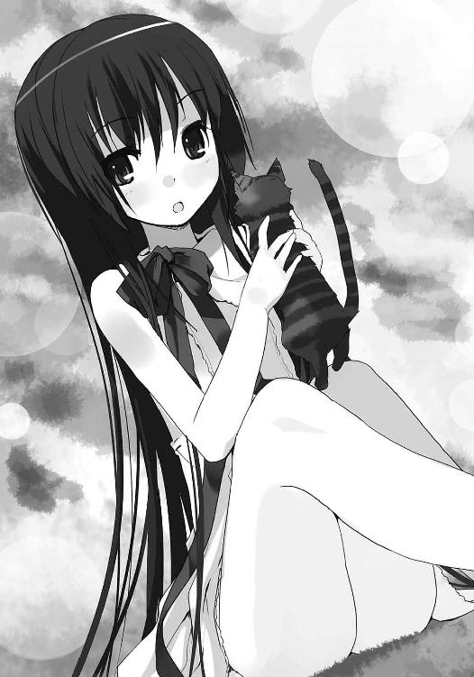

| ～覚醒遺伝子～ 空を継ぐもの (電撃文庫) | |
| 中村 一 | |
| 株式会社KADOKAWA (2015) | |
本書（電子版）に掲載されているコンテンツ（ソフトウェア／プログラム／データ／情報を含む）の著作権およびその他の権利は、すべて株式会社ＫＡＤＯＫＡＷＡおよび正当な権利を有する第三者に帰属しています。
法律の定めがある場合または権利者の明示的な承諾がある場合を除き、これらのコンテンツを複製・転載、改変・編集、翻案・翻訳、放送・出版、公衆送信（送信可能化を含む）・再配信、販売・頒布、貸与等に使用することはできません。
プロローグ
真っ白なシーツが張られたベッドに、ひとりの少女が横たわっている。
壁、床、カーテン、すべてが白いこの病室のなかで、透き通るような彼女の肌こそが、なによりも白い。
「具合は、どうだい？」
医師である影島は、手にしたカルテを眺めながら少女の枕元に立ち、そう呟いてみた。
返事はない。
「......相変わらず、安定しているね。憎いほどに」
目を閉じ、死んだように眠る少女。
彼女は、典型的な『眠り病』患者だ。
生後すぐに発症、以来、今日に至るまでずっと眠り続けている。この病院に来てから、経過観察の結果にも大きな変化はない。しかし肉体の健全性は、驚くほど完全に保たれていた。
──つまり、健康そのものだ。
「......目を覚まさないことを除いては、だがね」
影島は近くにあった椅子を引き寄せ、そこに腰を下ろす。片手で眼鏡を押し上げ、眠る少女の横顔に語りかける。
「普通、『眠り病』の発症からこれだけ長い時間が経てば、とっくに骨が暴走していてもおかしくはない。......なのに、きみだけは違った」
十年を超えてなお静かに眠り続ける患者は、他に例がない。
影島は立ち上がってカルテを椅子の上に置くと、窓へと近づいた。頑丈な鍵を外し、分厚い強化ガラスの窓を開け放す。特別病棟の最上階にあるこの部屋に、秋の冷たい夜風が流れ込んできた。
影島は大きく深呼吸すると、窓枠に背を預け、少女を見た。
──誰も、彼女の特異性を、理解していない。
「僕が、それを解明し、『眠り病』の原因を突き止める......」
煙草を吸い終えた彼はそれを首からぶら下げている携帯灰皿にねじ込むと、窓を閉めて再び頑丈な鍵を下ろした。カルテをつかみ上げ、ドアへと向かう。
部屋の電気を消して、影島は振り返った。
「おやすみ、ツェツェ」
うっすらとした月明かりが、少女の眠るベッドの上にこぼれ落ちている。浮かび上がったその白い顔に向けて、影島は小さく微笑んだ。
「明日は寝坊せずに起きられることを、祈っているよ」
今日も、彼女はそこにいた。
今にもその脚が折れてしまいそうな、古い簡素な寝台が、部屋の中央にぽつんと置かれている。彼女はそこに浅く腰かけて、じっと俺のことを見ている。
俺は彼女から視線を外し、あたりを見回してみた。
......ひどく、現実感のない部屋だ。
白くくすんだ壁に、歪んだ床。窓ガラスの向こうには、真っ黒な闇が充満している。一方で、灯りはひとつも見あたらないのに、部屋のなかは光に満たされていた。
この部屋にドアはない。
とはいえ、どうやってここに入ったのか、そしてどうやってここから出るのか......。そういった些末なことを意識する必要はない。
いつだって気づいたときにはもう、俺はこの部屋のなかに立っているからだ。
細い肩を隠してしまうほど長い彼女の髪が、ほのかに艶を放っている。寝台から投げ出された白い素足は、床に届くか届かないかというところで、なにかのリズムに合わせるように、ゆっくりと前後に揺れていた。
シンプルなデザインのワンピースを身にまとっている彼女。しかしいつでも、その服装の印象は希薄だ。対照的に、引き込まれそうなほどに強い引力で俺を捉えて放さないのは、ふたつの黒い瞳。
口を開くことは簡単だ。
目の前に座る少女に対してなんでもない挨拶を投げかけ、自己紹介を済ませ、名前を尋ねる。
ただそれだけのことを、俺は一度として、実行に移したことがない。
......彼女とはもう、何度会っているのか分からないほどなのに。
物音ひとつしない、静謐な空間。ただそこに立ち尽くし、彼女と対峙し、もの言わぬ瞳をのぞき込む。まるで作り物のような、整った顔立ち。どんな表情も、どんな感情も、そこからは決して読み取れはしない。
そんなことを、何十分も、何時間も、とにかくとても長い時間、疲れることもなく続けている。どう考えても、これって普通じゃない。
そう。これは、夢。
時間も空間も感覚も、自他の境界も、世界の均衡さえも超越する、自由奔放で無責任極まりない、夢の世界。
そんな場所で、毎晩、彼女と出会うのだ。
──やがて、ぼんやりとした光のなか、視界の隅で小さく白いものが翻った。
ひとつ、またひとつと、それは頭上から降ってくる。
小さな、羽根だ。
俺はゆっくりと手を差し伸べ、それを手のひらに受けようとする。しかしそんな俺をあざ笑うかのように、白い羽根はまるで幻のように俺の身体をすり抜けてしまう。
空気のような軽さを思わせるそれが音もなく床へ落ちるとき、ようやく気づく。
もはや数え切れないほどの真っ白な羽根が、空から降っているのだ。この部屋の天井をすり抜け雪のように舞い落ちて、俺の視界を白く染め上げてゆく。
降りしきる羽根の隙間に、彼女の姿が見えた。
寸分違わぬその姿勢、そしてその表情。今まさに天から落とされんとする白い幕には目もくれず、それを見透かすように、彼女はこちらをまっすぐに見つめている。
その姿を見ていると、どこか懐かしいような、恋しいような、抗えない感傷が胸を締めつけるのだ。
俺はやるせない寂寥感に襲われ、思わず片手を持ち上げる。決して届かないとは分かっていても、彼女に向けて、その手を伸ばす。
もうじき、夢が終わるだろう。いつもそうだ。硬直していた身体が動くのは、最後だけ。今さらいくら手を伸ばしても、遅すぎるのに。
胸を押し潰さんばかりの不安は何度味わっても慣れるものではないが、絶望に沈む必要はない。
だって、明日も彼女は変わらずそこにいるのだから。
＊
覚醒した柳原月雄はしばらくのあいだベッドに横たわったまま、薄暗い天井を眺めていた。
夢の最後に湧き上がった不安感。その微かな残り火が、胸中に立ち昇ってすぐに消える。
「......また、出やがった」
予知夢。正夢。夢判断。
噓くさいと思っていたそんなフレーズも、連日立て続けに同じような夢を見るという体験をした今ならば、少しくらいは信じてやってもいいと思った。
が、あいにく夢判断をしてくれそうな物好きは身の回りにはいない。いたとしても、そんなことを頼む気など毛頭ない。
ならば、こんな夢など、気にしなければよい。
それだけだ。
以降の考察に意味は生じない。
月雄はそこで思考をすっぱりと打ち切った。
さて、今日も今日とて、静まり返った一日が始まる。
起き上がった月雄は、ドアを開けて部屋を出た。
大きな窓から朝日が射し込む広いダイニングには、人の気配がない。
テーブルの上に、用意された朝食が並んでいる。
「......」
高級ホテルの朝食かと思ってしまうような種類と量のそれらを一瞥し、月雄は壁にかかっているホワイトボードに目をやった。
父親なのか、それとも母親の字なのか、それすらも分からないが、とにかくそこには、今日も仕事で帰りが遅くなること、もうじき始まる学校の期末試験に向けて勉強に精を出せということ、それだけが書かれている。
誰の字だろうと、月雄にとっては関係がなかった。
医者である父も、弁護士である母も、朝は早く、夜は日付が変わってから帰宅するのが普通だ。一週間近くまともに顔を合わせないことだって、珍しくはない。
顔を洗い服を着替えると、月雄はテーブルの上に並んだ豪華な朝食には手を付けず、棚から取り出した菓子パンひとつを鞄に放り込んで家を出た。
駅近の高層マンション最上階に住む月雄は、毎朝電車で一時間かけて通学している。
共働きでエリートの両親から生まれた月雄もまた、否応なくエリートの道を歩んでいた。
月雄が通っているのは、県下でも有数の進学校。
生真面目な連中が、生真面目に学力を養い、生真面目に有名大学を受験する。そんな場所に飛び込んだことが、果たして自らの決断だったのか、実はそうではなかったのか......。
今ではもう、月雄自身にも分からないことだった。
「最も騙しやすい人間は、すなわち自分自身である......、か」
いつかどこかで聞いた格言を意味もなく呟きながら、駅までの道のりをゆっくりと歩く。
脳裏に、先日、両親と交わした会話の内容が浮かんでいた。
＊
「お前、どうするんだ。受験は」
ソファに座る、父の背中。
その声を聞くのは、数週間ぶりだ。
「さぁ......、知らないね」
「医大は、どうだ」
瞬時に湧き上がる、言いようのない嫌悪感。
父の背中を、静かに睨みつける。
「興味がない」
「お前なら狙える。受けておくといい。損にはならん」
「損得の問題か？ ......それに、受けるのは俺なんだ。俺が自分で、決める」
「受験にもそれなりの金が必要なんだぞ。知ってるか？」
「──」
くだらない、本当にくだらない会話だ。
こちらを少し馬鹿にしたような父の声音を聞きながら、月雄は胸中で毒づく。
「金なんて」
言いかけて、すぐに止める。これじゃあ、相手の思う壺だ。
......まったく、忌々しい。
「やりたいこと、学びたいこと。......そのくらい、お前にもちゃんとあるだろう」
「あいにく、見当たらないな」
「なんて口のきき方してるの。お父さんに向かって」
キッチンの奥から、母親の鋭い視線が届く。
「......ちっ」
もはや、この場にいることに耐えられそうもない。
くるりと回れ右して、リビングを退散する。
「聞いてるの、月雄！」
きんきんと響く母の声を背中でブロックして、月雄は自室へと逃げ込んだ。
＊
最寄り駅のホームに辿りついた月雄は短く息を吐き出すと、ベンチに腰を下ろした。
灰色のホームに整列する学生やサラリーマン、彼らを薄目で眺めつつ、鞄からパンを取り出す。ただ甘いだけのそれを缶コーヒーで胃の中へ流し込んでいると、隣に誰かが座った。
「またパン？ 月雄さぁ、毎日そればっかじゃん。よく飽きないよね」
「......乃絵瑠か」
短すぎるスカートから綺麗な脚をのぞかせている同級生の女の子が、明るく染めた茶色の髪を指先で弄びながら、こちらを見ている。
「はーい。今日もかわいい、のえるちゃんでっす」
月雄とは幼なじみの彼女、同じ高校に通うだけあって一般的な学力という意味では、相当に賢い。だが、いかにもな秀才面をしていないところが、彼女の魅力でもあった。
「のえるちゃんがいくらかわいくてもね、定期試験は構わずやってくるのです。......と、いうわけで、月雄、勉強してる？」
そう言って乃絵瑠は、ぺしゃんこの鞄のなかから一冊の本を取り出して広げる。
彼女の細い指先、その爪に塗られたマニキュアの光沢を眺めながら、月雄は呟いた。
「お前さ。そのナリで化学の参考書なんか読んでると、すごい違和感があるぞ」
「......違和感？」
彼女は即座に顔を上げ、ふふんと鼻を鳴らした。
「ちちち。ギャップと言って欲しいわね、ギャップと。そう、時代が求めているのは、なんと言っても意外性よ！ ギャップはとっても大事な、モテ要素なのだ！ ......ね、そう思わない？」
「知らん。......ただ、勉強するなら、家や学校で集中してやればいい。わざわざ移動中にまでやる必要はない」
「うるさいなぁ。あたしは月雄とは違うのー。寸暇を惜しんで勉強しないと、授業についていけなくなるのー」
左耳のイヤリングを揺らし、右耳のピアスを光らせながら、乃絵瑠が形のよい唇を尖らせた。
「のー」
「......」
敢えてそれには返事をせずに、月雄はパンをかじり続ける。
しばらくのあいだ、乃絵瑠は口を尖らせた顔のままでこちらを睨んでいたが、構ってもらえないことに気が付いたのだろう、やがて表情を元に戻すと正面に向き直った。
開いたばかりの参考書をぱたりと閉じて、乃絵瑠はそっと瞼を落とす。
そして、穏やかな声で言った。
「ずいぶんと、涼しくなったよね」
「......もう秋だからな」
「あたし、秋って好きだな。空気が澄んでて、凜としてて」
「......」
月雄はベンチの背もたれに体重を預け、ホームの屋根の隙間からのぞく高い空を眺める。
乃絵瑠の感傷に対して、素直に相槌のひとつも打てない自分を、少しだけ情けなく思った。
しかし彼女は、こちらの無反応、無関心には慣れているのだろう。さして気にした様子もなく、黒いソックスと革のローファーで飾られた細い足を、ぶらぶらと揺らしている。
その視線の先では、自分たちとは違う制服を着た高校生の男女が携帯電話片手に、朝から大声でわめき合っていた。
「あっ、ねぇねぇ、月雄さぁ、携帯買った？」
「なんだよいきなり。そんなん、買うはずないだろうが」
「ふふ。だよねぇ。月雄、友達いないもんねぇ」
なぜか乃絵瑠が笑う。
「ああ。いないな」
だから月雄も、笑ってやる。少し自嘲的に。
「冷たいからね、月雄って」
「......そうか？」
「うそっ、自覚ないし！ それってどうなの？」
「どうなのと言われても困る」
「それにしてもさぁ、高校生にもなって携帯持ってないなんて、世間広しといえども、月雄くらいじゃない？」
「そんなわけあるか。だいたい......」
言いかけたが、口を閉じる。ホームに電車が滑り込んできたからだ。月雄はパンの袋を握り潰してゴミ箱に捨てると、乃絵瑠と並んで立ち上がった。
＊
──『「眠り病」死者、二百人を超す』──
新聞の大見出しに、そんな文字が並ぶ。
月雄は吊り革をつかんだ手の甲に額を当て、前に座る老人が広げている新聞を眺めていた。
『眠り病』というのは、このところ騒がれている、原因不明の奇病だ。これにかかった人間は覚めることのない深い眠りに落ち、最悪の場合、体内で起こる異変によってその命を落とすことになるのだ。
──『原因は未だ特定できず』『有効な治療法の確立は困難』──
記事の頭に並ぶのは、そんな絶望めいたフレーズ。
伝染病のような大流行を引き起こしているわけではないが、確実にその患者数は増え続けている。ただ、その増え方があまりにも緩やかなのである。
家族や友人、近しい人に発症者がいない月雄にとっても、その病気は今ひとつなじみがなく、具体性を持った恐怖感を抱けないのだ。
......なんだか恐ろしい病気が、流行り始めているらしい。
『眠り病』という言葉をメディアで見たり聞いたりするたびに、月雄のなかにはそんな漠然としたイメージが生まれてはまた消えるのだった。
「ねぇねぇ、つきおー。進路希望の紙だけどさ」
隣に立つ乃絵瑠が自分の携帯をいじりながら、唐突にそんな話題を振ってきた。
「ああ、昨日書かされたヤツか」
「そ。志望校を三つ書くアレ。月雄、どこにしたの？」
「......さぁな。分からん」
「分からん、って、なにそれぇ。まさか、書かなかったの？」
乃絵瑠はさして驚いた様子もないまま、顔を少しだけこちらに向けた。
「もちろん書いたさ。『漫画家』『ギタリスト』『映画監督』。......どうだ？」
しばらくのあいだ黙ってこちらを見ていた乃絵瑠は、やがて目を閉じ、おもむろに長いため息をついた。やれやれと首を横に振りながら。
「あーぁ。これだから月雄は。......どんな大学だって狙える成績してるくせに」
月雄は応えなかった。
車窓の向こうに流れてゆく見慣れた風景を眺めていたら、乃絵瑠がまた口を開いた。
「ね、医大は？」
「......なんで」
律儀にその単語に反応してしまう自分が恨めしい。
「だってぇ、月雄のお父様、お医者じゃん」
「馬鹿言うな」
あからさまに不機嫌な声を出して、乃絵瑠を睨みつけた。すると彼女は肩をすくめて視線を外し、今度は鞄から英語の参考書を取り出して読み始める。
月雄は苛立つ気持ちを抑えようと、再び車窓へと目を向けた。
医師。それはたしかに、世間からは尊敬される職業だ。しかし月雄は、遅くまでの仕事や当直などでいつも家を空ける父に対して、憧れの眼差しを向ける気にはなれなかった。
──兄弟もおらず、幼い頃からいつもひとりで遊んでいた記憶。
誰もいない家を出て学校へ行き、誰もいない家に帰る日々の繰り返し──。
月雄は吊り革をつかむ手を放し、その指先で右のこめかみにそっと触れた。普段は髪に隠れて見えないが、そこには古い傷跡がある。
──ずっと昔、まだ幼かった頃、育児休暇中だった母親とよく遊びに行った公園。
お気に入りの遊具から落ちて、月雄は大怪我をした。
小さな頭から血を流す月雄を見て、母親は血相を変え、すぐに救急車を呼んだ。
運び込まれた救急病院、固い診療台に寝かされた月雄は朦朧とする意識のなか、父親が自分を助けてくれるのだと信じて疑わなかった。
『りっぱなおいしゃさん』と呼ばれていつも尊敬されている父親が、月雄の怪我をあっという間に治してくれるのだと......。
しかし、そうはならなかった。
連絡を受けた父親は、すぐに駆けつけてはくれなかった。怪我をした月雄の傍には......、いてくれなかった。
応急処置を受け、大事を取っての検査入院。
しかし幸いにも深刻な事態にはならず、数日後、月雄は退院を許された。
頭に包帯を巻いて帰宅したその日、いつものように夜遅くに帰ってきた父親の口からは、
『仕方がなかった。あの日は他にもっと、大事なオペがあった』
という言葉だけが放たれた──。
将来自分がどんな道へ進もうと、医者にだけはならない。いつしか、そう決めていた。
他人が聞けば笑ってしまうような、幼稚な子どもの駄々なのかもしれない。
けれども、もう決めたことだ。
深く絡まり根づいた反撥心、残されてしまったしこりを完全に取り去ることは難しい。
この決意についてこれ以上の想いを巡らせることに、月雄は僅かな価値すら見出せなかった。
「......医者なんて」
そんな囁きは、列車が鉄のレールを刻む音にかき消される。
「ねぇ、月雄」
隣から、乃絵瑠の声が聞こえた。
「なんだよ」
「もし......、もしもだよ？ もしもあたしが、『眠り病』になったらさ」
いつしか乃絵瑠は参考書から顔を上げ、前に座る老人が読む新聞、その大見出しに躍る文字を見つめていた。
「そのときは月雄がお医者様になって......、治してね？」
月雄は応えなかった。
乃絵瑠の横顔を窺うことも、しなかった。
ただ前を向いて、車窓の向こうに流れる風景をその瞳に映していた。
＊
乃絵瑠が『どんな大学でも狙える成績』と評した月雄のそれは、入学以来、たしかに高い水準を保っていた。学内試験のたびに飽きずに発表される順位では、月雄はクラスでは常に二位以内、学年で見ても五位から下にこぼれ落ちたことはなかった。
始業まであと、十数分。
教室のなか、生真面目なクラスメイトたちは生真面目に談笑したり、早くも机に向かってノートを広げ、予習もしくは復習に取り組んでいたりする。
最後列の自席に腰かけた月雄は、携帯音楽プレーヤーのイヤフォンを耳に押し込み、薄目を開けて彼らを眺めていた。
漏れ出す音が耳障りなのだろうか。隣に座る女子生徒がちらりちらりと冷たい視線を突き刺してくる。横目で見ると、真っ黒な髪をひっつめた彼女と目が合う。相手が小さく舌打ちをしたような気がした。
月雄は視線を外し、ゆるゆるとした動作でボリュームを下げた。最大音量だった目盛りが、半分くらいのところまで減少する。
「いやいや。余裕だねぇ。柳原くん」
恋人の囁きみたいな音量になってしまった音楽を上から塗り潰すように、粘り気を含んだ声が振ってくる。
月雄はそちらを見ずに言った。
「なにが」
「不思議でしょうがない。きみは一体いつ勉強しているのか」
「......」
「授業中にもたまに居眠りしていたり。そんなきみが、どうしてこれほどデキるのか」
声の主は山元という男。クラスで月雄と一、二を争う成績の持ち主である彼は、なにかと月雄に絡んでくる。
「塾にも行っていないというし。ましてや、きみが家庭教師をつけている......、まさかね」
他人の手法を穿鑿する暇があるなら、自分のやり方を見直して無駄を省くことを考えたらどうだ？ ──月雄はそんなことを考えるが、わざわざ口には出さない。
目の前に立つ山元にも、彼が振ってきたこの話題にも、興味がないからだ。
「例えば......、睡眠学習ってこともあり得るな」
「......ふん。全く、きみは馬鹿にしているね。僕らを」
山元がそう言った瞬間、教室中から見えない視線がこちらに向けられたような気がした。月雄は不覚にも、背筋が寒くなるのを感じる。
「それはあれか。被害妄想ってヤツか」
「どうだかね」
にこりともせずにこちらを見下ろしていた山元は、不意にその顔を歪めた。
「隣のクラスの津原さんといい、君ら天才を見てると胸がざわざわするよ」
「俺は、天才なんかじゃ......」
山元が口にした単語に刹那の拒絶感を覚えるが、月雄は息を止めてそれをなんとか押し止める。
「......誰だよ。ツバラってのは」
「噓だろ？ 彼女を知らないわけ？ 本当にかい？ ......いやはや！ 恐れ入るね！」
このいちいち癇に障る物言いこそが、どうしても山元を好きになれない理由なのかもしれない。
「津原君華。きみだって、その名を見たことくらい、あるはずだろう？ ......試験のたびに発表される成績順位表、いつだってそのトップに掲げられる名前さ」
「......知らん」
それは見栄でも噓でも誇張でも、なかった。
旧態依然としたこの学校の匂いにも、それを素直に受け入れているクラスメイトたちにも、学年一の成績優秀者にも、興味はなかった。心の底から、どうでもいいと思っていた。
「開いた口が塞がらないってのはこのことだね。......全く、きみは自由奔放で羨ましいよ」
どこか軽蔑するような眼差しを逸らした山元は、きびすを返すと向こうへ行ってしまった。
「......なんだよ」
道を歩いていたら、いきなり犬に嚙まれた。そんな気分だ。
始業前の安らかなひとときに、わざわざ要らぬ不快感をまき散らしやがって。月雄は苛立ちを隠そうともせずに、イヤフォンを耳から引き抜くと制服のポケットにそれを押し込んだ。
「つっきっおー。ねぇねぇねぇ、これ、教えてくれてもいいよ」
入れ替わりでやってきたのは乃絵瑠だ。彼女は数学の教科書を開いて月雄の机に置き、細い指で、とある部分をびしりと指し示した。
「ここなのです！ 全っ然分かんないのです。どうしてくれよう！」
「それは、『教えてください』と言ってるのか？」
「ん？ 『教えてくれてもイイよ』？ かわいいのえるちゃんのために。月雄が。無償で」
目を細めた乃絵瑠が白い歯を見せて、悪戯っぽく笑う。
「......書くもん貸して」
ぶっきらぼうにそう言うと、彼女は左手でくるくる回していたペンを差し出してきた。月雄はそれを受け取ると、教科書の余白に澱みなく式を書き込み始める。
数学なんてものは反復、そして少しの閃きだ。
「すごっ！ 早っ！ ......なんでなんで？ どうして分かるの？」
目を丸くしている乃絵瑠に、ペンを返してやる。
「覚えるんだよ、パターンを。そしたら閃くことができる。結局それが一番早い」
「さっすが月雄！ いやー、エライねー。期待を裏切らないねぇー。おりこうだねぇー」
教科書を眺めてほうほう言いながら戻っていった乃絵瑠を見送りながら、月雄はぼそりと呟く。
「......礼もなしかよ」
そしてそのまま、机に突っ伏した。
『僕らを馬鹿にしてる』
耳の奥に、山元の言葉が蘇る。
......馬鹿にしている？ そんなつもりはこれっぽっちもない。
たしかに周りの連中は、俺のことを天才肌呼ばわりする。けれども、それは違う。断じて、違う。天才ってのはもっと自由で、柔軟なものだ。だから違う。連中は、俺の努力や挫折なんてものを知らない。俺の羞恥心、自嘲、虚栄......。
そこでようやく、始業のチャイムが鳴り響いた。
月雄は救われたような気がして、ゆっくり顔を上げる。
ちょうどそのとき振り返った乃絵瑠がこちらを見て、その顔になんだか優しげな微笑を浮かべてみせた。
「......というわけで、その骨が見つかってからというもの、学界には様々な論説が飛び交ってな」
今ひとつ通りの悪いダミ声を壇上で張り上げているのは、月雄のクラスの担任であり、歴史の教師でもある、柴田だ。
「しかしまぁ、無理もない。なにせそれまでは、『天使』の存在を裏付ける直接的な証拠なんぞ、ひとつも存在しなかった。つまり、あくまで想像の域を出なかったわけだ。ところが実際に翼を持った骨格が発見されたことは、その筋の研究者たちに並々ならん衝撃を与えた」
そう言って柴田は背を向け、汚れた黒板に『翼』と大きく書き殴った。
この光景を、これまで一体何度見ただろうか。
月雄はぼんやりと、そんなことを考える。
「このとき初めて、『有翼種文明』という呼称が認定されたことになる」
クラスの連中はといえば、皆揃って俯いて、机上に広げた教科書や参考書と格闘している。
色とりどり。教科は様々。
数学、英語、物理、古文。......つまり、誰も柴田の話を聞いてはいなかった。
柴田は本業であるところの世界史の授業そっちのけで、大学時代に専攻したという古代史の話に熱弁をふるう。
なかでも彼のお気に入りが、『有翼種文明』だ。
「気が遠くなるほど遥か昔、この世界に存在し、今は存在しない、失われた文明。判読できる文献史料が存在する有史以前......、つまり先史時代に栄えていたとされるわけだが......、その範囲定義は非常に曖昧だ。手掛かりも極端に少ない。そのため、研究には専ら自然科学的な手法を用いることになっとる」
──とてつもなく古い地層から発見される建築遺物や、精巧な天文学施設らしき遺構。
不可解なまでに高度な文明が栄えていたとされるその一方で、ほぼ同時代のものとみられる原始的な洞窟壁画に多数描かれていたものは、翼を持つ人々の姿だった──。
これまで何十回と繰り返し聞かされた柴田の『古代史講義』を、月雄は心のなかで反芻する。
「併せて各地に普遍的に存在する、『有翼人種』にまつわる口伝や伝承。......そしてそして、ついに出土したのが、翼らしき骨格を保持する古代人類の骨......、というわけだ」
『有翼種文明』とは文字通り、天使のような姿をした者たちが築いたとされる、古代高度文明のことなのだ。
「どうだ？ 想像力をかき立てられんか。おとぎ話のなかだけの存在と考えられていた『天使』たちが、かつては実際にこの世界の空を飛び回っていたのかもしれん──、ということに」
生徒たちから『翼狂いの柴田』と揶揄される彼の声を聞きながら、月雄は窓の外へ目をやる。そこにはなんの変哲もない午前の空が広がっているだけだ。間違ってもそこに、翼を持った人間が飛翔しているなんてことはない。
そもそも、羽ばたくことによって人の身体を浮かび上がらせようとするならば、必要とされる翼も、それを動かすための力も非常に大きなものになる。そんなことは、物理を少し学べばすぐに分かるはずだ。
歴史というものを追究する際、そういった観点からの考察は為されないのだろうか......。
晴れ渡った秋空を眺めながら、月雄はどこか醒めたような、寂しいような気持ちでそんなことを考えていた。
「......？」
そのときだった。
視界の隅でなにかが動き、月雄の意識がそちらに奪われる。
目を凝らしてみれば、向かいの旧校舎の屋上、そのフェンス越しにひとりの女生徒が立っているのが見えた。
──なにしてるんだ、あいつ。
月雄は口のなかで小さく呟きながら、その女生徒を見守る。
小さいのではっきりとは分からないが、彼女は屋上にじっと立ち尽くしたまま、動く気配がない。顔を上げ、その視線はただまっすぐ空に向けられている......、ように見えた。
「......ふん」
授業を抜け出して、ひとり、空を見上げる女子生徒。
なるほど、それはたしかに、ミステリアスな響きを持つ言葉かもしれない。
......しかし。
脳裏に浮かんだ刹那の感傷を迷わず一笑に付してから、月雄はすぐに意識を教室のなかへと引き戻した。
彼女が誰で、どこでなにをしていようとも、自分には関係がない。
そう、思った。
ただ、それだけだった。
『翼狂い』の柴田による『有翼種文明』の話は貴重な授業時間のほとんどを費やして続き、やがて一時間目の終わりを告げるチャイムが鳴り響く。
休み時間の訪れとともにざわめきを取り戻した教室、月雄はふと思い出したかのように、窓の外を見やった。
だが、遠くに見える旧校舎の屋上には、すでに誰の姿も認めることはできなかった。
＊
「つきおっ」
放課後。
鞄をつかんで立ち上がろうとした月雄の背中をぽんと叩いたのは、乃絵瑠だった。
「......なんだ？ ようやく、礼を言う気になったのか」
「へ？」
目をぱちくりさせている彼女に優しいフォローを入れてやろうかと迷ったが、さすがにちょっと恩着せがましいか、と急に恥ずかしくなる。
「いい。流してくれ」
だからこんな呟きで誤摩化そうとしたのだが。
「......ん？ あぁ、ああ！ あれ、ひょっとして朝の？ 数学の問題のこと言ってる？」
「もういいって」
「なになに？ かわいいのえるちゃんのために、月雄は喜んで教えてくれたんじゃないのぉ？ 自分からお礼要求しちゃうなんて、ちょっとちょっとぉ、恩着せがましくない？」
......ほら、こうなってしまう。
したり顔の乃絵瑠を前に、月雄は気づかれないように小さくため息をついた。
「悪かった。喜んで教えさせて頂きましたとも。お礼なんて滅相もない」
「うふふ」
これくらいで許してもらおう。嬉しそうに笑う乃絵瑠に対して軽く右手を上げ、背を向けて退散しようとしたら、いきなり肩をぐいとつかまれた。
「ちょいまちっ！ なんで帰るのっ。のえるちゃんと話してる最中なのに！」
「放課後だからな」
さらに言えば、帰宅部だからだ。
乃絵瑠はたしか、軟式テニスだかなんだかの部活をやっているはずだ。別のクラスの女子が放課後に「練習行こー」と彼女を呼びにくる光景を何度か見ている。
「まっすぐ帰るの？ 寄り道もせず？」
「この世界で一番好きな道は、帰り道だ。寄り道じゃない」
「じゃあさっ、のえるちゃんが寄り道の素晴らしさを月雄に教えてあげよう！」
月雄流シャープでウィットなジョークを華麗にスルーした乃絵瑠が無邪気に笑いながら、そんなことを言う。
放課後の開放感からか、彼女のテンションは少しばかり高い。
「......つまり？」
「んっもぉ！ 一緒に帰ろ、って言ってるんでしょ！」
乃絵瑠がじれったそうに両手をぶんと振り下ろした。
「お前、部活は」
「そこなんですよ、旦那」
素朴な疑問をぶつけてみると、彼女はそっと月雄に近づき、耳元で囁いた。
「練習出たくないの。そういう日もあるのさ」
「要するにお前は、この俺をダシにして練習をサボろうと」
「わあっ、なに言ってるの月雄！ そんな、人聞きの悪い！」
「乃絵瑠、練習行こー」
慌てる乃絵瑠の弁明に重なるようにして、そんな声が聞こえた。見れば見覚えのあるひとりの女子が、教室のドアから顔をのぞかせ、乃絵瑠に向けて手招きしている。
「みっ、ミカ！ いやそのあの、あ、あたし今日はラケット忘れちゃって」
「はあ？ んなもん、部室にいくらでも転がってるでしょうが」
「えっ、う、うーん......。でもあのその、やっぱりマイラケットじゃないと調子が......」
「ナマ言ってんじゃないわよ。あんたみたいなへたくそが」
「......うっ」
「ほら、行くよ」
「ちち、ちがうのっ、つきおが！ そこな月雄が、あたしと一緒に帰りたいって！」
いきなり振られたが、うすうす予想はしていた。月雄は驚かない。
「......そうなの？」
ミカと呼ばれた子が、値踏みするようにこちらを見る。
「いいや。俺はそんなこと、一言も」
小さく肩をすくめ、言ってやる。
「あぁっ、うらっ、裏切り者！ 裏切りつきお！ うらつき！」
「......なんだよそれ」
「ほらもう、さっさと行くよ。彼も困ってるじゃない」
「かわいいのえるちゃんと一緒に帰れるチャンスなのにー。月雄めー、後悔するぞー。後悔しても知らないぞー」
「はいはい」
そんなこんなで、あっけなく友人に引きずられ、呪いの言葉を発しながら遠ざかってゆく乃絵瑠に向けて、月雄は意味もなく手を振ってみる。
『いーっだ！』としかめっ面をした乃絵瑠の口が動き、声を出さずに『ばーかばーか。つきおのばーか』と言っている。
やがて乃絵瑠は教室の外へと連行され、見えなくなった。
「やれやれ」
月雄はもう一度小さく肩をすくめ、ため息をついた。
鞄を持ち直し、自身も教室のドアへ向かって歩きながら、ぼんやりと考える。
「後悔......、ね」
別に、乃絵瑠と一緒に帰るのが嫌なわけじゃない。その申し出を無下に断る理由は、どこにもないはずだ。
それなのに。......それなのに。
月雄は心のどこかで、こう考えている。
『俺なんかと一緒にいて、乃絵瑠が楽しいはずがないさ──』
＊
屋上へと続くドアを押し開けた瞬間、勢いのある風が月雄の顔に吹きつけてきた。
思わず目を細めはしたが、そのまま、風に抗うようにして歩を進める。
ようやく建物の外に身体を出した月雄がノブから手を離すと、ドアは風に押されて勢いよく閉まった。あたりに響き渡った大きな音に、月雄は顔をしかめる。
──ここは、旧校舎の屋上だ。
乃絵瑠を見送ってすぐ、月雄は鞄をつかみ、あとを追うようにして教室を出た。
しかし、そのまま帰路についたわけではなかったのだ。
それどころか、一体なにを思ったのか、気づけばこんな場所に足を運んでいる。
「......」
なにを、期待していた？
なんの理由もないままに、ここへ来たとでも？
答えに思い当たらないわけではなかった。けれども、きっぱりと言い切ることを、心のどこかで拒絶している自分がいる。
「くだらねぇ」
苛立ちと後悔を織り交ぜた自嘲の念を振り払うように、月雄はそう吐き捨てた。
くるりと回れ右をして、今くぐったばかりのドアに手を伸ばし、勢いよくそれを開く。
「......っ！」
「あら。先客ね」
いきなりそこに立っていた人物の姿形を認識する前に、相手の放つ澄んだ高い声が月雄の耳を打つ。
彼女はさっき月雄がそうしたように、開いたドアから吹き込む強い風に目を細め、心持ち頭を下げると、ゆっくりとドアを抜けて外へ出てきた。
自然と月雄は身体を退き、相手に道を譲ってやるような格好になる。
「すごい風」
隣に立った小柄な彼女は、暴れる髪を右手で押さえながら、極めて平坦な声でそう呟いた。
「......」
一定の警戒心を胸に抱いたまま月雄が返す言葉を探していると、相手が再び口を開く。
「あなた、こんな時間にこんな場所で、なにしてるの？ ......風だって、こんなに強いのに」
「俺は......、たまたま迷い込んだだけさ。すぐに退散するよ」
彼女はしばらく黙って、切れ長の目で月雄の顔を眺めていたが、やがて視線を逸らすと無感情に、
「そう」
と呟いた。
そうして彼女は月雄の脇をすり抜けると数歩進み、ある場所で立ち止まった。
こちらのことなど眼中にない様子で、細い顎をゆっくりと持ち上げ、その視線はまっすぐ、大空へ。
「......」
──間違いない。
空を見上げて立ち尽くす、このシルエット。
午前の授業中、教室の窓から見たのは、この女生徒だ。
月雄はそう確信したが、だからといってどうすればよいのかは、分からなかった。
ノブをつかんだままだった左手の力を少し抜いて、試しに軽口を叩いてみる。
「なにか、見えるのか」
彼女は目だけを横に動かして、こちらを見た。相変わらず顔は空へと向けたままだ。
「......いいえ」
その瞳は、『まだいたの？』と言っているような気がした。
「いったいこんなところで......、なにしてるんだ」
先ほど彼女が月雄に対して投げかけた問いを、そっくりそのまま、相手にぶつけてみる。
実は今朝もあんたがこの場所にいるところを見た──、とは、敢えて言わずにおいた。
「初対面のあなたにこんなことを言うのは、なんだかおかしいことだとは思うけれど」
彼女はそう前置きしたうえで、
「でも、隠すことにも、噓をつくことにも意味はないから、教えるわ」
そんな台詞を吐いた。
月雄は黙って、続く言葉を待つ。
「わたしはここで......、『天使』を探してるの」
「......」
月雄の予想を遥かに超えた単語が飛び出し、一瞬の思考停止に陥ってしまう。
再び空へと視線を投げた彼女の横顔を見ながら、月雄はなんとか言葉を絞り出す。
「──『翼狂い』、ってやつか？」
すると彼女は顔をこちらに向け、少しだけ愉快そうな笑みを浮かべた。
「あなた、柴田先生のクラスなのね」
「あぁ。......柴田の授業はいつだって世界史そっちのけで」
「論文は読んだ？」
月雄の言葉を遮って、彼女がそう訊いてきた。
「──論文？ ......なんの、ことだ」
途端、彼女はもう興味を失ったかのように月雄から視線を逸らし、空を見上げる。
ふ、という短い笑い声が耳を打った。
「あなた、古代史、嫌いでしょう？」
どこか軽蔑するような、見下すような口調でそう言われ、月雄は思わず反論してしまう。
「別に嫌いってわけじゃ......。ただ、好きになれないだけで」
彼女はもう一度短く笑い、今度は月雄のほうを見ずに言った。
「......もしも『天使』を見つけたら、わたしに教えて頂戴ね」
それは、『ここであなたとこれ以上、話を続けるつもりはない』という宣告だ。
食い下がる理由を持ち合わせていない月雄は黙って小さく頷き、つかんだままだったノブを引いてドアを開け放った。
屋上をあとにしようとした、そのとき。
「わたしは二組の......、津原よ」
不意に、彼女が名乗った。
驚いた月雄は動きを止め、思わず彼女のほうを振り返る。
「まさかあんたが──」
今朝聞いた、山元の言葉を思い起こす。
『津原君華。きみだって、その名を見たことくらい、あるはずだろう？ ......試験のたびに発表される成績順位表、いつだってそのトップに掲げられる名前さ』
「ツバラ、キミカ？」
山元が一目置く『天才』とやらは、相変わらず空を見上げたまま、動かない。
「初対面なのにフルネームで呼び捨てにされたのは......、さすがに初めてよ」
「そいつは悪かったな。俺は呼び捨てにするのもされるのも、慣れてるんでね。抵抗がない」
「そう。......仲のよい彼女でも、いるのかしら？」
瞬間的に思い浮かんだのは、乃絵瑠の顔だった。
冷徹な意志でもってそのイメージを脳裏から消し去り、月雄は相手に負けじと無感情な声を放つ。
「俺は、柳原月雄だ」
君華は大して面白くもなさそうに、小さく呟いた。
「よろしくね、ヤナギハラくん」
「今日も変わらず、安らかな寝顔だね」
影島は両手を白衣のポケットに突っ込んだまま、少女が眠るベッドの脇に立っていた。
まばゆい朝日が窓から降り注ぎ、病室には白い光が溢れている。
ベッドに横たわる少女は、まるで光のなかに浮かんでいるようにも見えた。
「どんな夢を......、見ているのやら」
『眠り病』の発症は、なにも今に始まったことではない。
遥か昔から認識されているのは、特定の昆虫などによって媒介されるウィルス感染性のものであった。発病すると高熱に悩まされ、やがて意識が朦朧となって眠るようになり、そのまま衰弱して死んでしまうというケースだ。
この『古い眠り病』に関しては、すでに治療法が確立され、感染は終息し今ではほとんど発症例も見られなくなった。
一方で、入れ替わるようにして猛威をふるっている『新しい眠り病』は、それとは全く違う性質を持つものだった。
目の前にいる少女を静かに眠らせているのは、その『新しい眠り病』だ。
それは、発熱や痛みを伴わない。
本人も、周囲の人間も異常に気づかないまま、ある日突然眠ったまま目を覚まさなくなるというものだ。
もちろん、死んでしまったわけではない。肉体の機能は失われず、その活動は正常に続けられてゆく。ただ患者の意識だけが、途切れたまま戻ることがないのだ。
患者の年齢、性別、居住地域、発症時期......。すべてがバラバラでありなんの規則性も見出せないかと思われる発症例にも、ひとつだけ共通することがあった。
それは、『眠り病』患者の最期である。
発症者は、やがて自らの体内における骨の異常発達のため、その命を落とすことになるのだ。
様々な場所の骨格がその役割上あり得ない形に変形、伸長して、皮膚を突き破ったり、ときには筋肉や内臓、つまり患者の身体そのものを破壊してしまう......。
『骨の暴走』と呼ばれているそんな現象は、影島がこれまで診てきただけでも、脚、腕、胸、背中と、それが起こる部位はケースごとに異なっていた。
通常『骨の暴走』は、『眠り病』発症から半年程度が経過した時期に、最も高い確率で起こる。逆に言えば、それより長い間、命を落とすことなく眠り続けた患者はいなかった。
──この少女を、除いては。
彼女は、発症から十年以上無事に眠り続けた、貴重な被検体である。
情報は徹底的に管理され、その病状を知るのは、病院内においても限られた人間だけ。
影島は大学時代の研究内容からその知識と先進性を買われ、この類稀なる少女の主治医を任されていた。日々の勤務をこなす一方で彼女の診察と治療を続けているが、それはお世辞にも進んでいるとは言えず、じりじりとした停滞が続く日々......。
患者が眠り続けている以上、こちらにできることなど、限られているのだ。
影島はおもむろにファイルを持ち上げ、何枚かの紙束を取り出した。そこには、少女に関する直近の診断結果が記録されている。
紙上に整列するいくつもの数値を目で追いながら、検査の結果を確認してゆく。
幾度となく、繰り返してきた作業だ。
「体温、心拍、血圧、異常なし」
一枚めくって、次の紙へ。
「血液、髄液の検査結果も出ているね。......こちらも、異常なし、と」
さらに一枚。
「頭部、胸部、腹部......、すべて骨には、異常なし」
影島は手のなかの紙をもう一度初めから見直してから、ファイルに綴じ込んだ。
「完全なる平行線だ。お見事」
瞬間的に徒労感を覚える。思わずお手上げのポーズなどしてしまった自分に気づき、影島は小さく苦笑して椅子から立ち上がった。
片手で眼鏡を押し上げ、レンズ越しに、眠り続ける少女の顔を眺める。
......これまで診てきた『眠り病』患者たちは、皆もっと憔悴した顔をしていたものだ。だが、この少女だけは違う。
綺麗に結ばれた口に、伏せられた長い睫毛。肌には瑞々しく張りがあって、とても十何年も眠り続けているようには見えない。
その寝顔には、微かな気品さえ漂っているのだ......。
「ツェツェ、きみは......」
影島はそっと手を伸ばし、少女の美しい黒髪に触れた。
「目覚めようとする意志を、持っているんだろう？」
応える者はいない。
窓から降り注ぐまばゆい朝日が、少女の白い頰の上に跳ねていた。
「きみのその強い意志が、暴走しようとする骨を抑えつけているんだ。......違うか？」
少女の薄い胸は、穏やかな寝息に合わせて静かに上下している。
「......」
影島は目を閉じ、短く息を吐いた。
少女の髪から静かに手を離し、それを白衣のポケットのなかに突っ込んだ。
支えを失った人形のように、影島は椅子に再びどかりと腰かける。
そのとき、入り口のほうから控え目なノックが聞こえて、ドアが開いた。
入ってきたのは、ひとりの看護師だ。
「失礼します。......影島先生。例の検査、一次結果が出ました」
そう言って彼女は、両手で持った大判の紙を、うやうやしく差し出した。
「そいつを待ってた」
影島は座ったままそれを受け取り、書かれた内容に素早く目を走らせる。
「特異な塩基配列は......、見つからず。これは、当然か」
横に立つ看護師が頭を傾けて、彼の手元をのぞき込んだ。
「ふむ。一部の型転移酵素にやや例の少ない特徴が出ている。......が、これだけでは、なんらかの発現を生むとは考えにくい」
影島は顔を上げ、窓の外へ目をやった。しかし彼の瞳は、そこに広がる空を見ているわけではない。
「つまり、転写と翻訳の過程に焦点を合わせるべき、か......」
自分の役目は済んだと思ったのだろう。看護師は影島の傍を離れ、ドアへと向かう。
「......ちょっと待て、これは」
そんな声が背後から聞こえて、看護師は振り返った。
影島は前のめりになって、検査結果が書かれた紙を食い入るように見つめている。
しばらく待つが、何事かをぶつぶつと呟いているばかりで要領を得ない。
「......そうか。これだ。ここだったのか！ この遺伝子の動きを追えば......」
「あの、影島、先生？」
「栗原くん！」
「は......、はい！」
「この検査を、別の患者にも実施してくれ！ できれば、すぐにでも」
「え？ その検査を、ですか？ で、でも、それは」
「大丈夫だ。すべての責任は僕が取る。......年齢や性別は問わない。ツェツェ以外の『眠り病』患者ならば誰でも構わない。頼む！」
有無を言わせぬ影島の勢いに、栗原と呼ばれた看護師は思わず息を吞んだ。
「わ、分かりました」
＊ ＊ ＊ ＊ ＊
今日も、彼女はそこにいた。
相変わらずふわふわとした、質感の乏しい白い部屋。窓ガラスの向こう側にたゆたう闇の濃度も、昨日と少しも違わない。どこまでも黒くて暗い、のっぺりとした闇の世界。
まるで空気中から染み出してくるような淡い光に照らされ浮かび上がるのは、華奢な彼女の姿だ。
その細い肩も、長い黒髪も、毎夜毎夜見ているはずなのに、こうして会うたびにどこか新鮮な感傷を抱くのはなぜだろうか......。
そうしてまた、凍りついたような静寂のなか、彼女とただ対峙するだけの時間が始まる。
恋人にしては遠すぎる、他人にしては近すぎる、そんな距離で向かい合うふたり。夢だと分かっているからこそ、こんな奇妙な状態をも甘受することができる。
どこか幼さの残る顔立ちのなかでもひときわ目立つ、黒くて大きな瞳。僅かに丸みを帯びた、細い四肢。その背格好、外見だけを見れば、彼女の歳は自分と同じか、それ以下か......。
小さな顔には、形容できるような表情が浮かんだためしがない。笑った顔や怒った顔を想像してみようとしても、いつもそれらは像を結ぶことなく霧散してしまう。
それなのに、ただひとつだけ、はっきりとイメージできる表情がある。それは、彼女がその瞳を閉じたところだ。
......どうしてなのだろう。彼女の安らかな寝顔だけは、不思議と想像ができてしまう。病的に白く透き通った肌、そして彼女が腰かける簡素な寝台が、眠りをイメージさせるのだろうか。
答えの出ない疑問をうっすらと意識しているあいだも、彼女は相変わらず俺をじっと見ている。改めて見返してみても、知っている顔ではない。
夢でしか会うことができない女の子を、夢の外の現実世界に求めるなど、馬鹿げている。そんな分かり切った自嘲も、今はぼんやりとした意識を撫でるように刺激するだけだ。
──やがて、いつものように部屋の天井をすり抜けて、数え切れないほどの羽根が舞い降りてくる。空気のように軽いそれは、ひらひらと翻り、歪んだ板張りの床に降り積もってゆく。
時間だ。もうじき、夢が終わる。
降りしきる白い羽根は次第にその数を増し、すぐに彼女の姿を覆い隠してしまうだろう。
胸中に、言いようのない寂しさが湧き上がる。金縛りから解き放たれたように、ようやく身体の自由を得たところで、俺は片手をゆっくりと持ち上げた。そうしてそれを、寝台に座る彼女に向けてまっすぐに伸ばしてゆく。きっと彼女はいつものように、眉ひとつ動かさず、こちらを見つめるだけだろう。それでも、構わなかった。
......不意に、それまで一定のリズムで揺らしていた足の動きを止め、彼女がぱちぱちと瞬きをした。
驚いた。これまで、一度としてなかったことだ。
途端に、どうしても届かないと思っていた彼女との距離が、少しだけ縮まった気がした。
なぜだ？ いつもならば、必ずここで、夢は終わるはず......。
そんな自分自身への問いかけが、かえって俺を冷静にする。
そこで、手を闇雲に伸ばすのを止め、手のひらを彼女に向けてゆっくりと振ってみた。
すると彼女は、きょとんとした顔でこちらを見た。普段の無表情とは遠くかけ離れた、感情の存在を表す顔。
「......俺は、月雄」
とうとう、声を放った。今ならば彼女に聞こえるだろう。
「あんたの......、名前は？」
彼女の顔に、小さな驚きの色が浮かぶ。それが、たまらなく小気味よかった。胸を躍らせて彼女の返答を待つ。その細い喉から、一体どんな声が紡ぎ出されるのだろう。
しかし、彼女は一向に口を開かない。
驚きの表情は少しずつ薄まり、見慣れた無表情を経て、やがてどこか寂しげな色になる。そのまま、彼女はそっと目を伏せた。前髪がさらりと流れ、小さな顔を少し隠す。
そのとき、なんの前触れもなく、ふたりが向き合う狭い部屋に空気の流れが生まれた。
初めはそよ風程度だったそれは次第に勢いを増し、舞い落ちる白い羽を片っ端から薙いで吹き散らしてゆく。
視界が奪われそうになるのをこらえて、必死で彼女を見た。その顔には、もはや悲しんでいると言ってよい、はっきりとした表情が浮かんでいる。
強すぎる風は部屋のなかを縦横無尽に駆け回り、大量の羽根がさながら吹雪のように吹きつけてくる。
両手を顔の前で組み合わせて風と羽根を防ぎ、その隙間から彼女の姿を窺う。
見開かれた俺の目に映るもの。
彼女の細い背の向こうに、まばゆい光が生まれてなにかを形作ってゆく。
それはまるで、美しい天使の翼のような......。
唐突に、そこで夢が終わる。
壁の時計をちらりと見ると、まだ深夜と言ってもよいような時間。
身体が熱い。まるで、全身の血が煮えたぎるようだ。
これまで毎夜毎夜繰り返されていた単調な夢が、不意に違う展開を見せた。それが自分をこんなにも動揺させたことに驚く。
そしてなにより月雄の意識を捉えて離さないのは、『天使』という言葉を想起せずにはいられない、彼女の背に生まれた白い翼──。
「あいつの話に......、毒されたか？」
空を見上げる津原君華の姿が、脳裏をかすめる。
月雄は軽く頭を振ると、夢の余韻を手繰り寄せながら考えた。
いつも夢の終わりに必ず抱く懐かしさ、そして突きつけられる不安感。今日は不思議とそれがなかった。あまりにも無理がある展開に、感傷に浸る余裕さえなかったのかもしれない。
その代償だろうか。覚醒後に湧き上がった別の不安が、月雄の意識を支配する。
彼女が初めて見せた感情。伏せられた長い睫毛。美しくも哀しげだった、その表情を想う。
不安は瞬く間に大きく膨れ上がり、小さな呟きとなってこぼれ落ちた。
「明日も......」
彼女は変わらず、そこにいるのだろうか。
質感の乏しい部屋のなかで、ちゃちな造りの寝台に座って。
白くて細い脚を、ゆっくりと揺らしながら......。
＊
やがて陽が昇り、街が動き出す。
代わり映えのない駅のホームで、ベンチに座って二つ目のパンをかじりながら、月雄はいつものように乃絵瑠を待っていた。
「遅いな......」
ひとりごちる。すでに、普段乗っている電車の時刻は過ぎてしまった。
乃絵瑠とは、示し合わせて一緒に登校しているわけではなかった。それでも、毎日のように駅で顔を合わせ、並んでベンチに座り、同じ電車に乗っていると、いつの間にか自分のなかでそれが当たり前になってしまっているのだから驚く。
「勝手な思い込み、だな」
わざわざ声に出して自分に言い聞かせてから立ち上がり、パンの袋をゴミ箱に捨てる。そのとき、同じくそこに捨てられていた新聞の大見出しが目に入った。
──『政府、有識者から成る対策本部を設置』──
連日、新聞の一面を賑わす『眠り病』に関しては、相変わらず実感が湧かない。それでも事態はゆっくりと、確実に大きくなってきているようだ。
『対策本部』という言葉に薄ら寒さのようなものを感じながら、結局、月雄は普段より三本遅い電車にひとりで乗り込んだ。
前に座るふたり組の男子中学生が、昨夜のテレビで観た格闘技の試合について、身振り手振りを加えて大声で意見を戦わせている。彼らの交わす会話には、月雄の知らない単語がいくつも出てきた。選手の名前、格闘技の種別、技の名前らしきもの......、次から次へと飛び出す固有名詞だけを聞いていても、彼らの入れ込みようが分かるというものだ。
その隣に陣取った女子高生の群れは、ドラマの話題、そしてこちらも次々に飛び出す芸能人の名前......。月雄にはその半分も分からない。
さらに隣に立つ男子高校生たち。一冊の雑誌を三人でのぞき込みながら、それぞれが主張をぶつけ合っている。のぞき込むと、どうやらゲーム雑誌のようだ。無論、月雄にはそれがどんなゲームなのかすら分からない。
楽しそうに、そして生き生きと騒いでいる彼らの様子をぼんやりと観察しながら、月雄は吊り革をつかむ手の甲に額を押しつける。イヤフォンを耳の奥深くに入れて、音量を上げた。
......彼らのように熱中できることが、自分には見当たらない。
しかし、それが月雄の心に影を落とすようなことはなかった。
成績優秀、品行方正、運動もそつなくこなす。そのくせ趣味らしい趣味は持たず、熱中できることもない。
まるで機械人形だ。なかなかストイックでよいじゃないか。
月雄はそこまで客観的に自分自身を分析し、自嘲をもって評した。
焦りや疎外感、ましてや劣等感などは抱かなかった。むしろ、少しだけ愉快に思った。
＊
昼食後の体育を終え、六時限目の教室には言いようのない倦怠感が漂っていた。しかも壇上に立つのは、『翼狂い』の柴田である。今日も今日とて歴史の授業そっちのけで、彼は自身のライフワークとも言える有翼種文明の研究について熱弁をふるっていた。
「と、いうような史料の解釈から、『天使はその身に強大な力を有していて、それを用いて翼を持たぬ人々を支配し使役した』......、といった論説も多い」
生徒たちはやはり柴田の話を聞いておらず、大半は他の教科の勉強に打ち込んでいた。放課後の部活に備えてだろうか、机に突っ伏して堂々と居眠りをしている生徒もいる。
月雄は、結局学校に来なかった乃絵瑠の座席を視界の隅に収めながら、ぼんやりと窓の外を眺めていた。
......大昔の有翼人種による支配がもしも本当のことだったとしても、それは無理のないことだったのではないか。翼を持つ人間と、持たない人間。圧倒的に違う彼らが同時代に並べば、そうならざるを得ないのが、文明というものではないか。
月雄は聞こえてくる柴田の話に対しては、胸中にてそんな解釈を下した。
「他にも、これはただの俗説とされているが......、『天使の声は子どもにだけ聞こえる』ってな話があってな。聞いたことはないか？」
応える者が誰もいないことは気にせず、柴田が続ける。
「少しばかり突飛な気もするが、俺は好きだ。──不思議な力を持っていたとすれば、言語を介さない意思疎通くらいは朝飯前に違いない──。この俗説の出所は、案外そんなところなのかもしれないな」
月雄は目を凝らし、窓の向こうに見える旧校舎の屋上へと焦点を合わせる。
──あっちの『翼狂い』も、相変わらず熱心なことだ──。
いつもの場所に立って曇りがちな空を見上げているのは、津原君華。
こんな時間だ。また授業を抜け出したのだろう。『学校一の成績優秀者』のくせに、一体、いつ勉強しているのやら。
「......」
いつか誰かから言われた台詞と同じようなことを考えている自分に気づき、月雄は思わずため息をついた。
やがて、目覚まし時計のようにチャイムが鳴り響き、一日の授業がすべて終わる。
担任柴田によって授業のおまけのように続けられたホームルームの時間を耐え忍び、生徒たちはようやく束縛から解放された。
月雄は鞄をつかむと、人の数もまばらになった教室から抜け出した。すると廊下を歩き出してすぐに、別のクラスの見知った女子生徒が前から歩いてくるのに気づく。
彼女はたしか、ミカという名で、乃絵瑠と同じ部活の......。
月雄は歩調を緩め、相手を呼び止めた。
「ちょっといいか？ 乃絵瑠のことなんだけど」
「え？ ......あぁ、あなた、ツキオくん、だっけ」
突然呼び止められた相手は少しばかり驚いた様子だったが、どうやら月雄のことを認知しているようだ。
「乃絵瑠ねぇ。朝からメールしてるんだけど返ってこなくて。いつもレス早いのに。私もちょっと、心配なんだ」
彼女は、月雄が知りたかったことを簡潔に教えてくれた。
「......そうか」
「ツキオくんにはなにかないの？ ほら、メールとか電話とか」
「携帯がない」
「へ？」
「それじゃ、ありがとう」
素っ頓狂な声を上げた彼女に礼を言って、そのまますれ違う。
月雄は、職員室に寄ってみることに決めた。
「おう、柳原か。珍しいな、どうした」
柴田はコーヒーを満たした特大のマグカップを手に、自分の席に座るところだった。雑多に積み上げられた書類を片手で押し退けてスペースを作り、そこにカップを置く。
整理分類されているとは思い難いこの書類の山も、学校の仕事とは関係のない、有翼種研究の資料なのだろうか。
「あの、乃絵瑠のことなんですが」
月雄は鞄をぶら下げたまま、柴田の隣に立つ。早速、欠席したクラスメイトの安否を尋ねてみた。
「のえる？ ......あぁ、クスノキのことか」
月雄はそのとき久しぶりに、乃絵瑠の苗字が『楠』だということを思い出した。
「お前、あいつと仲がいいのか」
コーヒーを啜りながら、柴田が要領を得ない質問を投げかけてくる。
「ええ、まぁ。一応、小さいときから」
「ほう。幼なじみってやつか。結構、結構」
なにが結構なのかはちっとも分からないが、月雄は黙って柴田の回答を待つ。
彼はカップを机にどん、と置いてから、こちらを見上げた。珍しく、音量を抑えた声でその先を続ける。
「実際のところ、はっきりしたことはまだ分からん。......お前は口が固そうだから言うが」
「はい」
「今朝、ご家族から連絡があってな。彼女は入院したそうだ」
全く予想していなかったその単語に、一瞬思考が停止する。
「......入院？」
「そうだ」
「なにがあったんですか」
「詳しいことは分からん、と言っとる」
「どこの......、どこの病院ですか」
柴田は僅かのあいだ黙ってこちらを見ていたが、さらに声を落として言った。
「なにせ突然のことだからな。お前、見舞いに行くのはいいが、邪魔にならんようにな。......場所は、聖真医科大学病院。行き方は隣駅からバスで──」
＊
学校を出た月雄は、乃絵瑠が入院したという聖真医科大学病院へと足を向けた。
普段は通過するだけの駅で電車を降り、そこからシャトルバスに乗り込む。そして、バスに揺られること十数分。
その病院は、静かな山の麓に広大な敷地を構えていた。のどかな療養所のような、独特の雰囲気を持った大病院だ。
受付で彼女の病室を教えてもらい、院内図を確認しながらそちらへ向かう。
エレベータの前で、花束を携えた一団とすれ違った。月雄と同じく、入院患者の見舞い客だろう。
月雄はそこで、自分が手ぶらであることにようやく気づいた。
「......まぁ、いいさ」
乃絵瑠とは、そんなことに気を遣うような間柄でもない、とすぐに思い直した月雄を迎え入れるように、エレベータのドアが開く。
特別病棟と呼ばれる建物の最上階、そこに乃絵瑠の病室はあった。
廊下の奥、五〇五号室。ドアの横に貼られているプレートは、乃絵瑠の名前が書かれたものが一枚だけ。どうやら、個室のようだ。
そんなことを考えながらノックをすると、なかからくぐもった返事が聞こえて、しばらくしてからドアが開いた。
出てきたのは、乃絵瑠の母親だ。
「......月雄ちゃん」
「おばさん、乃絵瑠は」
真っ赤に泣き腫らした彼女の目を見て、月雄の胸が不意に締めつけられる。
無言のままの彼女の脇を通り抜け、月雄はベッドに近づく。そこには、乃絵瑠が仰向けに寝かされていた。
その細い腹部にはぐるぐると包帯が巻かれ、一部が赤く染まっている。そして赤く染まった包帯の隙間から、大人の指先くらいの白く尖った突起物が顔を出しているのが見えた。
──なんだ、これ。
月雄もよく見知った、綺麗に整った乃絵瑠の顔。
しかし彼女はその両目を閉じ、死んだように動かない。
「乃絵瑠？」
──事故？ いや、違う。これは。
そのとき、背後でドアを閉める音が響いた。振り返ると、青いネクタイを締めて白衣を着た、男の医師が立っている。
「君は？」
分厚いファイルを脇に抱えた医師は月雄に向けてそう言ってから、乃絵瑠の母親をちらりと見た。月雄は慌てて名乗る。
「俺は彼女の......、乃絵瑠のクラスメイトで......。見舞いに」
医師は眼鏡を片手で押し上げてから、小さく頷いた。それからおもむろにファイルを開いて中を眺め、乃絵瑠の母親に向き直った。
「検査結果が出ました。......よろしいですか？」
医師はそのまま、月雄に目配せする。家族以外の者が同席する場ではない。月雄はそう思ってすぐに病室から退散しようとしたが、乃絵瑠の母親が反射的に月雄の制服の袖をつかんだ。
そのあまりの力の強さに驚きながら、月雄は医師を見た。
彼はなにも言わず、首からＩＤカードと一緒にぶら下げている銀色の筒のようなものを手で弄んでいる。......あれは、灰皿か？
「おばさん、席を外そうか？」
仕方がないので自ら、そう訊いてみる。しかし乃絵瑠の母親は弱々しく首を横に振るだけだった。
それを待って、ついに、医師が口を開く。
「『眠り病』です」
その声は瞬く間に、病室の壁に吸い込まれていった。
「さらに、腹部において一部、骨の異常発達が起こっています。奇跡的に内臓は無傷。今のところ、命に別状はありません」
乃絵瑠の母親はなにも応えない。
月雄とて、口を開くことはできなかった。
「......ですが、発症からこれほど短期間で骨の暴走を起こすケースは非常に稀です。慎重に経過を見守る必要がありますね」
「どうして......、昨日まではなんとも、なんともなかったのに」
ようやく、乃絵瑠の母親が絞り出すようにして言った。
医師はファイルを閉じると、もう一度眼鏡を押し上げた。
「ええ。『眠り病』の発症は、いつも突然なのです」
月雄は袖をつかまれたまま、ベッドに横たわる乃絵瑠を見た。
彼女は、眠っている。
仔細に観察すれば、穏やかなその呼吸に合わせて、彼女の腹部がゆっくりと上下しているのが分かる。けれども同時に月雄の目を捉えて離さないのは、そこに突き出す、白くて尖った、彼女の骨。
......眠り病？ 乃絵瑠が？
＊
特別病棟最上階の廊下をゆっくりと歩きながら、月雄は何気なく首を巡らせて窓の外へと視線を投げた。
高台に位置するこの病院からは、眼下に街の姿を一望できる。
沈みゆく夕陽によって真っ赤に染め上げられた街は、その内に炎を宿しているようにも見えた。
月雄は立ち止まり、振り返る。静まり返った廊下には、自分以外には誰もいない。窓辺にゆっくりと近づき、赤い世界を視界に収めた。
......結局、乃絵瑠の病室を出たのはあれから半時間以上も経ってからだった。
首から灰皿をぶら下げた医師が乃絵瑠の病状を説明し、簡単な診察を終えて退出してからも、乃絵瑠の母親は月雄をしばらく放してはくれなかった。
場を取り成すような月雄の問いかけにも、乃絵瑠の母親は惚けたように生返事を繰り返すばかり。やがて彼女が力なく月雄の袖を離し、乃絵瑠のベッドに顔を埋めて泣き出したので、月雄は黙って頭を下げ、そっと病室を抜け出したのだ。
目を閉じ、死んだように眠る乃絵瑠。
......あれが、『眠り病』なのか。
これまでメディアが騒ぎ立てる奇病を横目で眺めていた月雄は、近しい友人である乃絵瑠の発症を目の当たりにして、ようやく具体的な恐怖の輪郭を感じ取った。彼女の細い腹を突き破った骨が、それだけインパクトを持って月雄に迫ったということに、違いなかった。
『眠り病』の手に捕えられた人間を覚醒させる手段は、今のところ見つかっていない。
......乃絵瑠は、もう二度と、目覚めない？ あの大きくて綺麗な瞳が開かれることは、もう、ないのか......？
窓枠に手をつき、燃える世界を見下ろしながら、月雄はその事実をゆっくりと咀嚼する。
瞬間的に、腹の底からこみ上げてきたのは、意外にも自嘲の波だった。
「......なんてこった。俺は......」
月雄は笑う。
「寂しい......、のか？」
他人のことになど、興味はないつもりだった。それなのに──。
ただひとり自分に親しく接してくれていた乃絵瑠が、不治の病に冒されたという、厳然たる事実。
その事実が、いつでも凪いでいるはずの月雄の心に、静かに広がる波を刻んだのだ。
そのことに、月雄は今さらながら小さく驚く。
『つきおー。ねぇねぇ、これ、教えてくれてもいいよ』
『かわいいのえるちゃんと一緒に帰れるチャンスなのにー。月雄めー、後悔するぞー。後悔しても知らないぞー』
自分の名を呼んでくれる、少し舌足らずな、かわいい声。それが不意に頭のなかでリプレイされて、まるで楽しかった過去を顧みるときのような、穏やかな懐かしさを感じる。しかしその直後に訪れたものは、胸の奥を冷たい力で押し潰そうとする、容赦のない寂しさだった。
「......」
短いため息とともに胸中の不快な圧力を吐き出したそのとき、廊下の奥の部屋のドアが勢いよく開かれ、ひとりの看護師が慌てて飛び出してきた。彼女は走りながらこちらに一瞥を投げ、そのまますれ違うと、ばたばたと階段を駆け下りてゆく。
それを視界の隅に収め、いつしか月雄は歩き出していた。廊下を曲がり、無心のまま手足を動かし、屋上へと続く階段を一段飛ばしで上り始める。落ち着いた呼吸の裏で、自らの心音が身体のなかから鼓膜を震わせる。鉄製の重いドアに両手をつき、一気にそれを押し開けると、暗い踊り場に赤い光が射した。
広い屋上には簡素な物干し台が並べられ、洗われたシーツが何枚も干されている。それらは真っ赤な西日を受け、まるで踊り狂う炎のようにも見えた。
音もなく揺らめくその炎に身を投じるように、月雄はふらふらと進む。
足元は見えない。見えていない。
火の海を、進む。
──なんだ？
微かに、声が聞こえた。猫の鳴き声のような......、違う。あれは、赤ん坊の声？
すっかり乾いているシーツを両手でかき分け、進む。
泣いているのではない。喜んで笑っているわけでもない。ただ、声を発するという行為を楽しむかのように、意味を持たない喃語が聞こえてくる。
風にはためく赤いシーツ。揺れる炎をかき分け、声がするほうへと進む。
無邪気な赤ん坊の声は次第に大きくなり、まるで月雄を引き寄せるかのように、音程を変え、強弱をつけ、響き続ける。
やがて、月雄はシーツの海を抜ける。
鉄製の柵に腰かけた、少女の背中が見えた。小さな背中だ。
あの子が、赤ん坊をあやしているのか？
少女はその細い腕を動かし、握った拳で自分が座る鉄柵をこつこつと叩いた。
赤ん坊の声が、また聞こえた。
「......え」
そのとき、気づく。
少女は、赤ん坊を抱いてはいない。
聞こえてくる喃語は、少女が自ら発しているのだ。
不意に、驚くほど軽やかな動きで、少女が柵の上に飛び上がった。二本の足でそこに立ち、くるりと身体の向きを変える。
目が、合った。
その瞬間、月雄は息を吞んだ。
少女の長い黒髪が風に翻弄され、ふわりと広がる。こちらを見つめているのは、漆黒の瞳。世界が赤く染まっても、決してその色を変えない、どこまでも黒い双眸。
何度も見たはずなのに、初めて見るその瞳。
毎夜毎夜、月雄が夢の世界で会う少女。
白い羽根が舞い落ちる部屋。彼女は悲しげな顔をして、細い背に光の翼を広げた──。
その彼女が今、ここにいる。
「......あんた、は」
手を伸ばせば届くその存在に向けて、月雄は知らず知らずのうちに言葉を紡いでいた。
少女は僅かに目を見開き、こちらを見ている。
やがて、その顔に微かな笑みが浮かんだ。
少女は細い指をぴんと伸ばして月雄を指差しながら、口角を上げて微笑んでいる。
たどたどしい喃語が、口元から漏れた。これが、彼女の声。
月雄は少女の顔をじっと見返したまま、動くことができない。
......間違いない。
同じなのだ。
その背格好、どこか幼さの残る顔立ち、身にまとっているシンプルなデザインのワンピースまでもが、夢のなかで見たそのままなのだ。
覚醒時に見聞きしたことが夢に登場するというのは、よくあること。だが、夢で見た少女が現実の世界に飛び出してくるなど、聞いたこともない。
......そんな馬鹿げたことが、あってたまるか。
月雄はそう思いながらも、目の前の少女から目を離すことができない。
「誰、なんだ」
しかし少女はそれには応えず、まるで本のページをめくるような何気ない動作で、立っていた柵からこちら側へひょいと飛び降りた。
靴を履いていない少女は白い素足で屋上を踏み締め、そしてこちらを見て、少し笑った。
「俺を......、馬鹿にしてるのか？」
意識して低くした月雄の声にも、少女が怯む様はない。にこにこと笑いながら、相変わらず無邪気な歓声を途切れ途切れに上げている。その声の調子はまさに、大好きな母親に抱かれて喜ぶ赤ん坊そのものだ。
嬉しそうに笑いながら目の前まで近づいてきた少女は、なんの前触れも見せずに両手を大きく広げたかと思うと、がばりと月雄に抱き着いてきた。
「......なっ」
驚いて反射的に身を退いたが、すでに月雄の背にしっかりと両手を回していた少女をそのまま引きずる格好になる。少女は身体を離す気配もなく、きゃあきゃあと笑うばかり。
「お、おい、なに考えてんだ！」
月雄よりも頭ひとつぶん背が低い少女が、その顔を月雄の胸にぐりぐりと押しつけて遊び出したので、慌てて彼女の両肩をつかんで無理矢理引き剝がした。
「......いい加減にしろよ」
怒気を孕ませ押し殺した声にも、少女は動じない。両肩をつかまれていることが面白いのか、彼女は無邪気なはしゃぎ声を上げて、その場で小さく飛び跳ねる。
このままでは、埒があかない。
少しも会話が成立しないことに、月雄の苛立ちが頂点に達する。
「ふざけるな！ ちゃんと喋れ！ あんた、名前はなんていうんだ？」
とうとう、月雄は短く怒鳴り声を上げた。
──すると、少女はぴたりとその動きを止める。
小さな顔からは笑いが消え、口元はみるみる歪んでゆく。
やがて堰を切ったように、少女は泣き出してしまった。
瞬く間に大粒の涙を両目からこぼし始め、外見に似合わず、幼い子どものように泣き叫んでいる。
な、なんだ？ なぜ、今ので泣くんだ？
月雄は驚いて、少女の肩から両手を離した。
「お、おい。そんな、泣かなくても。......怒鳴って悪かった。......ごめん」
行き場を失った両手を意味もなく握り締めたり開いたりしながら、今度は小さな子どもをなだめるように、優しい声を出す。
しかし、少女が泣き止む気配はない。
「......」
しばらく待つが、変わらずその涙は流れ続ける。
......やれやれ。
月雄は目を閉じ大きく息を吸い込むと、それを細く長く吐き出した。
右手を持ち上げ、少女の頭をそっと撫でる。
少女がその細い肩をぴくりと震わせ、動きを止めた。
「よしよし」
少女が顔を上げる。
潤んだ瞳と、濡れた長い睫毛。それらは真っ赤な世界のなかにおいても、引き込まれそうなほどに黒い。
間違いない。これは、夢のなかで幾度となく対峙した、あの美しい瞳だ。
「いい子だ。......だから、泣くな」
少女の顔をのぞき込みながら、ぽんぽんと頭を撫でる。
やがて少女の嗚咽は緩やかになり、こちらを見上げたその顔に、はにかむような笑顔が浮かんだ。白い手の甲で、両目をごしごしとこする。
その様子を見ながら、安堵とともに月雄もつられて少し笑う。
すると、機嫌を直した少女は先ほどと同じように両手を大きく広げ、奇声のような歓声を上げながら月雄に勢いよく抱き着いてきた。
「うぐっ」
当然、それを避けるわけにもいかない。
月雄は彼女の容赦ない突撃を甘んじて受けながら、胸中で小さく呟いた。
......おいおい。勘弁してくれ。
「どう？ 眠り姫のご様子は」
涼やかなその声に、本館の屋上で煙草を吸っていた影島は振り返る。
聖真医科大学、医学部時代からの同期である、川又という女が立っていた。彼女も、この病院の医師だ。
「ああ。問題ないね。抜群に安定している」
そして彼女は、影島が貴重な『被検体ツェツェ』の主治医であるという事実を知っている、数少ない人間のひとりだ。
「なんら進展がないということね。ご苦労様」
「......他人事だなぁ」
「他人事だから訊いてるの」
馬鹿にしたような彼女の口調に多少の懐かしさを覚えながら、影島は煙を吐いた。
「......また、新たに『眠り病』の患者が入院してね。さっきまで、特別病棟で診てた」
「歳は？」
「十七歳。女。こちらは今のところ、普通の『眠り病』だ」
「このペースじゃ、一年後には医者不足ね。確実に」
「......あの病気に関しては、俺たちにできることなんざ限られてるさ」
「眠り姫を診ているあんたがそんな調子で、どうするの」
長い髪を一本に編み込んで背中に垂らしている川又は、ゆったりとした歩みで影島の隣まで来ると、右手をこちらに差し出す。
彼女の横顔を見ながら、影島はその手に煙草を一本渡してやった。彼女が口にくわえたそれに、火を点けてやる。
「たまには自分で買えよ」
「嫌よ。私は喫煙者にあらず」
「......吸ってるじゃないか」
彼女は空いた右手で前髪を払い、鋭い目で影島を見た。
「あんたに近づくときだけね。副流煙を吸わされるのが癪だから。それなら自分で吸う」
「どんな理由だ......」
それからしばらくのあいだ、互いに無言のまま、煙を吸い込んでは吐き出す。
彼女とは、このように会話のない状態であれ苦とは思わない。それくらいの間柄である。
「ずいぶん久しぶりに話した気がするわ。あんたと」
「そうか？ ......まぁ、そうかな」
今だって、会話らしい会話もしていないが。
「ま、がんばんなさい。上層部はあんたの報告書、首を長くして待ってるんだから。......そのうち事態が好転するかもしれないし、思い余って手を出すんじゃないわよ。眠り姫に」
「馬鹿言うな」
彼女は手を伸ばし、影島が首にぶら下げている携帯灰皿の蓋を勝手に開けた。
「それに、ささやかではあるが、進展もあった」
「へぇ。どんな？」
「調節遺伝子さ。これまでは着目していなかった対象だが、ツェツェの特異性を追究する過程で閃いた。或いはそこに、骨の暴走を引き起こすなんらかの......」
吸い殻を押し込んだ彼女が灰皿の蓋を閉めたちょうどそのとき、ふたりの背後から大きな声が聞こえた。
「......影島先生！」
そちらを見れば、自分の下で働いている、栗原という名の看護師が駆け寄ってくる。
「どうしたんだい？」
「た、大変です！」
どこか青ざめた表情の彼女は息を切らしながらそう言って、隣に立つ川又をちらりと見た。
だが、川又も『事情を知る』人間であることを思い出したのだろう。看護師は声を落として、その先を続けた。
「被検体を......、見失いました」
「なんだって？」
「午後の定時診断で病室に入ると、すでにベッドは空で」
「どういうことだ。病室の鍵は」
「開いていました。......ですが、前回退出時におけるロック記録は残っています」
「当たり前だ！ 午前中の診察のあとで、僕が鍵をかけたんだから」
声を荒げた影島に、看護師が小さく首をすくめる。
すぐに川又が短く問うた。
「つまり？」
「誰かが......、部屋のなかからロックを解除した、としか......」
看護師が恐る恐る答える。
「すぐに捜さないと。栗原さん、あなたは総務部に行って、病棟一階の出入り口をすべて封鎖させなさい。あと、全館にコード五〇五を通知して。被検体のことは、まだ伏せておくこと」
「......は、はい！」
川又の冷静な指示を受けて、看護師がばたばたと慌しく駆けてゆく。
「あんたは早く特別病棟に。私は旧館の東側から捜す」
立ちすくむ影島に向けて、川又が苛立たしげな声を投げてから早足で歩き出す。
それでも、影島は動けない。
指先に挟んだ煙草が短くなり、足元にぽとりと灰が落ちた。
「......ツェツェが、目覚めた？ ......本当に？」
十年眠り続けた奇跡の少女。
その覚醒を誰よりも願っていたのは、自分自身ではなかったか。
進展のないままに繰り返される日々の検診の最後には、いつだって少女に向けて語りかけていたのだ。『明日こそ、目覚めることを願っている』と......。
影島はまるで熱にうかされたような足取りで、本館と特別病棟を結ぶ渡り廊下を歩いていた。
緑の多い中庭に作られた遊歩道には、リハビリのために散歩をする患者の姿が見える。そこには普段と少しも変わらない、穏やかな夕刻の空気が漂っていた。
影島の目は無意識のうちに、被検体である少女の姿を捜している。しかし中庭にも、渡り廊下にも、眠り姫を見つけることはできなかった。
やがて特別病棟に入りエレベータに乗り込んだ影島は、まっすぐ最上階に向かう。
最上階、廊下の突き当たり、ツェツェの部屋のドアは開いていた。あの看護師が慌てて飛び出して、そのままにしておいたのだろう。影島は廊下を振り返ってから部屋の中に入り、後ろ手にドアを閉める。
さして広くはない病室。
いつも通りの、白い床、白い壁に、白いカーテン。
分厚い強化ガラスの窓は閉められたままだ。影島が毎日座る椅子も、普段と変わらずそこにある。しかし......。
白を基調としたこの部屋で、他のなによりも白く透き通っていた、彼女の静かな寝顔。この殺風景な部屋をツェツェの部屋たらしめていた彼女自身が、今はいない。
そして、ベッドの上のシーツは無造作に乱れていた。
「ツェツェが、目覚めた......」
その瞬間を思い描こうと、影島は椅子に腰かけて目を閉じる。
だが、これまで見守ってきた稀代の眠り姫が突如目を覚まし、そっとベッドから抜け出すその姿を想像することが、どうしてもできない。
すぐに椅子から立ち上がり、ゆっくりとベッドに近寄る。右手を伸ばし、指先でシーツに触れてみた。
眠り姫のぬくもりは、そこにはすでに残されていない。
「......」
影島は無言のまま、窓へと目をやる。
いつしか、世界は真っ赤に染め上げられていた。その赤い光を見た途端、まるで映像が投射されるように、頭のなかにひとつの考えが浮かび上がる。
きびすを返すと、次の瞬間には病室を飛び出していた。
廊下に誰もいないことを確認してから、影島は屋上へと続く階段に向かう。
＊
ツェツェは、泣いていた。
素足のまま屋上に立ち尽くし、溢れ出る涙を拭おうともせず、幼い子どものように泣き叫んでいた。
「いい子だ。......だから、泣くな」
ツェツェの前に立っているのは、制服を着た、高校生くらいの男子学生だ。
その彼がゆっくりと手を伸ばし、ツェツェの頭をぽんぽんと撫でる。
するとツェツェの嗚咽は次第に緩やかになり、高校生を見上げたその顔に、はにかむような笑顔が浮かんだ。彼女は両手を持ち上げると、白い手の甲で、両目をごしごしとこする。
高校生が、つられたように、少し笑う。
次の瞬間、ツェツェは両手を大きく広げ、奇声のような歓声を上げながら、高校生に勢いよく抱き着いた。
「うぐっ」
それを受けた彼の口から、小さくうめき声が漏れる。
幾重にも干されたシーツの海を抜けたとき、影島の目に映ったのはそんな光景だった。
「......ツェツェ、なのか？」
間違いではなかった。
目覚めたのだ。
奇跡の眠り姫が目を開き、起き上がり、自らの足で立っているのだ。
「はは......。そうか」
目の前の事実を飲み込んだ途端、意外にも腹の底からは笑いがこみ上げてきた。
影島は両膝に手をつき、弾む息を抑えながら、笑い声を上げた。わけの分からぬ愉快な気分は、しばらく収まりそうにもなかった。
と、ツェツェに抱き着かれた高校生がこちらの存在に気づいたようだ。彼女をひきずりながら振り返ると、どこか慌てた様子でツェツェを自分の身体から引き剝がそうとしている。
「......君は」
見覚えのある顔だった。
『眠り病』発症直後に骨の暴走を起こした女の入院患者。たしか、楠乃絵瑠という名だったか。今日の午後、家族に検査結果を伝えに行ったその病室で、彼女の見舞い客として、同席していたはずだ。
「いや......、あの、これは。なんと説明してよいか」
平均的な体格をしているが、背丈は影島よりも少し高い。だらしなくない程度に制服を着崩した彼は、なにやら動揺した様子で、自らにまとわりつく少女についての弁明を始める。
「あぁ。大丈夫だ。彼女のことは、知っているよ」
影島はそう言うと、ちらちらと自分を見ているツェツェの顔をのぞき込んだ。するとツェツェは無言のまま恥ずかしそうに笑い、しがみついている彼の背中に隠れてしまう。
「どうやらずいぶんと......、気に入られているようだね」
「この子が、いきなり抱き着いてきて」
「ずっと病室にいたから、人恋しかったんだろう。彼女はここの、入院患者なんだよ」
ひとまず、ツェツェを病室に戻すことが先決だ。影島はそう考える。
なにせ相手は十年越しに覚醒した『眠り病』患者なのだ。情報が不必要に外部に漏れるようなことがあってはならない。
「さぁ、あまり風にあたりすぎるのもよくない。病室に戻ろう」
そう言いながら近づき、影島はツェツェに向けてそっと手を伸ばす。だがツェツェは差し出されたその手と影島の顔を交互に見比べて、笑っているばかり。
口からは、たどたどしい喃語が漏れている。
無理もない。ツェツェは、生まれてすぐに発症し眠りに落ちたのだ。発声技術が稚拙なのは当然のこと──。
そう考えながらツェツェを観察するが、彼女は一向にこちらの手を取ろうとはしなかった。言葉が通じないのだから、それも仕方がない。
「ほら、行くよ」
影島はツェツェの手をつかむと、ぐいと引いた。少々強引ではあるが、勘弁してもらおう。
......と、次の瞬間、それは起こった。
突如、ツェツェが悲鳴に似た叫び声を上げ、腕を引く影島に対して全力で抵抗を始めたのだ。そのあまりの声の大きさに、影島も、ツェツェがしがみついて離れない彼も、仲良く驚いて飛び上がった。
「な、なにを。......そんな、泣かなくても。......痛かったのか？ ごめんよ」
影島は慌てて手を離し、行き場を失ったそれを宙に彷徨わせながら、優しい声を出した。
しかし、少女が泣き止む気配はない。
「......」
しばらく待ってみたが、変わらずその涙は流れ続ける。
どうしたものかと戸惑っていると、制服姿の彼が静かに右手を持ち上げ、ツェツェの頭をそっと撫でた。
囁くような声を出す。
「よしよし」
するとツェツェが、その細い肩をぴくりと震わせ、動きを止めた。
固唾を吞んで見守る影島を尻目に、高校生はどこか照れたような様子で、ぽんぽんとツェツェの頭を触りながら、彼女をあやす。
「いい子だ。......だから、泣くな」
ぶっきらぼうにも聞こえる彼の声色だが、やがて、ツェツェの嗚咽は緩やかなものに変わってゆく。
「......おぉ」
知らず知らずのうちにため息など漏らしてしまった自分を恨めしく思いながら、影島は何事もなかったかのように背を向け、白衣を翻した。
「すまないが......、そのまま彼女の病室まで一緒に来てくれないかな」
影島は複雑な気分を相手に悟られないように澄ました声を作り、ツェツェを見事になだめすかした彼に向かって、そう申し出た。
＊ ＊ ＊ ＊ ＊
今日も、変わらず彼女はそこにいた。
質感の乏しい白い部屋のなかに立ち、月雄は驚く。
クラスメイトを見舞った聖真医科大学病院の屋上で、目の前に座る少女と出会った。もちろん夢ではない、現実世界での出来事だ。
だから、というのは少しおかしいかもしれないが、今日からはこの夢を見ないものとばかり思っていた。
......そうか、この部屋は、病室に似ている。
ぼんやりとしたイメージによって縁取られてはいるが、はっきりとした『白さ』だけは顕現しているこの部屋。彼女が腰かける古びた寝台は、病室のベッドなのだろうか。
両足を揺らす彼女を眺めながら、月雄は考える。
現実世界での彼女は、不自然なほどに幼かった。口から飛び出す喃語に、赤ん坊のような感情の起伏。
だが、この夢のなかでは、彼女は外見に相応しい落ち着きを月雄に見せてくれる。
もの言わぬ彼女と対峙しながら、月雄はゆっくりと言葉を紡いでみた。
「......また、会ったな」
昨日までは、この夢のなかで彼女と会話をしようなどとは、思いもよらなかった。そもそも月雄が言葉を発することができたのも、昨日が初めてだったのだ。
どうやら相手には、こちらの声が聞こえているようだ。足を揺らすことは止めないものの、彼女はこちらをまっすぐに見て、控え目な微笑を送って寄越した。
「そうだね」
涼しげな声だった。
月雄は頭のなかで、澄んだその声を反芻しながら、願ってもいないこの状況が途切れないうちに、と意気込んで続ける。
「俺は月雄。......あんたの、名前は？」
少女は微かに首を傾げてみせた。不自然さを感じさせないその仕草が、実にかわいらしい。
「わたし？ 私は、ツェツェ」
「......ツェツェ？」
「そう呼ばれてる」
ずいぶんと個性的な響きである。
とはいえ、単なる愛称なのかもしれない。
深く考えることは止して、月雄は次の問いを投げかけた。
「......あんたは、なんなんだ」
あまりにも抽象的すぎる。自らの言葉を後悔したのも束の間、しかし他にしっくりとくる表現を持ち合わせていないことも事実だ、と思い直す。
「どういうこと？」
「ずっと......、夢の世界の住人だと思ってた。なのに今日、病院の屋上で」
ツェツェは右手の甲を自らの顎にそっと当て、虚空を睨んだ。
「そうね......。たしかに、夢は私の世界そのものだった」
「......だった？」
「今は違う。だって、目覚めることができたから」
ツェツェはそう言うと、その顔に先ほどと同じ控え目な微笑を浮かべる。
「ほんと、長かった......。でも、これでようやく私は、あっちの世界にも行けるようになったんだ」
月雄はそれを眺めながら、自らを落ち着かせるように、両目を閉じて指先で右のこめかみを押してみた。
......考えてみれば、夢のなかで目を閉じるというのは、おかしな話だ。しかし、この奇天烈な少女を前にして、そんな些細な疑問はすぐに意味を失う。
「見たいもの、触りたいもの。聞きたいもの。たくさんあるんだ、私」
月雄の混乱を知ってか知らずか、ツェツェは楽しそうに続ける。
「あなた、海を知ってる？ ......私、海に行きたいな。海には水があって、風があって、波があって、砂があって、貝があるんでしょう？」
「──つまり」
彼女の言葉を半ば遮り、月雄は口を開いた。
「あんたは、これまでずっと、眠っていた、と？」
その問いに、ツェツェはあっさりと頷く。
「そう。生まれてから、ずうっと」
「それなら、どうやって海を知った？」
......そんなことをたしかめて、どうするというんだ。心のどこかで、落ち着き払った別の月雄がそう呟く。
「もちろん、夢のなかで。......私じゃない、誰かの夢のなかで、ね」
ツェツェは両手をきちんと揃えて膝の上に乗せ、指先でワンピースの裾を軽く引っ張りながら、そう答えた。
「そこで見たのか？ 海を」
「うん。......綺麗だったな。蒼くて」
どこか遠い目をしているツェツェを前にして、月雄は頭のなかで少しずつ情報を取捨選択してゆく。
「つまり......、他人の夢をのぞくことができる？」
「それはちょっと、違うかな。どちらかと言えば、夢を見せ合いっこしてる感じ」
「どういうことだ」
「......振り返ってみれば、分かるかもね」
彼女は右手を持ち上げ、ぴんと伸ばした人差し指で月雄の後ろを指し示した。
「......」
月雄はどこか恐怖にも似た感情を振り払い、ゆっくりと後ろを振り返った。
そして、息を吞む。
四角い、細長い箱のような空間。
天井からぶら下がる無数の吊り革。
左右の壁際に並んだ長椅子と、ガラスがはめ込まれた窓......。
そこは、電車のなかだった。
がらんとした車内に、乗客の姿は見当たらない。しかし、どうやらこの列車はレールの上を走行しているようだ。線路の継ぎ目を刻む一定のリズムがどこからともなく聞こえてくる。窓の外に流れる景色に見覚えはないものの、それはごく普通の町並みの姿だった。
と、車両の奥のほうの座席から、誰かが立ち上がるのが見えた。乗客の存在に初めて気づいた月雄は驚きつつも、目を凝らしてそちらを見やる。
その乗客は、見慣れた制服を着ていた。ぺしゃんこの鞄を片手にぶら下げたまま、こちらを見て少し笑う。
知っている顔だった。
「......乃絵瑠」
呟いたその瞬間、列車が速度を落とし始め、やがてゆっくりと停まる。
乃絵瑠がゆっくりと動き、ドアの前に立つ。彼女がもう一度こちらを見た。
「のえるっ」
月雄は走り出す。
いつしか窓の外の風景は消え、そこにはただ、奥行きのない白さだけが充満していた。
音も立てず、列車のドアが開く。
澄んだ瞳の煌めきを残して、乃絵瑠が視線を元に戻す。彼女はするりと前に進み、振り返ることもなく、列車を降りていった。そのすらりとした体軀が、霧のような白い世界へと消えてゆく。
「待て！」
月雄の叫びを遮ろうとするかのように、ドアが閉まる。
すぐに列車は動き出し、窓の外には再びなんの変哲もない風景が流れ始めた。
「......なんだ、これ」
「普通、夢を見ているときは、みんなそうして自分の夢のほうを向いているでしょ」
不意に、背後からそんな声が響く。月雄はゆっくりと、後ろを振り返った。
そこは、見慣れたツェツェの白い部屋だ。
彼女は相変わらず古びた寝台に腰かけたまま、こちらを見ていた。
「でも、夢の外側を見ると、こんなふうに、向かい合って話もできる」
ツェツェは混乱する月雄を尻目に、悪戯っぽく微笑む。
「ということは、今俺が見ているのは......」
「そう。あなたが見てるのは、『私』の夢。そして私が見てるのは、『あなた』の夢。この世界で、お互いに向き合うっていうのは、そういうこと」
彼女の言わんとすることが、なんとなく分かりかけてきた。
今まで俺は、毎夜毎夜この白い部屋のなかに立ち、目の前の彼女と対峙しているのだと思い込んでいた。しかし、それは違ったのだ。
これは、ツェツェの夢。
質感を欠いた白い部屋の登場人物は彼女ひとりだけで、俺は、その夢を外側から眺めているだけに過ぎなかったのだ......。
「この白い部屋が、あんたの......」
ツェツェは細い顎を突き出して、視線を天井へと投げた。肩越しに、ちらりと後ろを振り返る。
「そう。これは、私の夢。......私の世界の、すべて」
そう言った彼女の言葉には、微かな自嘲の色が混じっていた。
すぐにツェツェはこちらに向き直る。顔にかかった前髪を、細い指先で音もなく払った。
「つまんないでしょ」
月雄は言葉を返せない。
「だから、私はいつも外を向いてた。自分の夢に背を向けて」
彼女は華奢な脚をゆっくりと揺らしていたが、不意に目を細めて、悪戯っぽく笑った。
「そしたら、見つけちゃったんだ。いーっつも、つまらなさそうに自分の夢に背を向けて、ぼんやりしてる人」
「......う」
「あなたの夢に映し出されている光景は、私の夢みたいにひとつだけじゃなかったけど......、いつも静かに凪いでいて、人の姿はあんまりなくて......、なんだか不思議な色合いをしてた」
「それで、暇潰しに見てたってわけか」
「そう」
ツェツェが無邪気な様子で頷く。
「どうりで毎晩変わらず、こうして......」
「初めは、単なる好奇心だったんだ。でも、毎日見てるうちになんだか気になっちゃって」
「......なにが」
ツェツェはなにかを思い出すかのように視線を泳がせると、その顔から笑みを消し去った。
「寂しそうだったから」
予想していなかったそんな言葉に、月雄は思わず素っ頓狂な声を上げる。
「......寂しい？ 俺が？」
「そうだよ」
「......は、はは。この俺が、夢のなかで、寂しそうにしていた？」
真っ黒な空に似た夢の世界、自身の夢に背を向けて寂しげにひとり佇む自らの姿を想像して、薄ら寒くなる。
「だって、いつ見ても、怖そうな顔してさ」
「わ、悪いか。この顔は生まれつきで！」
思わず声を張り上げた月雄の言葉を遮るようにして、彼女が小さく呟いた。
「同じだと思ったの」
「......」
ツェツェの表情からも声からも、その感情を読み取ることは難しい。
「私と、同じだな、って」
彼女の澄んだ声が、白い部屋にそっと広がった。
ようやく言葉を探し終えた月雄が口を開こうとした、そのときだった。
いつものように、部屋の天井をすり抜けて、数え切れないほどの羽根が舞い降りてきたのだ。
──これは、夢の終わりのしるし。
「......もう、朝か」
「短いよね、夢の時間は」
ツェツェは短い吐息に乗せるようにして、静かにそう言った。
「......あぁ」
一方的に会話を打ち切られる格好になった月雄は、ぶっきらぼうにそう応える。
「もっとお喋りしたかったなぁ」
少しだけ大げさに、ツェツェがそんなことを言う。
「『あっちの私』があなたと喋れるようになるには、もう少し、時間がかかるから」
彼女がそう呟くあいだにも、無数の羽根はまるで粉雪のように降り続ける。
「......じゃあ、またね」
また、会うことができる。
彼女自身の口からそんなお墨付きをもらい、いつしか月雄の意識はこれまでにないほど穏やかな気分に満たされたまま、覚醒へと向かう。
薄れゆく光景のなかで見た彼女の背には、今日も美しい光の翼が生まれようとしていた。
＊
「驚いたね。きみが、教科書以外の本を読むなんて」
聞き慣れたくはなかったが、もはや聞き慣れてしまった粘り気のある声が頭上から降ってきて、月雄はゆっくりと顔を上げた。
ここは、学校の図書室。
せっかくの昼休みにこんな閉塞的な場所に収まっているのは、クラスになじめない連中か、クラスになじむ気がない連中のどちらかだというのが、月雄の持論だ。
「悪いか」
意識して低くした声にも、山元が怯んだ様子はない。
「ちっとも。......ただ、興味があってね。一体きみが、どんな本を読んでいるのか」
「お前には関係ないだろ。放っとけ」
「つれないね、全く。点取り虫同士、仲良くしようって気はないの？」
「......黙れ」
月雄の脳が、山元の言葉に瞬間的な拒否反応を起こす。耳の奥に大量の水が入り込んだような、不快な圧迫感が湧き上がった。
「俺は、お前とは......」
思わずこぼれ落ちたそんな言葉に、山元は組んでいた腕を解き、僅かに顎を引いて笑う。
「それは、そうさ。残念ながらね。きみは天才。僕は凡人、よくても秀才。そのくらい、分かってるよ」
「......」
違う。それは、違う。
俺は、山元が言うような天才なんかじゃない。
決して枠からはみ出せない自分。......俺こそが、虚栄と挫折にまみれた醜い凡人だ。
「ますます驚いたな。......これ、古代史じゃないか」
いつの間にか山元が手を伸ばし、月雄が読む本を持ち上げ、そのタイトルをのぞき込んでいた。
「『有翼種文明の起源』......。まさか、よりによって『天使』の本とは！ 柴田に弟子入りでもするつもり？」
山元の腕をつかんでその手から本を奪い取ると、月雄は椅子を蹴って立ち上がり、相手を睨みつけた。
「もういいだろう。......俺の前から消えろ」
しばらく黙ってこちらを見ていた彼は、つかまれた腕を振り払うと、短い薄ら笑いを残して月雄の傍を離れていった。
「......ちっ」
本棚の向こうに消えた山元を見送った月雄は、図書室じゅうから自分に向けられているいくつもの視線にようやく気づく。
それらすべてに対して目を細め鋭い睨みを返してから、本をつかみ上げると、すぐ隣にあった棚へそれを乱暴に押し込んだ。
一刻も早く図書室を出ようと、月雄は鼻息荒く、きびすを返す。
「......っ！」
「ずいぶんと乱暴ね」
いきなりそこに立っていた人物が、涼やかな声を放つ。
「津原......、いつの間に」
すぐ背後に立っていたというのに、その気配に少しも気づかなかった。そのことを理解した途端、激昂していた月雄の心が理性を必死でたぐり寄せ始める。
君華は相変わらずの無表情で、視線を月雄の顔から本棚へとシフトさせる。その先には、月雄が先ほどまで読んでいた本の背表紙があった。
月雄は狼狽を表に出さないように細心の注意を払いながら、とっさに言い逃れを探そうとする。が、『翼狂い』の彼女を相手に、生半可な言いわけは逆効果だ。仕方なく、腹を決める。
視線を戻した君華が薄く笑い、ゆっくりと口を開いた。
「『天使』には......、もう会えた？」
すべてを見透かしているような彼女の声を聞いた途端、背筋に冷たいなにかが触れたような感覚が月雄を襲う。
「なんの......、ことだ」
図書室を支配する静寂が、堪え難い重圧を伴って月雄の肩にのしかかる。
いくつかの、無遠慮な好奇の視線を感じはするが、それに構っている余裕などなかった。
やがて、それ以上の言葉を紡げない月雄を射抜いていた君華の視線が、不意に消失する。
両目を伏せた彼女の顔には、まだ薄い微笑が張りついていて......、その長い睫毛が、妙に印象的だった。
「わたしの直感では、あなた......、柳原くんは、わたしより先に『天使』を見つけそうな気がしたから」
「買ってもらってるのに申しわけないが、俺にはそんな『美しいもの』、到底見つけられるとは思えないな。津原ほど......、熱心なわけでもないし」
謙遜に聞こえないこともない、皮肉。今の月雄にできる、精一杯の抵抗だった。
けれどもそれは、君華の周囲に張り巡らされた見えない壁に、簡単に弾き落とされてしまう。
「そう？ チャンスは誰にでも、平等に訪れるものよ」
＊
五時限目の教室、月雄は机に肘をついて窓の外を眺めながら、ぼんやりと考えていた。
今の自分の意識が、『天使』という言葉に捕えられているということ。
それは、認めなくてはならない。
なぜなら図書室での山元の揶揄を、自分はとっさに否定することができなかったからだ。
津原の直接的な問いに、まともに言葉を返すことさえ、できなかったからだ。
......もちろん原因は、あの夢にある。
今朝も、そうだった。
天井をすり抜け、まるで花びらのように降ってくる、真っ白な羽根。
そしてツェツェの細い背に白く輝く翼が生まれるとき、ふたりが向き合う束の間の時間が終わる......。
あのぼんやりとした白い部屋は、ツェツェの夢、ツェツェの世界のすべてだと、彼女がたしかに言っていた。
ならば、あの翼はなんだ？ 昨日、現実世界の病院で出会った彼女の背には、もちろん天使の翼など、生えてはいなかった......。
前を向けば自然と目に入ってしまう乃絵瑠の席には、今日も当然、誰も座っていない。
「──といった伝記群にも散見される記述が、『天使は夢を通じて語りかけてくる』というものだ」
柴田の独演会の聴衆になるつもりはなかったものの、突如飛び出したその言葉に、月雄は思わず反応してしまう。
すぐに後悔したが、どうやら遅かったようだ。柴田がこちらを見て、にやりと笑ったような気がした。
「おや？ と思ったヤツもいるだろう。そう、昨日話した、『天使の声は子どもにだけ聞こえる』という俗説。あれに近いわけだな。......言語を介さないコミュニケーション。我々人間がその域に辿りつける日が来るのかどうかは分からないが、かつての『天使』たちにとって、あながちそれは──」
柴田はどこか満足げな表情で先を続ける。
月雄は唇を嚙みながら目を逸らすと、再び窓の外に広がる空を見上げた。
──『天使』は夢を通じて、語りかけてくる、だと？
あまりにも、できすぎている。
不覚にも高揚しかけた月雄の意識は瞬間的に冷却され、柴田の言葉に対してある種の光明を期待してしまった自己を恥じ入る。
壇上では古代有翼種文明に関する考察が続けられていたが、そのときにはもう月雄の意識は内側へと閉じ、外からの情報は彼のなかに届かなかった。
......俺は、どうにかしていた。
たかだか二日続けてそれを夢に見たくらいで、現実世界での彼女の背に天使の翼を求めようなどとは、全く馬鹿げている。
とにかく、短絡的な思考はここまでだ。
......もう一度、現実世界の彼女に、会おう。
＊
それから一週間後。
放課後、前回と同じように通学電車を途中下車して、そこからシャトルバスに揺られる。
月雄の手には、駅前で購入した小さな見舞い用の花束が握られていた。
バスの窓枠に肘をつき、流れる景色からその花束へと視線を移す。
「......罪滅ぼしのつもりか」
分かっていた。
自分は乃絵瑠の容態が心配で、あの病院へ足を運ぶのではない。
......そうだ、俺は、ツェツェに会いに行くのだ。
そんな自分に嫌気を感じはするが、醒め切った意識の波がすぐにそれを押し流してしまう。物事を自分に都合よく割り切ることは、得意中の得意だ。僅かな胸の痛みもなく、月雄はそれをやってのける。
『冷たいからね、月雄は』
脳裏に、いつか乃絵瑠が言った台詞が蘇る。
「あぁ、そうさ」
月雄の小さな呟きを乗せて、バスは坂道を登ってゆく。
乃絵瑠の病室には今日も母親がいて、彼女を看病していた。
「......月雄ちゃん。また来てくれたの」
月雄は小さく頷くと、手にした花束を乃絵瑠の母親に差し出す。
「乃絵瑠の具合は？」
乃絵瑠の母親は小さく礼を言って花束を受け取ると、ゆっくりと首を横に振った。
月雄はベッドに近づき、眠る彼女を視界の正面に収める。
腹の包帯は、こまめに取り替えられているのだろう。以前見たときとは違って、血の色は見当たらない。それでも、寸分違わぬ場所に顔を出している骨の先端、その違和感だけは、どうにも隠しようがない。
痛みは、感じなかったのだろうか。
月雄は視線を動かし、乃絵瑠の顔を見た。その表情に、苦痛の色が滲み出ているようには思えない。ただ、どこか憔悴したような、彼女らしからぬ顔に見えた。
どれほど、深い眠りに落ちてしまっているのだろうか。そしてその眠りは、果たして穏やかなものなのだろうか。......彼女が目を覚まさぬ限り、それを知る術はない。
月雄は顔を上げ、見舞いの花束を花瓶に移しかえている乃絵瑠の母親の背中を見た。
後ろから見るだけでも分かる。誰よりも憔悴しているのは、他ならぬ彼女だ。
この病室で乃絵瑠を看ていても、話をすることもできない。眠り続ける娘を前に、ただじりじりと時間だけが過ぎてゆくのだ。
「おばさん、大丈夫か」
彼女が動きを止める。
「......えぇ、わたしはね」
「医者は、なんて？」
「またいつ骨が動くか分からないから、下手に手を出せない、って。......安静にして、経過を見てみるしかない。お医者様はそう言ってるわ」
──『原因不明、未だ治療法の確立されない、不気味な奇病』──
月雄は、いつかメディアで見聞きしたそんな語句を思い起こしていた。
入院しているとはいっても、『眠り病』患者に対してなにか有効な治療が施されているわけではないのだ。家族も、そして医者でさえ、安静にした患者の様子を見守ることしかできないという現実を、ようやく月雄は目の当たりにした。
乃絵瑠の病室を出た月雄は、夕刻の光が射し込み始めた廊下を進んでいた。
特別病棟最上階。ツェツェの部屋も、この場所にある。
突き当たりを曲がった先、廊下の最奥に位置するドアの前で、月雄は立ち止まる。背後の階段から、人の足音が聞こえてきたからだ。
「......君か」
現れたのは乃絵瑠の担当医であり、月雄が先日、この病院の屋上でツェツェと出会った場所にも居合わせた、影島という若い医師だ。
その首元のネクタイは少し緩んでおり、シャツにも皺が寄っている。右手に何冊かのファイルを抱えていた。
「このあいだは、とんだ迷惑をかけたね。今日は、どうしたんだい？ 乃絵瑠さんの見舞いに？」
僅かに疲れの滲んだ表情を隠そうとはせず、彼は眼鏡を押し上げながらそう訊いてきた。
「それはもう済みました。......彼女に、会えますか」
月雄は目の前のドアを指差す。
影島はレンズ越しにこちらを見つめ、十秒後、静かに口を開いた。
「どうして？」
「いけませんか。屋上での一件があってから、ずっと気になってたんです」
「この病棟には──」
彼はファイルを左手に持ち替え、空いた右手を白衣のポケットに突っ込んだ。声量をさらに落として、続ける。
「症状こそ異なるが、非常にデリケートな患者ばかりが集められている。それは君にも分かるだろう。つまり、患者にごく近しい人間以外の面会は、できればご遠慮願いたいわけだ」
「でも」
「君は彼女の家族かい？」
影島は月雄の言葉を遮った。
「......いえ」
「ならば、今回はご辞退願おう。彼女の主治医である、僕の判断だ」
「彼女の病気は」
「それは、患者のプライベートに関わるのでね」
「どうしても、駄目ですか」
「そう思ってもらうしかない」
形容し難いほどの無表情で武装した影島が、眼鏡のレンズ越しにこちらを見ている。
月雄は短く息を吸い込んだ。
耳の奥で、どくどくと自らの血管が波打つ音が聞こえる。
「彼女が......、『眠り病』から目覚めたから？」
「......！」
その瞬間、影島が絶句したのが分かった。
自らの発した言葉が相手にもたらした効果を慎重にたしかめながら、月雄は追い打ちをかけるように続ける。
「そう。ツェツェは生まれてからずっと眠り続けていた。......違いますか？」
影島は両目を閉じ、ため息のようなものをついた。彼は一歩前に進み出ると、首から携帯灰皿と一緒にぶら下げているカードを、ドアの横の装置にかざした。
短い電子音がして、病室のドアのロックが解除される。
影島は一度廊下を振り返ると、無言のままドアノブをつかんだ。
それをゆっくりと開きながらこちらを睨む影島に、月雄は軽口を叩いて応戦する。
「この部屋だけは、電子錠なんですね。ずいぶんと厳重なセキュリティだ」
「......入りたまえ」
導かれるままに、ドアをくぐった。そのとき。
「こらぁあああ！ なにしてるのっ！」
耳をつんざくような大声が、小さな病室に木霊した。
視界に飛び込んできた光景に、月雄は目を丸くする。
「きゃあっ！」
奇声のような笑い声を上げながら、ベッドの上でツェツェが飛び跳ねている。
舞い上がった無数の埃が、窓から射し込む赤い光のなかを浮遊していた。
「こらっ！ ふざけちゃダメ！ 降りなさいってば！」
ベッドの脇ではひとりの看護師が、ツェツェの蛮行を止めようと奮闘している。しかし彼女が耳を貸す様子はなく、歓声を上げながら全力でジャンプを繰り返すばかり。
「な、なんだこりゃ」
思わず漏らした月雄の声に、ツェツェが気づいた。
彼女は顔をぱっと輝かせると、奇声を一段と大きくして、月雄のほうへと両手を伸ばす。
「バカっ、危な」
着地と、それに続く跳躍。前のめりになって勢い余ったツェツェの身体はベッドを離れ、空中に放り出される。
それはまるで体当たりのように、月雄めがけてまっすぐに......。
「ぐわぁっ！」
＊
上半身をベッドの背にもたせかけたツェツェが、たくし上げたシーツで顔を半分隠し、照れたような笑みを浮かべている。
先日の喃語と比べると若干マシにはなったものの、彼女の口からときおり漏れるのはまだ言葉というには無理のある音声だけだ。
白衣の裾についた埃を両手で払いながら、影島が長くて大きなため息をついた。
「......訊きたいことがいくつかある。座りなさい」
その足元では、看護師が同じく大きなため息をつきながら、無惨にも床に散乱したファイルと書類を拾い集めている。
月雄はそれを横目で眺めながら、おとなしくすすめられた椅子に腰かけた。影島が両腕を組み、正面に立ってこちらを見下ろす。
「......まず、君の名前は？」
「柳原、月雄」
「月雄くん。君は、どうして彼女の名前を知っている？」
まっすぐに相手の目を見返しながら、月雄は答える。
「それは、ツェツェに聞いたんです。夢のなかで。彼女が生まれてからずっと、眠り続けていたってことも」
「......夢の、なか？」
「ええ」
「ふざけているのか」
影島の声が低くなった。だが、月雄は落ち着きを失わない。
「大真面目です。けれども、俺自身もそれを信じることができていない。俺がふざけてないってことを、他の誰かに証明してもらいたい気持ちです」
「......」
拾い集めたファイルを影島に手渡すと、看護師は軽く頭を下げて部屋を出ていった。
ドアが閉まるのを待って、月雄は再び口を開く。
「初めは夢だったんです。毎夜毎夜、同じ夢ばかり見る。──静まり返った真っ白な部屋で、ツェツェと向き合う、ただそれだけの夢を、繰り返し──。さすがにおかしいと思い始めていた矢先、この病院の屋上でツェツェと出会ったんです。自分の目を疑いましたよ。夢が先か、それとも現実が先なのか。俺にも、わけが分からない」
影島はしばらく月雄を観察していたが、おもむろに咳払いして目を細めた。
「確認したい。それじゃあ君は、ツェツェに関するカルテや論文など、この病院が保持している情報をなんらかの形で閲覧したわけでは、ないんだね？」
月雄は頷く。
「ええ。仮に見たとしても、理解できないと思いますよ、そんなもの」
影島はまた両目を閉じると、ため息のようなものをついた。ファイルをベッド脇に置き、窓辺に近づくと鍵を外して窓を開け放った。
その背中に向けて、月雄は続ける。
「突飛なことを口走っているという自覚はあります。けれども俺からすれば、夢で会話したツェツェが現実に飛び出してきたように思えて、初めて会ったという気がしないんです」
ベッドの上のツェツェがこちらを見て、にこりと笑ったような気がした。
影島はしばらく黙っていたが、こちらを振り返ると窓枠に背を預け、白衣のポケットから煙草を取り出した。
「柳原......。まさか、君の父上は」
その単語を聞いた途端、あらゆる感情が波のように引いてゆくのを感じる。
月雄は声を落として、口早に答えた。
「医者です。たしか、外科だったと思いますけど」
「どうりで......。柳原医師のことは僕も存じ上げている」
突然そんな話を始めた影島に、月雄はそれ以上の返事はしなかった。本当のところ、両の耳を閉ざしてしまいたいくらいであった。月雄にとって父親の話とは、そういった不快な力を振りかざす代物でしかなかったのだ。
「外科医が『眠り病』に対してできることなんて、飛び出した骨を除去することくらいじゃないんですか。病気そのものを鎮める方たちには、到底敵わないと思いますけど」
ぶっきらぼうなその言葉には、父に向けた嘲笑と、おそらく内科医であり、『眠り病』患者に対して有効な手を打つことができていない影島に対する皮肉が含まれていた。
自分の心が乱されていることに気づき、月雄は苛立つ。......いつも、そうだ。
レンズの向こうの影島の目はおそらく、月雄のそんな反抗心と動揺とを見抜いていた。しかし素知らぬような振りをして、煙草に火を点けると煙を細く吐き出す。
「お父上は、ご立派な外科医だよ。『偉大な』と言っても差し支えない。これまで誰も挑めなかったような高度なオペに、いくつも成功しておられる。内科医の端くれである僕の耳にさえ、そんな話が聞こえてくるくらいだ」
確信的な光を宿した影島の瞳から意識的に目を逸らし、月雄はツェツェを見た。
その枕元とベッド脇の棚には、何冊もの絵本が積み上げられている。
「ツェツェはまだ......、言葉を喋れないんですか？」
彼女は黒い目を動かして細い眉を上下させると、少しだけ残念そうな顔をしてみせた。
もちろん、その口からは、言葉になり切れない感情音が漏れるだけだ。
「肉体に異常があるわけではない。彼女は彼女のペースで、前に進むだろう」
「あぅわっ」
舌足らずな声。
見れば、満面の笑みを浮かべたツェツェがこちらに向けて、なにかを差し出していた。
「なんだよ。くれるのか？」
月雄は椅子から立ち上がり、彼女の白い手のひらに乗ったそれ──小さなぬいぐるみ──をつまみ上げた。
ピンク色の、まるまるとした姿。見覚えがあった。
たしか、子ども向けアニメかなにかのキャラクターで......。
ぬいぐるみに付いているタグを引っぱり、月雄は目を細める。
「『とっとこブー太郎』......。好きなのか？」
問われたツェツェは顔をほころばせ、「えへへ」と笑った。
「ふん......。なら、持ってろよ」
丸いブタのぬいぐるみを返してやると、ツェツェはそれを大事そうに両手で受け取り、きょとんとした顔をしていたが、やがて嬉しそうに目尻を下げた。
上半身をよじって、ベッド脇の棚にぬいぐるみを置く。そしてもう一度、月雄を見てにこりと笑った。
「......尋問は、終わりですか？」
少しだけ気分をよくした月雄は影島に向き直り、自らの余裕を示そうと強気な口調で問うた。
影島は無言のまま、小さく頷く。
「じゃあ、俺は帰ります」
「......ああ。気を付けて」
「ところでこの病院には、喫煙室がないんですか？」
「......馬鹿言っちゃいけない」
蛇足と思えた皮肉にも、影島が腹を立てている様子はなかった。
「冗談ですよ。ただ、あなたのせいでツェツェが病気になったら嫌だな、と」
「肝に銘じておこう」
「......また、来ます」
それには、影島は応えなかった。
内側からドアのロックを外し、部屋を出る前に、月雄はベッドのツェツェへと視線を投げる。彼女はずっとこちらを見ていたようで、にんまり笑ったかと思うと、華奢な右手を持ち上げて、それをひらひらと振ってみせた。
部屋を出る柳原月雄の背中を見送りながら、影島は火を点けたばかりの煙草を携帯灰皿に押し込んだ。
ドアが閉まり、電子音が鳴る。かちりという音がして、病室のドアがロックされた。
しばらくのあいだツェツェは月雄が出ていったドアに向けて手を振っていたが、やがてそれをベッドの上に降ろし、白いシーツの下にたくし込んだ。そうして影島のほうを見て、少し恥ずかしそうに笑ってみせた。
影島はそんなツェツェの様子をじっと見つめる。
......どうやら、彼女が月雄に心を開いていることはたしかなようだ。
互いにどこか慣れ親しんだような、リラックスした様子で向き合っていた月雄とツェツェを見ていると、月雄の口から出た突飛な言葉を頭ごなしに否定するわけにもいかない気がしてくる。
「しかし......」
夢のなかで、ツェツェと会っただと？
彼女が自らの生い立ちを、彼に話して聞かせた？
......それは、にわかには信じ難い。
だが、門外不出の眠り姫が外部の人間と接触したのは、先日の屋上での出来事が初めてだ。そしてその短い時間のなかで、影島はツェツェの生い立ちはおろか名前についてさえ、一切口にはしなかった。
そして、今日。
病院が保持する情報を知り得ないはずの月雄が、ツェツェの特異性の根幹に関わる『極秘事項』を知っていたのだ。
「......きみが、夢を操るとでもいうのか」
思わずこぼれたそんな呟きに、ツェツェが応えるはずもない。いつの間にか開いた絵本を読みふけっている彼女を眺めていると、ノックの音が聞こえる。
直後に電子錠が解除され、栗原看護師が部屋のなかに入ってきた。
「男の子が出てきましたけど......、誰ですか、あの子」
廊下の向こうをのぞいてからドアを閉めた彼女が、こちらに向き直りそう問う。
「なに、僕の知り合いさ」
「影島先生！ この病室に、関係者以外の誰かを入れることは......」
それは、服務規定に引っかかると言いたいのだろう。
「分かっている。ただ、彼は少しばかり特殊でね」
栗原看護師はしばらくのあいだ黙っていたが、もとよりあまり深く関わるつもりはないのだろう。訝るような表情を顔から消し去ると、手にした紙の束を差し出す。
「先日仰っていた、ツェツェ以外の『眠り病』患者から採取した検査結果です」
「早いね。ありがたい」
影島は彼女の手から紙束をひったくるようにして受け取る。紙束を勢いよくめくりながら、思わず声を弾ませた。
「ずいぶんと多い！ 被験者の数は？」
「二十五件です。......苦労したんですから」
ため息混じりのそんな台詞は、もはや影島の耳には届いていなかった。
彼は何件もの検査結果を次々に確認し、その目はどうやらある一点に注がれている。
ほとんど唸るようにして、影島は呟いた。
「やはり......、これだ。調節遺伝子。間違いない」
「それじゃあ、私はこれで」
「栗原くん！ 前回の、ツェツェの検査結果は」
「それはお渡ししたはずです。......複製はありませんよ。レベルＡなんですから」
冷ややかな彼女の声に、影島は慌ててファイルへ手を伸ばす。
「そ、そうか。そうだった。えぇと、ツェツェのデータは」
ファイルのページをばらばらとめくり出した影島を横目で見ながら、栗原看護師はもう一度小さくため息をついた。
彼女はそのままくるりと回れ右をしてドアへと向かうが、なにかを思い出したかのように立ち止まり、振り返った。
「そうだ。影島先生」
「......うん？」
ファイルから目を離さずに、影島が応える。
「大事なことをお伝えするのを忘れてました。もうじき、新規の『眠り病』患者さんが搬入されます。たびたび恐れ入りますが、救急外来までお願いします」
「なんだって」
ようやく、影島が顔を上げる。
「またなのか。四時頃、搬入されたばかりじゃないか」
「七人目です。今日だけで」
「一日に七人......、か」
「はい。少し前までは、多くても三週間にひとりの割合だったのに......。このままだと、特別病棟の収容数を越えるのは時間の問題です」
影島はカルテを手に持ったまま、それと分からぬように唇を嚙んだ。
たしかに、これまで『眠り病』の新規発症はある一定のペースで続いていた。しかし、ここ数日の発症者の急増には首を捻るしかない。
これまでの伸び率から考えても、明らかに異常な増え方なのだ。
一体、なにがこの穏やかならぬ事態を引き起こしているというのだろうか。
それが分からないことに対して、歯痒さを感じずにはいられない。
「......だが」
影島は小さく呟き、手にしたカルテに再び目を落とした。
『眠り病』の解明へと繫がる鍵が、ここにあるかもしれない。
ツェツェの検査を続けるなかでようやく見つけ出した、発症者が持つ共通点。
「僕が、導き出す。この手がかりの、先にあるものを」
祈りにも似た想いが、小さな音となって影島の口からこぼれ落ちる。
それは栗原看護師の耳には届いたはずだったが、彼女はどこか沈痛な面持ちを一瞬だけ浮かべると、黙ってきびすを返し、病室から出ていった。
しかし、影島はそれには気づかない。
「僕が、必ず『眠り病』を......」
カルテから顔を上げて、ツェツェを見る。奇跡の覚醒を果たした、眠り姫を。
視線に気づいたツェツェは恥ずかしそうにはにかむと、読んでいた絵本を開いたまま両手でゆっくりと持ち上げ、綺麗に整ったその顔を隠してしまう。
それでも影島は、彼女から目を離すことができなかった。
それはなにも、ツェツェのあどけない振る舞いに惹かれたからではない。
外見上はなんの変哲もないこの黒髪の少女のなかに、自分が長年闘ってきた奇病の謎を解く鍵が眠っているのかもしれないのだ。
ゆっくりと、嚙み締めるように、心のなかで影島はそう繰り返した。
＊ ＊ ＊ ＊ ＊
今日も、彼女はそこにいた。
古びた寝台に腰を下ろしたツェツェが、月雄の姿を認めて微笑みかけてくる。
「また、会えた」
ゆっくりと揺らされている彼女の細い脚を眺めながら、月雄のなかに微かな違和感がよぎる。
「覚えているのか？ 向こうでの出来事」
「もちろん。あなただって、そうでしょ？」
なにを今さら、といった表情でツェツェは眉を動かす。
「......そりゃあな。あれだけ大暴れされたんじゃ、忘れるわけがない」
少し皮肉を込めてそう言ってやると、彼女は顎を引いて言葉を詰まらせる。
「う。あれは、その」
「あのはしゃぎっぷりを見てると、とても同一人物とは思えないぞ」
月雄のそんな追い打ちに、ツェツェは唇を尖らせた。
「だって、面白かったの。飛び跳ねてもすぐ、引っぱられて落っこちちゃうのが。......ここじゃ、そうはならないから」
そう言うと彼女は脚を揺らすのを止め、ゆっくりと立ち上がった。そして軽く床を蹴って、音もなくふわりと浮き上がる。
「......なるほど、な」
そのまま空中に漂い続けるツェツェの姿を見上げながら、月雄はそんな言葉を返す。
彼女はしばらく同意を求めるような表情でこちらを見ていたが、やがて小さく肩をすくめると、静かに降下を始める。
「他にもねぇ、そうだな、『食べる』っていうのが面白いかな」
再びツェツェが寝台に腰かけるのを待って、月雄は尋ねてみた。
「食べる？ 飯をか？」
「うん。口を使ってものを食べて、栄養にするんだね」
おかしなことを言うツェツェに、月雄は言葉を返せない。だが、すぐに思い当たった。
「栄養ってのは、チューブで送り込むものだと？」
自分の顔が、僅かに引きつったのが分かる。
「違うんだね」
気にした様子もなく、屈託なく笑うツェツェ。
月雄が答えあぐねていると、彼女は少し楽しそうに続けた。
「いろんなもの食べたよ。なかでも私、あれが好き。えぇっと、あの、丸くて、甘くて」
「連想ゲームか。......丸くて甘い？ なんだ？」
「それで、黒くて」
「チョコレート？」
ツェツェがふるふると首を横に振る。
「もっと、かわいい名前。んっと、柔らかくて」
「ようかん？」
「違うの。見た目は茶色くて丸くて、食べるとはじめ白くて、それからなかが黒くて」
「白黒か？」
「えっと、『あ......』」
「あんころもち？」
眉根を寄せて首を振り、懸命に思考する彼女の様子が微笑ましく、もどかしい。
「てっぺんに、ちっちゃな粒々が」
「あんぱんか！」
ツェツェの顔が、ぱっと輝く。
「そう、あんぱん！」
「なんというかまた......、シンプルなものを」
ようやく辿りついた連想ゲームの正解に、月雄は思わず苦笑する。
「美味しいんだ。あんぱん。病院の食事とは別に、看護師さんがたまに買ってきてくれるの。それを、ぎゅーにゅーと一緒に食べるのが好き」
「古来から、黄金の組み合わせと呼ばれてる」
「そうなの？」
真面目な顔でそう訊き返してくるツェツェに不要な誤解を与えぬため、月雄は軽く手を振ってその話を打ち切った。
「それはそうとして。......あの先生は、どうだ？」
「カゲシマ先生のこと？」
彼女の澄んだ声に、月雄は浅く頷く。
「優しいよ。とっても。......でも正直、私もまだ、よく分からないんだ、あっちの世界のこと。だって、ずっと眠っていたんだから、ね」
「......」
ツェツェの顔に、優しげな表情がよぎった。
「でも、先生はきっと、私が眠っていたあいだ、私のことをずっと見守っていてくれたんだと思う。それはなんとなく、分かるよ」
「そう、か」
月雄はそんなツェツェの顔から視線を外し、白い部屋のなかをぐるりと見渡す。
すると、先ほどから気になっていた違和感の正体をおぼろげながらつかむことができた。
──前にも増して、この部屋の質感が乏しくなっているのだ。
壁はただ白いだけで、もはやそこに平面が存在するのかどうかさえ、あやふやだ。昨日までは板張りだった床は、その材質を判別できないほどにのっぺりとした地面に成り下がってしまっている。
「......これは」
「だいぶ、ぼやけてきたよね、ここも」
月雄の視線の先を追いかけたツェツェが、しみじみと呟くように言う。
「夢の世界が、薄れ始めている？」
「ある意味では、そうかも」
「......」
ツェツェがにやりと笑った。
そして彼女の指が、月雄の背後を指し示す。
「見てみたら？ あなただってもう、他人事じゃない」
導かれるようにして、月雄は振り返る。
「......これは」
このあいだも見たはずの、車内の風景。
がらんとした空間はその輪郭を失い、色彩もが消滅しようとしていた。
響いていたはずのリズミカルな走行音、レールを刻む音も、今は聞こえない。
ただ、細長く四角いように思えるだけの、おぼろげな空間がそこにはあった。
「私たちの意識が『あっちの世界』へと向きかけている、なによりの証拠」
「......俺も、なのか」
それが、月雄には信じられなかった。
夢の世界へ逃げ込んでいるつもりなど、毛頭なかったのだ。
「みたいね。いけないの？」
無邪気に首を傾げてそう問うツェツェに、月雄は苦笑を返すしかない。
「私、ここにはもう飽きちゃった。お腹いっぱい」
「......無理もない」
率直な感想に、ツェツェが微かに笑う。そしてすぐに、それはどこか悪戯っぽい笑みへと変わった。
「ねぇ。『あっちの世界』で、どこに連れてってくれる？」
「水先案内人か？ 俺は」
「だって私には、あっちの世界で他に知っている人がいないもん」
一瞬、月雄は躊躇した。が、脳裏に形成された言葉は音となって放たれてしまう。
「......家族は？」
僅かな沈黙が流れる。
ツェツェは寝台からゆっくりと立ち上がりながら、こう答えた。
「お母さんは、いたんだろうね。こうして生まれて、生きているんだから」
「......覚えていない、のか」
「知らない。顔も。声も。思い出そうとしても、思い出せないよ」
ツェツェの表情、口調は至極淡々としていて、そこに隠されているかもしれないなんらかの感情を読み取ることは、できなかった。
──ずっと、眠っていた。
ひとり、この静まり返った白い世界で──。
「寂しくは......」
月雄は言いかけて、想起された感情の途方もない深淵に、思わず身震いする。
ツェツェはその綺麗な顔に薄い笑いを浮かべ、月雄の言葉を引き取った。
「寂しくはないよ」
「......」
「ただ、ぼんやりとした時間の流れだけは感じる。一体それが、いつから始まったことだったのかは、今ではもう、よく分からないけど」
彼女の言葉は、澱みない。
「『私はちゃんと生きてる』。ずっと、そう信じてた。......だから、目覚めることができたんだよ、きっと」
「強いんだな」
普段の月雄ならば一笑に付してしまうような感傷的な言葉が、なんの抵抗もなく自分の口から飛び出す。なによりもそのことに、月雄自身が新鮮な驚きを覚える。
「そんなことない。だって夢の世界じゃ、みんな、ひとりぼっちだもの」
ツェツェは照れた様子もなく、事実を事実として語るといった調子でそう応えた。
「......みんな？」
「あなたも、わたしも、みんなひとり。それぞれの小さな世界を背負って、真っ黒な空をふわふわ漂ってる。自分だけが特別だなんて、はじめは分からなかった」
彼女の発する言葉の重みに釣り合うような相槌を持たない月雄は、ただ黙って、その続きを待ち構える。
「でも、あるとき気づいちゃったんた」
「......」
「他の人の夢には、私の知らないモノや景色、音がたくさん出てくる。......私の世界は、どれだけ経っても変わらない、この小さな白い部屋だけなのに」
ようやく、ツェツェの声に、僅かながら哀愁を感じさせるような響きが混じった。だがそれは、自己の感傷に引きずられた月雄の勘違いだったのかもしれない。
彼女の目は力強く、まっすぐに、ここではないどこかを見ていた。
その視線に打たれたように、月雄は軽く頭を振り、生温い感傷を追い払う。彼女の目を見返しながら、ゆっくりと言った。
「これから少しずつ、向こうの世界のこと、知ってくんだろ？」
視界の隅に、白いものがよぎった。
──もうじき、夢が終わる。
「俺がそれを......、手伝ってやっても、いいぜ」
白い羽根が降り止まない部屋のなかに立ち、ツェツェが微笑んだ。
「ありがと」
どこからともなくまばゆい光が溢れ、それがまるで吸い込まれるようにして彼女の背中へと集まってゆく。
今まさに大きく伸ばされようとする光の翼を見ていた月雄の胸に、不意にこみ上げるような、愛しさにも似た感情が生まれる。
「大丈夫。きっと飛べるよ」
自身気づかぬうちに発したそんな言葉が残響となって、そこで夢が終わる。
＊
翌日の、放課後。
乃絵瑠の病室に足を踏み入れ、まるでそれに付随する一連の動作をこなすかのように、月雄は手にした小さな花束を乃絵瑠の母親に手渡す。
今日は母親だけでなく父親も、娘を看病するためにこの場所に居合わせていた。
「ありがとうね、月雄ちゃん」
目に見えてやつれた母親が、か細い声で礼を言う。
月雄は黙って頷き、決まりごとのようになってしまった同じ問いを繰り返す。
「乃絵瑠の具合は......？」
訊きながら月雄の視線は、包帯が巻かれた乃絵瑠の細い腹を捉えていた。
真っ白な包帯をゆっくりと侵食するかのように赤い血が滲み、そこに突き出していた骨が一本から二本に増えていた。
息を吞む。
「これ、は」
......また、骨が動いたのだ。
「今は静かに眠っているが......、苦しかったんだと思う。直後は、血にまみれて小さく呻いていた」
父親の低い声が、病室の床を這うように広がる。
口惜しさを隠し切れないその声を耳に入れながら、月雄は乃絵瑠のベッド脇にしゃがみ込んだ。
血の滲む腹部とは対照的に、その横顔は安らかで美しい。
「......乃絵瑠は幸せだよ。親父さんやお袋さんが、傍にいてくれて」
耳元で小さく、囁くようにそう言って、月雄は目を閉じた。
そんなポーズに意味があるわけではなかった。ただ、そうすることでなにより月雄自身を揺らす罪悪感にも似た感情の波が、少しでも収まるような気がしたのだ。
ゆっくりと、月雄は立ち上がる。
黙って乃絵瑠の両親に頭を下げ、そのまま振り返ることなく病室を出た。
廊下の最奥、ツェツェの病室の前に立ち、窓から外を眺める。
建物自体が高台に位置し、鬱蒼とした木々に囲まれているだけあって、そこから見える景色は美しい。
眼下に広がる街を視界に収めてから、月雄はゆっくりと振り返った。
ドアの向こうにいるはずのツェツェに会うことは楽しみだ。それを誤魔化すつもりはない。しかし、つい先ほどまで見ていた乃絵瑠の寝顔、そして彼女の両親の姿が不意に想起され、月雄の心にどこか粛然とした気持ちが流れ込んでくる。
「......律儀だね」
足音と声が同時に聞こえ、月雄はゆっくりと振り返る。
昨日と同じように数冊のファイルを抱えた影島がそこに立ち、眼鏡のレンズ越しにこちらを見ていた。
「なにがです？」
不意に現れた相手との距離感をつかむため、月雄は敢えてそんな愚問を吐く。
「昨日、去り際に『また来ます』と言った」
「几帳面なんです。昔から」
月雄は薄ら笑いを浮かべながら、ドアの前に立ちはだかった影島を観察する。
彼の表情は硬いわけでも柔らかいわけでもなく、ただのっぺりとしている。こちらのあらゆる思惑をすべて受け流してしまいそうな、鉄壁の無表情とでも言おうか。
そんな影島の様子を見て、月雄は密かに腹をくくった。
影島は、ツェツェに近づこうとする月雄のことを疎んでいる。それはたしかだ。
なんらかの新材料をぶつけない限り、彼をドアの前から退かせることは不可能だろう。
「......あなたは」
影島が目だけを動かし、月雄の言葉に反応する。
「ずっと、ツェツェを見守っていたんですか」
「僕は彼女の主治医だからね。当然のことだ」
「いえ、俺が訊きたいのは、そういった意味じゃないんです」
「......どういうことかな」
自らの言葉に重みを与えるため、月雄は短く息を吸い込み一拍置いてから口を開いた。
「彼女には、身寄りがない。......ツェツェは天涯孤独の身。違いますか？」
影島は応えない。だがその顔には、苦渋にも似た色が滲みかけていた。
「夢のなかでツェツェは、言っていました。こちらの世界で、頼れるような人がいない、と」
それは多少の誇張を含んではいたが、月雄がツェツェにとって必要な人間であると相手に分からせるための、やむを得ない表現であった。
「......」
昨日見た映像のリプレイのように、影島は両目を閉じ、ため息をつく。彼は無言のままドアのロックを解除し、月雄を病室へと招き入れた。
ベッドに座ったツェツェがこちらを見て、笑顔を浮かべる。それは昨日までの無邪気な笑みとは少し違い、どこかはにかむような、照れ笑いであった。
月雄の背後でドアが閉まり、同時に影島が口を開く。
「月雄くん。君は昨夜も......、夢の世界でツェツェと話をした、と？」
「ええ。残念ながら、そうみたいです」
「間違いなく？」
「妄想ではありませんよ。それはたしかです」
影島がゆっくりと振り返りながらこちらを見て、そしてツェツェへと視線を投げた。
「そうなのかい？ ツェツェ」
「......そぉだよ」
ツェツェは大きな目をぱちくりと動かし、短い言葉を放った。
月雄は驚く。
幼い子どものような蓮っ葉な口調が実際の外見とは不釣り合いではあるものの、それはもはや喃語や感情音ではない。前日とのあまりの激変ぶりに、一瞬我が耳を疑ったほどだ。
「彼女の学習能力には目を瞠るものがあってね。驚異的な速度で読み書きはほぼマスターしてしまって、発音も上達する一方だ」
月雄の驚きを丁寧にすくい上げるように、影島がそんな説明をしてくれた。
「あっちじゃもっと、ちゃんとしゃべれるもん」
ツェツェが言う『あっち』とは、月雄もよく知る夢の世界のことだ。
「からだが、うまくうごかないだけ」
ぎこちないながらも言葉を発するツェツェを見ていると、月雄のなかに不思議な感覚が湧き上がる。ここはもちろん、現実世界だ。それなのに、夢の世界でしか会うことができなかったはずのツェツェが目の前に座り、喋っているのだ。
彼女は長い黒髪を指先で弄びながら、ベッドに腰を下ろし、細い脚をゆっくりと揺らしている。その様子は、あの質感の乏しい白い部屋で見た姿そのものだ。
夢と、うつつ。ふたつの世界の境界が、月雄のなかで不安定に揺らぐ。
そんな月雄の戸惑いに気づいたのか、ベッドに座ったままのツェツェが上半身を曲げ、こちらの顔を下からのぞき込む。
「そだよね？ あっちじゃわたし、もっとじょうずに、あなたとおしゃべり、できるよね？」
突然問いかけられて驚きながらも、彼女の言葉に月雄はゆっくりと頷く。
「まぁ、な」
そんなやりとりのなかで、月雄はあることを思い出した。
おもむろに鞄を開けて、そこから紙包みを取り出す。
「......ほらよ、見舞いだ」
「わたしに？」
「開けてみなよ」
隠し切れない笑みを口元からこぼしながら、ツェツェが勢いよく包装を破る。出てきた箱の蓋を開け、彼女は叫んだ。
「あんぱんだ！ たくさんはいってる！」
影島の目が、僅かに見開かれたのを、月雄は見逃さなかった。
「中毒だって聞いたからな。わざわざ買ってきた」
「そんなんじゃないもん。......でも、うれしい。ありがとう！」
「どういたしまして」
「ね、たべてもい？」
「思うさま食らうといいさ」
どうやら、夢で聞いた話は本当のようだ。
ツェツェはほくほく顔で、ベッド脇にある小型の冷蔵庫を開けると紙パックの牛乳を取り出した。それにストローを突き刺しながら、間抜けな鼻歌を口ずさんでいる。
「あんぱんとぎうにうー。あんぱんとぎうにうー」
一個五百円の高級あんぱんに、ためらうことなくかぶりつくツェツェ。
幸せそうにそれを頰張り、彼女の目尻が下がってゆく。
「君たちは本当に......、不思議なことを言う」
それまで黙ってふたりを観察していた影島が、窓辺へと近づきながら、おもむろに口を開いた。辿りついた窓枠に腰を預け、彼はこちらに向き直る。
「しかし......、『眠り姫』本人の口から出た言葉ともなれば、さすがに僕も、認めざるを得ない。夢の世界とやらで共有したという、君たちふたりの時間を」
影島はそう言いながら、月雄に椅子をすすめた。ベッド脇に置かれた、簡素な丸椅子だ。
月雄はそこに半ば崩れ落ちるようにして座りながら、いつしか張り詰めていた全身の力が抜けてゆくのを感じていた。
「それじゃあ、夢のなかでツェツェが言ったことは......」
「本当だ。ツェツェは生後すぐに『眠り病』を発症し、これまでずっと、眠り続けていた。きみが屋上で彼女と出会ったその日、奇跡の覚醒を果たすまではね」
はっきりと、影島がそう言った。
月雄は目を閉じ、細く長く息を吐いた。
......夢の世界での出来事を、信じていないわけではなかった。だが、胸中どこかに残る一抹の不安は拭い切れなかった。すべてが幻ではないのか。ひょっとすると自分の頭だけが、狂っているのではないか......。
渦巻いて消えることのなかったそんな不安を、影島の明確な肯定は一気に吹き飛ばしてくれた。月雄にとって、この現実世界にも『眠り姫ツェツェ』が存在するという、初めての力強い裏付けとなったのだ。
「ところで、教えてもらえませんか」
抜けてしまった力を入れ直し、月雄はそれなりの苦労を伴いながらも意識して張りのある声を出した。
「ねぇねぇ、つきお！」
そこに、ツェツェの元気な声が被さる。
「なんだよ」
「もういっこ......、食べてもい？」
上目遣いにそう囁く彼女の様子に、月雄は思わず笑ってしまう。
「二個でも三個でも、食べればいいさ」
「えへへ」
無邪気な笑みに、月雄の緊張が少しずつ解れてゆく。
「......それで、なにが訊きたい？」
影島のそんな言葉で、月雄は我に返った。緩んできた顔の筋肉を再び強張らせ、影島を真正面から見つめる。
「彼女の、ツェツェという名前のことを......」
「愛称だ。僕が勝手に、そう呼んでいる」
「どうして、です」
影島は窓枠から腰を上げ、指先でそっと眼鏡の位置を直した。
「かつて世界中で大規模な感染を起こした、『古い眠り病』になぞらえたのさ。『ツェツェが運ぶ、死に至る病』。君は知っているか？」
そのフレーズにはなじみがなかったものの、『古い眠り病』については月雄も少しは知っていた。
「発病すると高熱が出て意識不明になり、そのまま衰弱して死んでしまうと、聞いたことがあります」
影島が短く頷く。
「そうだ。ウィルスによる、感染性のものだ。けれどもすでに治療法は確立、感染は収束している。......代わって猛威を振るい始めたのが」
ツェツェや乃絵瑠を襲った、『新しい眠り病』というわけだ。
「あの骨の暴走は、一体なんなんですか」
「それが、専らの課題でね」
影島は一瞬その顔に苦笑いを浮かべ、すぐにそれを消し去った。
「『新しい眠り病』の末期症状である骨の暴走。その謎さえ解ければ、我々も、もう少し腰を据えてあの病と闘えるのだがね」
発症からおよそ半年という短い時間で患者に悲惨な最期が訪れるという、『眠り病』の気の早さが恨めしい。医師影島の口調からは、そんな気持ちが読み取れた。
「でも......、ツェツェにはそれが起こらなかった」
月雄の呟きに、影島はツェツェへと目をやった。
「そう。彼女が『奇跡の眠り姫』と呼ばれた所以だ」
「どうして、なんです。どうしてツェツェだけが」
つられて見ると、当の本人はさして興味がないような様子で、変わらず脚をゆらゆらと揺らしながら、三個目のあんぱんにとりかかるところだった。
「それを突き止めることが、僕の仕事だ」
影島がどこか憮然とした表情を浮かべたような気がしたので、月雄は反射的に自らの好奇心を一時抑制した。
「すみません。出しゃばったことを訊いて」
すると相手はレンズの向こうの目を僅かに丸くして、小さく笑った。
「おかしなことを言うね。夢の世界で見聞きした極秘情報を振り回しておきながら、今さら出しゃばるもなにも、あったもんじゃない」
「それも、そうですね」
相手に気づかれない程度の警戒心を保持したまま、月雄は合わせるように短く笑う。
「安心していい。君は大事な『眠り姫』のお気に入りなんだ。邪険に扱うつもりはないよ」
「......」
心持ち柔らかくなった相手の口調に、月雄は無言のまま浅く頷いた。
「ねぇねぇねぇ、つきお！」
再び、ツェツェの元気な声が飛んでくる。
「なんだよ。そんなにでかい声出さなくてもちゃんと」
「『ダイニジセイチョウ』......、ってなぁに？」
「あ？」
見れば、おとなしくあんぱんを食べているとばかり思っていたツェツェが、床に置いた月雄の鞄を勝手に開けて、中身を物色していた。
「お、おまっ、なにして」
彼女が開いて見ているのは......、よりにもよって、保健体育の、教科書だ。
「『ほるもんがぶんぴつされ、セイツウが』」
「止めろ馬鹿！」
有無を言わさず、彼女が手にした教科書をひったくる。
「あうっ、な、なにするのつきお！ ひどいよぉ」
非難がましく唇を尖らせる彼女に、化学の教科書を放り投げる。
「こっちにしとけ！ もしくはあんぱん食ってろ！」
奪取した教科書をしまってから鞄を自分の足元にひきよせ、月雄はぜいぜいと肩で息をする。
ツェツェはしばらく恨みのこもった視線でこちらを見ていたが、やがて気持ちを切り替えたのか、化学の教科書をぱらぱらとめくり始めた。
......いかん、あれではすぐに飽きてしまうのが目に見えている。せめて、もっと写真が多い世界史の資料集にするんだった......。
そこで、影島の大きな咳払いが聞こえ、月雄は正気に戻る。
「話を続けても......、いいかな」
「す、すいませんっ」
影島は指先で眼鏡を押し上げると、先を続けた。
「僕とて毎日、ぼんやり煙草ばかり吹かしているわけじゃない。......『眠り病』の末期症状を引き起こす原因については、すでにそれなりの目処が付いている」
「ほ、本当ですか？」
思わずそんな声を漏らすが、所詮素人でしかない月雄には、その言葉の持つ意味と重みは計り知れない。
しかし影島はお構いなしに先を続ける。
「僕が着目したのは、ひとつの遺伝子構造体さ」
「遺伝子、ですか」
「そうだ。その実体はＤＮＡの塩基配列、つまり遺伝情報だ。そしてそれが発現されるためには、転写と翻訳の過程を経なければならない」
「......セントラル、ドグマ」
「よく知っているね。その結果として合成された蛋白質が、生体内化学反応に寄与するというわけだ。......僕はツェツェの検査を通じ、『眠り病』が発症する仕組みを追究していた。そしてようやく辿りついたひとつの手掛かりが、調節遺伝子と呼ばれるものだ」
「調節遺伝子......？ 初めて聞きました」
「遺伝子のなかでも、遺伝情報発現のプロセスを制御する部分、とでも言おうか」
影島は手にしたファイルを開き、そのページをぱらぱらとめくった。
「僕が調べた限りでは、『眠り病』患者はみな共通してその調節遺伝子を持っている。もちろん、ツェツェも例外ではない」
小さく欠伸などをしているツェツェを眺めながら、月雄は尋ねた。
「先天的なものなんですか」
「......そこが、難しいところでね」
どこか苦しそうな声でそう言った彼は少しばかり顔をしかめて、続けた。
「あくまで発症後の『眠り病』患者のみから、共通したその特徴を検出したに過ぎない。発症する前の段階では、特徴が不明確で判別し難いんだ」
「それじゃあ」
「調節遺伝子が具体的にどのように作用して骨の暴走を引き起こしているのか......、それはまだ分からない。つまりその遺伝子は、初めはまるで眠っているかのように、もの言わぬ存在なんだ。それが『眠り病』が発症した途端、はっきりとその姿を現す。なんとも不思議な観察対象なんだよ」
「......その遺伝子を、あなたが」
「調べているのさ」
ファイルをぱたりと閉じ、影島が顔を上げる。返すべき言葉が見つからないまま、月雄は視線を動かしてツェツェを眺めた。
化学の教科書は、とっくの昔に飽きてしまったのだろう。
もはや何個目かも分からないが、飽きもせずにあんぱんを頰張る彼女。
その外見にはどこにもおかしなところはなく、健康体そのものだ。
世間を騒がす原因不明の奇病によって眠り続け、十年越しの奇跡の覚醒を果たしたなどと、彼女を見て誰が思うだろうか。
その身体、言動、表情からは、病み上がり特有の疲弊した様子とは対極の、溢れんばかりの生気が漂っているのだ。
「あなたが、『眠り病』の謎を解き明かしてくれれば......、今も眠る人たちが、助かるかもしれないんですね」
そんな言葉を吐きながら、月雄は反射的に乃絵瑠のことを想う。──同じ階、別の病室で両親に心配されながら眠る彼女が、無事に覚醒して欲しいと願う気持ち──。それ自体に偽りはないが、しかしその感傷が月雄の意識の大半を占有しているわけではない。
「......そんな現実的なお話のあとで申しわけないんですが」
月雄は心のなかで、小さく乃絵瑠に謝った。
認めなくてはならない。自分の意識は眠り続ける乃絵瑠よりも、すでに目覚めた稀代の『眠り姫』のほうにより力強く捉えられていることを。
「もうひとつ、夢の話をしてもいいですか？」
＊ ＊ ＊ ＊ ＊
「今度ばかりは突飛すぎる内容だと、自分でも思います」
「構わない。なにせ君は......」
この病院の機密情報を夢のなかでツェツェの口から知り得た人間なのだから。
影島はそんな言葉を途中で消し去り、続きを促した。
「毎晩、夢の終わりに見るんです」
月雄はそう呟いて、ツェツェを見る。
「羽根......。ツェツェの背に、光の翼が生まれるところを」
月雄の口から放たれたその単語は、影島の想定の範疇を大きく飛び越えたものだった。てっきり、ツェツェの経歴に関する情報だとばかり思い込んでいたのだ。
「翼......。ツェツェの背中にかい？ それは、どういったものなんだ」
「見たままを言えば、鳥のそれと同質の、真っ白な羽毛です。それが背中から、左右対称に伸びて......。鳥と異なるのは、その翼が光り輝いていることくらいでしょうか」
「おいおい。それじゃあまるで」
こちらが思わず笑ってしまったことに敏感な反応を示して、月雄が慌てて付け加えた。
「仰りたいことは分かります。あまりに空想めいたオブジェクトであることは、承知の上です。......でも、それを見たことに、間違いはない」
最後はどこか憮然とした表情でそう結んだ月雄の言葉をたしかめるように、影島は背後の窓枠に腰を預け、天井を眺める。
「天使の翼、か」
「もういいんです。忘れてください」
これ以上の羞恥に耐えられなくなったのだろうか。月雄がぶっきらぼうにそう言って、苛立たしげに身体を揺さぶっている。
「いや、馬鹿にしているつもりなどない。......ツェツェ、いいかい？」
「なぁに」
むぐむぐと口を動かしながら、ツェツェはつぶらな瞳をこちらに向ける。
「君は覚えているか？ 月雄くんと会話をした夢のなか、君自身の背に、翼が生まれたということを」
ちゅーっと音を鳴らして牛乳を飲んでから、ツェツェはその細い首を僅かに傾けて、怪訝な顔をしてみせた。
「つばさ？ ハネのこと？」
どうやら、彼女に心当たりはないらしい。
信じられないといった様子で、月雄が呻く。
「そんな......、本当に、覚えていないのか」
「......わたし、わからない」
「それならあの部屋で、夢の終わりに必ず降る白い羽根のことは？」
どこか意気込んでそう言う月雄に、ツェツェは細い腕を組んで虚空を睨む。
「それはしってる、かも。でも、あんまりおぼえてない」
「半覚醒の状態だからか......？」
彼らのやりとりを眺めながら、影島は考える。
同じ時空を共有しているらしいとはいえ、ツェツェと月雄、それぞれが記憶している事項にはそれなりの差異があるようだ。『ツェツェの背に生まれた翼』という対象の位置が、ふたりにとっては公平性を欠くだけのことなのかもしれないが。
「ツェツェは、あまり覚えていないようだね。......自分の背に生えたものを見ることは、難しいということかな？」
取り成すつもりの影島のそんな言葉も、月雄にとっては逆に自尊心を傷つける代物でしかなかったようだ。彼は若干ながらも語気を荒くして、まくしたてた。
「俺だって一度見たくらいならば、ここまで騒ぎません。けれども間違いなくその翼は、何回も彼女の背に......。それは、噓じゃない」
ツェツェの翼についての言及はそこまでだった。
『頭を冷やして、また来ます』
そんな言葉と微かな後味の悪さを残したまま、月雄は病室を出ていった。
自制心が強い。感情的になりかけた自己を冷静に諫めた彼の様子を見て、なかなか見込みのある青年だと、影島は客観的な判断を下した。
その知的水準の高さはもとより、影島は、彼が『眠り姫』のお気に入りであるという事実にこそ、一定の評価を見出している。
加えて、病院が保持する極秘情報を夢で知り得る彼のその突飛さに、自身知らぬうちに兜を脱いでいたということだ。そうでなければ、大まかとはいえ、わざわざ研究進捗を話して聞かせたりはしなかっただろう。
そんなことに想いを馳せながら、月雄が出ていった病室のドアを眺めていると、唐突にノックの音が聞こえドアが開いた。
入ってきたのは、栗原看護師だ。
「失礼します。定期診断の結果をお持ちしました」
「あぁ、ありがとう」
差し出されたものを受け取りながら、影島は彼女に問うた。
「急患のほうは、どうなってる？」
「先ほど入院の手続が終わりました。今は落ち着いています。ですが、今日じゅうにも特別病棟の収容数は......」
突きつけられた数値に、影島は低く唸るしかなかった。
「そうか」
渡されたツェツェの骨格写真を眺めながら、ぼんやりと考える。
──ようやくつかんだひとつの足掛かりである、調節遺伝子。とはいえ、その実体についてはまだ謎が多く、完全な解明への道のりは遠い。
そしてまるでそれを嘲笑うかのように、ツェツェの覚醒と時をほぼ同じくして、『眠り病』患者の新規発症数が異常な急増をみせているという事実──。
「でも、変ですよね。全国的に見ても、『眠り病』発症者が増えているなんていうニュースは、聞こえてきませんから......。騒がれているのは、この近辺だけ」
「たしかに、これほどまでに地理的な偏りが認められたのは、今回が初めてだ。情報は公開されていないが、この異変に世間が気づくのも、時間の問題だろうな」
なぜ、これほどまでに『眠り病』発症者が増えているのか。それも、ツェツェの覚醒を境として、この周辺地域だけに限って......。
そこになんらかの関連性が存在することを疑わないほうが、かえって不自然というものだ。しかし影島は未だに、その原因を説明できるだけの確証めいた事実を、なにひとつとして手にできていなかった。
そのとき、眺めていた一枚の骨格写真に目が留まる。
「......」
微かな違和感。それはすぐさま膨れ上がり、影島は大きく瞬きをした。
「栗原くん。ツェツェの......、上半身背面の写真はあるか？」
「え？ えぇ、ありますけど」
「見せてくれ」
きょとんとした顔をしている彼女が差し出した写真をひったくり、食い入るように見つめる。これまで一度も異常が見られなかった骨格写真に、おかしなものが映っていたのだ。
「なんだ......、これは」
ツェツェの背、その華奢な骨格に異変が起こっていた。
微かながらの伸長ではあるものの、肩甲骨の一部が不可解な変形をみせているのだ。
それはまるで......。
『ツェツェの背に、天使の翼が生まれたんです』
先ほどの、月雄の台詞を思い出す。
「......」
言葉が、出なかった。
影島は手にした写真を穴が開くほどに睨み続け、そうして、短く息を吐いた。
それは、あまりにできすぎている。
......しかし、今自分がこの目で見ている検査結果こそが、揺るぎない事実なのだ。まずは、それを受け入れなくてはならない。原因を探るのは、それからだ。
影島はきつく両目を閉じ、すぐにそれを大きく開いた。
「栗原くん、ひとつ頼まれてくれないか」
「なんです？」
「論文を取り寄せて欲しい。......ある遺伝子パターンを参照したい」
「構いませんけど。最近のものですか？ どなたのものです？ 生物学の先生ですか？」
いつものことなので、彼女は気軽な様子で質問を投げかけてくる。
骨格写真からゆっくりと顔を上げ、影島はツェツェの横顔を見た。
「いや、今回はもっと、遠い分野だ」
「......？」
「取り寄せてもらいたいのは、古代史の論文だ」
「古代史ですって？」
彼女が驚くのも無理はない。
おかしなことを口走っているという自覚を持ちながらも、影島はさらに続けた。
「テーマは、『古代有翼種文明』。......そう、天使に関する論文だよ」
ツェツェの病室で最後に影島医師と話をしてから、一週間が経った。
『夢の世界に未練はない』というツェツェの言葉通り、最近は眠りのなかで彼女と対峙する回数は半減していた。運よく会えたとしてもその時間は短く、風景はぼやけ、互いの声は途切れる。
そうなると自然に、現実世界において、月雄が彼女の病室を訪れる回数は増えていった。
ツェツェが発する言葉は日々滑らかになり、その表情もずいぶんと豊かになった。
いつしか月雄は、彼女の『成長』を見守ることに喜びを見出していたのだ。
＊
「いったい、なにが起こってるんだか、な」
月雄は手にした新聞の紙面を目で追いながら、そんな言葉を漏らす。
空からまばゆい光が降り注ぐ、休日の昼下がり。
ここは聖真医科大学病院、特別病棟の屋上である。
ツェツェと月雄が、初めて出会った場所だ。
──『「眠り病」発症者が爆発的増加』──
そんな大見出しのあとには、「発症例の急増は限られた地域でのみ起こっている」という事実が、奇妙で不可解な現象として説明されている。
月雄は新聞を無造作に畳むと、それを尻に敷いてあぐらをかいた。
「発症地域が限られてるってんなら、『眠り病』ってのはやっぱり感染性なんじゃないか？ ウィルスとか、細菌とかの......」
とはいえ、今まさに自分がその発症急増地域の只中にいるとは、月雄にはどうしても実感できなかった。
隣を見上げてみれば、ツェツェは鉄柵に両手をつき、遠い目をして彼方の風景を眺めている。少なくとも、月雄の呟きに対して興味を示している、といった顔ではない。
そのときツェツェが横を向いて、す、と顔を上げた。
すると、彼女の手元に一羽の小さな鳥が降り立つ。驚いたことにその鳥はツェツェを警戒するどころか、鉄柵に置いた彼女の白い手にじゃれつくように、そのまわりを飛び跳ねている。
「ふふ」
ツェツェは横顔に微笑みをたたえ、そっと右手を差し出した。途端、小鳥が羽ばたき小さく浮かび上がったかと思うと、彼女の手のひらの上に着地する。
「いい子だね」
透き通った、優しい声。それは、親しい友達に語りかけるような、滑らかな響き。
手のひらに小鳥を乗せ、その黒髪を風になびかせるツェツェの可憐な姿に、月雄はいつしかぼんやりと見惚れていた。
『このまま時間が止まればいい』
なんて、月並みな感傷に浸るつもりはない。
「......」
けれども、今このとき、月雄の心を満たしているもの。
それは間違いなく、心地よい安らぎそのものだった。
いつの間にか、自分が彼女に対して抱いていた感情──。
それは単なる『愛着』なのか、それとも......、それ以上のもの、なのか。
「つきお？」
そんな声に我に返ってみれば、ツェツェが不思議そうな顔でこちらを見ている。
「どうしたの？ ぼんやりして」
ツェツェの手のひらに乗っていた小鳥が羽ばたき、空へと飛び上がった。
その翼からこぼれ落ちた一枚の小さな羽根が、ツェツェと月雄のあいだに音もなく舞い落ちる。
「......いや、なんでもないさ」
月雄は座ったまま手を伸ばして、白い羽根を拾い上げた。
指先でそれをくるくると回しながら、気づかれないように、月雄は短く息を吐く。
「なぁ。......十年越しに目覚めるってのは、どんな感じなんだ？」
全く脈絡のない問いかけではあったが、ずっと訊きたかったことだ。
ツェツェが、小さく顎を引く。
「身体のなかで、なにかが目を覚ますんだ。そこから波みたいなものが広がって、全身が熱くなって。気が付いたら、白い天井が見えたの」
彼女はゆっくりと喋り出した。
「起きてから、毎日びっくりすることばっかり」
「......どんな？」
「例えば──、ものには手触りがあって、においがあるってこと。......向こうじゃ、分からなかったから」
ツェツェはそう言うとしゃがみ込んで、月雄が敷いた新聞紙を指先で弄ぶ。
「生きているものには、ぬくもりがあるんだってことも」
突然、彼女の顔が近づいてきて、音もなく伸びたその手が月雄の頰に触れる。
内心慌てふためくが、ツェツェの表情は無邪気そのものだ。
「なに、を」
その手を払いのけるわけにもゆかず、月雄は黙って彼女のしたいままにさせておく。
ばくばくと暴れ回る心臓の音が彼女にも聞こえてしまいそうで、それがさらに気持ちを落ち着かなくさせた。
「ふふ。あったかいね、月雄のほっぺた」
ツェツェの声はだんだんと小さくなり、やがて風の音に飲み込まれるように消え入る。
「......なんだよ、それ」
「なんだかこうしてると......、安心する」
「そうか」
月雄はそう言って目を閉じる。
恥ずかしくて、彼女の顔をまともに見ていられなかったからだ。
視覚を閉ざし、頰に触れている細い指の輪郭を感じ取る。繊細な、しっとりとした、柔らかな感触。......なぜだろう。いつか夢の世界で見た、どこか悲しげな彼女の顔が脳裏によぎった。
「ねぇ、つきお」
声とともに、ツェツェの指の感触が消失する。
目を開けば、彼女は静かに微笑んでいた。
「また......、触らせてね？ ほっぺた」
「どうぞ、ご自由に」
照れ隠しに、できるだけぶっきらぼうにそう言ってやった。
それでもツェツェは嬉しそうに、にっこりと笑う。
彼女は立ち上がると流れる黒髪をさらりと片手で撫でつけ、そして突然、軽やかな動きで細い鉄柵の上に飛び乗った。
「お、おい！ 危ないぞ」
「どうして？」
両手を横に伸ばしてバランスを取りながら、ツェツェはふらふらと鉄柵の上を進む。その白い腕と彼女の顔を交互に見比べながら、月雄は慌てて言った。
「屋上なんだぞ、ここ。落ちたら、ただじゃ済まない」
「大丈夫。飛べばいいから」
彼女の口から出たその言葉は、あまりにも自然な響きを持っていたので、初めはその違和感に気づかなかった。
次第にコツをつかんだらしく、鉄柵の上をひょいひょいと歩くツェツェ。
その姿を惚けたように眺めていると、ようやく彼女の口から出た言葉の意味をしっかりと理解できた。
「......翼もないのに？」
言ってしまってから気づく。
なんだかその言葉は、とても嫌な感じがした。
『きっと飛べるよ』
いつか、向こうの世界でそう呟いたのは、他ならぬ自分自身ではなかったか。
月雄はそっと唇を嚙んだ。
なんだか少し怖くなって、下からツェツェの顔を恐る恐るのぞき込む。
「ツバサ？」
言われて初めて気づいた、みたいな顔をして、ツェツェは立ち止まった。そのとき、前触れもなく吹きつけた強い風が彼女の黒髪を翻弄して、その細い身体がぐらりと傾く。
「はやく、降りろよ。危ないからさ」
ようやく、ツェツェは鉄柵からひょいと飛び降りた。
そのあまりに何気ない所作に、月雄は一瞬ひやりとする。
ここが五階建ての屋上だということを多少なりとも意識しているならば、もう少し脅えるなり、慎重になるなりしてもよさそうなものだ。
「私、飛べそうな気がしてた。......どうして、かな」
虚空を見つめ、淡々と呟くツェツェ。
その言葉は、不思議と胸を締めつける。
月雄は瞬間的な苦しさを覚えて、ほとんど無意識のうちにツェツェの手を握っていた。理由もなく、しかし、そうしなければいけないような気がした。
「翼がないと、飛べないんだ......」
突然手を握られたことに驚いた様子はなく、ツェツェはまるで自分自身に言い聞かせるかのように、そっと呟いた。
長い......、ずいぶんと長い時間、月雄は彼女の白くて冷たい手を握ったまま、少しだけ俯いたその横顔を眺めていた。
やがてツェツェはその手をそっと振りほどき、覚束ない足取りで鉄柵へと近づく。また柵の上に飛び乗るんじゃないかと月雄が身構えると、彼女はそっと柵を両手でつかみ、その上に自分の顎を乗せた。
「そっか。私、まだ、飛べない」
ツェツェの呟きが、風の音に翻弄されて流されてゆく。
息を止め、彼女の横顔を盗み見た。そこに漂うあまりに儚げな色に思わず胸が詰まりそうになって、月雄はそれを振り払うかのように、頭上を仰ぎ見た。
見上げた空は、高すぎる。
目眩がした。
「......だいじょうぶ」
「......え？」
「大丈夫、さ」
自分のなかから、言葉が自然に流れ出してくる。
「飛べるよ、ツェツェなら」
こちらを見たツェツェが、僅かな沈黙のあと、目を細めて少し笑った気がした。
「......だと、いいな」
その表情はとても澄んでいて、彼女の後ろに広がる空の色を、透かしているようだった。
夢で見た彼女の翼を思い起こしながら、月雄は凪いだ気持ちでゆっくりと頷く。
やがてツェツェは月雄から目を逸らして、鉄柵越しに見下ろせる中庭へと視線を投げた。
新緑の溢れる明るい空間にはところどころにベンチが置かれており、患者やその家族が思い思いのときを過ごしている。穏やかな午後の光景が、月雄たちが立つ屋上からも見渡せた。
「うぁっ！」
そこでなにを見つけたのか、突如彼女が短い歓声を張り上げる。
「ねこっ、ねこだよ！ あぁん、駄目！ すぐ行かねばなりません！」
「な、なんだ」
おかしな言葉遣いで騒ぎ始めたツェツェは、戸惑う月雄を尻目に、鉄柵を放り投げるように手を放すと一目散に駆け出した。
＊ ＊ ＊ ＊ ＊
中庭のベンチに腰かけて煙を吐いていた影島は、本館のほうから駆けてくるふたつの人影を視界に収め、慌てて煙草を揉み消した。
白いワンピースの裾を翻して走ってきたツェツェを出迎えるように、ベンチからゆっくりと立ち上がる。
ツェツェは影島の目の前まで来ると勢いよく立ち止まり、身体を折り曲げて肩で息をしている。躍動感溢れるそんな様子を見ていると、彼女が『眠り病』患者だったなどとは、とても思えない。
そして、ツェツェに遅れること数秒。息を切らした月雄が到着し、こちらに軽く頭を下げた。
「ずいぶんと辛そうじゃないか。どこから走ってきたんだい」
「......お、屋上です。ツェツェが、いきなり飛び出して」
月雄のかすれ声を上から塗り潰すかのように、ツェツェが叫んだ。
「ねこがいるの！ 影島先生の後ろに」
そんな言葉につられるようにして振り返る。が、なにもいない。ツェツェに向き直り首を傾げてみせると、彼女は悪戯っぽい笑みを浮かべて、指先を地面へと向けた。
ベンチの背もたれの陰になって見えなかったその場所に、一匹の虎猫が寝そべっていた。
ツェツェは弾む息を鎮めようともせず、忍び足で近寄ると、流れるような動作で虎猫を抱き上げた。
「きみがねこか！ 初めて触ったぞ」
驚くべきは、その猫が逃げ出さなかったことだ。
飼い馴らされていない野良猫が、警戒することもなく、おとなしくツェツェの腕に身を任せているのだ。
「ふふ......、柔らかくて、あったかいね」

中庭の広い芝生に寝転がって猫とじゃれ合うツェツェの姿を眺めながら、影島は再びベンチに腰を下ろす。
白衣のポケットから煙草を取り出し火を点けてから、隣に立つ月雄に向けて語り始めた。
「君は、有翼種文明というものを知っているか？」
いきなりだとは、自分でも分かっていた。
実際、黙ったままで言葉を返してこない月雄を見上げてみると、彼の顔には動揺にも似た色が見え隠れしている。
そして、先日の病室での一件のせいだろうか。彼の表情の裏にたしかに存在している、微かな警戒をも、影島は感じ取っていた。
「もちろん、知ってはいます。......実は、担任が翼狂いで」
月雄はどこか嘲るような笑みを浮かべながら、そんなことを言った。
「翼狂い？」
「ええ。ライフワークにしているみたいで。いつも授業そっちのけで、有翼種文明の話ばかりを」
「ほう......。どんな話を？」
「そうですね。例えば、『天使の声は子どもにだけ聞こえる』とか、『言語を介さないコミュニケーション』がどうとか」
苦い顔をした月雄が放ったそんなフレーズに、影島は聞き覚えがあった。
「その先生が普段教えておられるのは？」
「世界史です。けれど、大学時代に古代史を専攻していたらしくて」
「......差し支えなければ、その先生のお名前を教えてはくれないか」
「え？ えぇ、構いませんけど」
月雄の口から出たその名を聞いて、影島は確信する。
ごく最近読んだ論文の著者名に、ぴたりと一致したのだ。
影島は煙を吐き出しながら、短く言った。
「実は最近、有翼種文明に関する論文を読んでね」
「影島先生が、ですか」
腑に落ちない表情を浮かべたまま、月雄がそう訊いてくる。影島は浅く頷いて、それを肯定した。
「どうして、古代史の論文を？」
「天使の遺伝子情報を知りたかったのさ」
「......天使の？ どういうことです」
「君の担任をしておられる柴田先生は、古代史──ことに天使の研究に関しては、非常に著名な方なんだよ」
月雄が絶句したのが分かった。
「とてつもなく古い地層から、かつての有翼人種のものとみられる骨片が発見されたことは知っているだろう？ 柴田先生はその骨を解析し、そこから読み取れる遺伝子情報を研究されている。......僕は、その遺伝子情報を知りたかったんだ」
月雄の表情から驚きが消えるまでにはそれなりの時間がかかったが、やがて彼は平静を装い、こう訊いてきた。しかしその声は、微かだが震えている。
「どうして、です。天使の遺伝子情報だなんて。『眠り病』を研究している影島先生には、関係ないんじゃありませんか？」
「このあいだ、話したはずだ。僕が着目している、調節遺伝子のことを。──そして、君が教えてくれた、ツェツェの背に生まれたという天使の翼──。そこから、発想を得たというわけさ。僕自身、とても驚いている。まさか古代史の論文を読むことになろうとは思わなかったからね」
話が先日の病室での一件に及ぶと、心なしか月雄の表情が険しくなる。だが、影島は気にせず先を続けた。
「けれどもさらに驚いたのは、その論文を読み終えてからだった。......そう、見事に酷似していたのさ。『眠り病』患者が共通して持っている調節遺伝子と、有翼人種の骨から検出された遺伝子情報がね」
彼の鋭い目に、疑心の色が揺らぐ。
「......まさか。でも、それは」
「しかも、話はこれで終わりじゃない」
そこで影島は一旦言葉を切って、芝生の上で猫とじゃれ合うツェツェを見た。
中庭に溢れる明るい陽光が、彼女の白い衣服、白い肌を、まるで輝かせるかのように浮かび上がらせている。
ツェツェは芝生の上に仰向けに寝そべって、両手で抱き上げた虎猫を自らの胸に乗せるところだった。
「見つけたのさ。ツェツェの身体のなかに、翼となるべきものが眠っているという、その事実を」
「どういうこと、ですか」
月雄が息を吞むのが分かった。
「ツェツェの背、左右の肩甲骨の一部に、骨の変形が認められた。肩甲骨を土台として、そこから鳥類の上腕骨に似た骨が伸び始めていたんだ。つまりこれは......」
短くなった煙草を口から離し、影島は煙を吐いた。
すかさず、月雄が低い声で問う。
「本当に、ツェツェが天使だとでも？」
「『翼』というオブジェクトに限って言うならば、そうなる可能性を秘めているということは、たしかだ」
月雄の口から漏れたのは、声にならない唸りだった。
見れば、ベンチの脇に立ち尽くす彼は両腕をだらりと下げ、ツェツェへと視線を注いでいる。
「ツェツェが......、『眠り病』と『天使』とを結びつけた？」
影島は浅く頷く。
「僕自身の研究も、軌道修正を迫られた。それも、生半可な修正じゃない。これまでの仮定や、実績をさえ、疑わねばならなくなった」
「......」
斜めに仰ぎ見た空から、溢れんばかりの陽光が降ってくる。影島は煙草を持ったままの右手を持ち上げてそれを遮りつつ、ゆっくりと言葉を続けた。
「さて、ここから話が飛躍する。が、驚かないでくれ。僕の......」
「見てっ、月雄！ 影島先生！」
突如そんな歓声が上がり、虎猫を抱いたツェツェがこちらに駆け寄ってくる。
「子ねこがいるよ！ ほらっ、あそこ」
虎猫を片手で抱きかかえ、空いた左手で、ある方向を指し示す。
そちらを向けば、広葉樹の根元近くに広がる茂みの陰に数匹の子猫の顔が垣間見えた。
「ね、かわいいでしょ？ このねこが、お母さんなのかな」
そう言って、ツェツェは抱きかかえた虎猫と、茂みの陰で戯れている子猫とを交互に見比べる。
「ねぇ、ねこさん。あの子たちは、あなたの赤ちゃん？」
彼女が甘い声を出しながら、虎猫の頭を撫でようとした、その瞬間。
「......きゃっ」
猫が突然暴れ出し、素早く振り回されたその爪がツェツェの腕を傷つけたのだ。
彼女が驚いて手を放したその隙に、猫は軽やかに地面に降り立ち、茂みの陰、子猫たちがいる場所へと駆けていった。
「だ、大丈夫か！」
慌てた様子でツェツェのもとに近づく月雄。彼は有無を言わさずツェツェの腕を取ると、傷の具合を調べ始めた。
「いてて......」
「結構深い。止血してもらったほうがいいんじゃないか」
見れば、その白い腕に刻まれた二本の赤い線から、今も血が滲み出している。
小さな傷だが、月雄が言うように簡単な処置をしておいて間違いはない。
影島はあたりをぐるりと見回してみたが、運悪く、頼みごとを聞いてくれそうな看護師はひとりも見当たらなかった。とはいえ、本館まで行けば誰か見つかるだろう。仕方なくその場を離れようときびすを返しかけた、そのとき。
「......ねぇ、月雄」
呟いたツェツェの声を聞いて、影島は思わず足を止める。
あまりにも、落ち着き払った声だったからだ。無感情な響き、と言ってもよい。
「なんだ、痛むのか」
「これ......、血だよね」
ツェツェは痛がる様子もなく、自らの腕に刻まれた傷、そしてそこから流れ出す真っ赤な血液をじっと見つめている。
「なにを言って」
「私、ちゃんと、生きてるんだね」
月雄の言葉が聞こえているのかいないのか、ツェツェはゆっくりと、自らに言い聞かせるように、そう囁いた。
月雄はそんな彼女の様子をしばらく黙って眺めていたが、やがて口を開き、彼にしては珍しく優しい声を出した。
「そうさ。生きてる。当たり前じゃないか」
ツェツェは傷から目を離さない。
「......そっか」
そこで月雄がはたと気づき、つかんでいたツェツェの腕を慌てて離すと、照れを隠すかのようにぶっきらぼうに言った。
「全く。なんだよ、急に」
ようやく、ツェツェが顔を上げる。
「よかった」
それは先ほどまでの感情が抜け落ちたような声とはうって変わって、いつもの彼女の無邪気な声だった。
「......」
穏やかなツェツェの横顔を見つめながら、影島は最後の煙を吸い込む。
......月雄に、聞かせようと思っていた話があった。
だが、まだそのときではない、ということだろう。
調べるべきこと、考えるべきことはいくつも残されているのだ。それらを終えてからでも、遅くはない。
指先に挟んだ煙草が燃え尽き、灰がぽとりと地面に落ちる。それを靴の裏で踏みながら、影島は短くなった吸い殻を右手でそっと握り潰した。
ちょうどそのときである。
「か、影島先生！」
突然大きな声で呼びかけられ、振り返る。
見れば、特別病棟勤務の栗原看護師がこちらへ駆けてくるところだった。
「五〇五号室の、患者さんが......」
息を切らせながらの彼女の言葉に、月雄がぴくりと反応したのが分かった。
......五〇五。楠乃絵瑠。十七歳の『眠り病』患者だ。
「なにか変化が？」
「腹部裂傷、出血が悪化してます。おそらく、骨暴走が進行を」
場の空気が、一瞬にして張り詰めた。
「外科の浅井先生を呼んでくれ。僕は先に病室へ向かう」
それだけを栗原看護師に伝え、特別病棟へ向けて歩き出す。
「俺も、行きます」
間髪入れずにそう呟き、月雄があとについてきた。
......そうか。たしか月雄は、楠乃絵瑠のクラスメイトだったか。
影島は立ち尽くすツェツェを振り返り、強い口調で言った。
「ツェツェ！ きみも来るんだ」
びくっと肩をすくめた彼女が、不安そうな顔をしながらも月雄のあとを追い、その袖をつかんだところを見届ける。
影島は前に向き直り足早に歩きながら、口中で小さく毒づいた。
「こちらの都合などお構いなしか......。有翼の、遺伝子め」
特別病棟。
ツェツェを看護師に預けてから、五〇五号室へと向かう。
ドアを開けて室内に入った途端、患者の母親が駆け寄ってきた。
「先生！ 乃絵瑠が！」
──その悲痛な響きを、これまでにいったい何度、聞いてきたのだろうか──。
突如として胸中に湧き上がった負の感情を自制心でなんとか押し止め、患者の母親を手で制してから、ベッドに近づく。
「......」
看護師が応急処置を試みてはいるが、彼女の手も、患者の腹も、そして患者が寝るベッドのシーツさえも、赤く染まっていた。
患者の腹部。
包帯の隙間から突き出た骨が、二本から、三本へ。
そればかりか、一本目と二本目も、その姿を若干ながら変形させている。
間違いなく、『骨暴走』の進行だった。
「いつからだ？」
応急処置をなんとか終えた看護師に、短く問う。
「先ほど、点滴の針を替えているときに、突然......」
「午前中は、通常通りか？」
「はい。ＮＧＬとペリアクチンを三〇〇ずつです」
「影島先生！」
別の看護師が病室へ駆け込んで来た。
「手術室の準備ができました。浅井先生もみえてます」
「分かった。僕もすぐ行く。君たちは患者を運んでくれ。あと、放射線科から人をひとり頼む」
「はい！」
看護師たちが慌ただしく動き出す。
影島はベッドを離れ、乃絵瑠の母に向き直った。
涙に濡れたその目を見ながら、ゆっくりと言う。
「こうなってしまっては、なによりも外科的な処置が優先されます。......よろしいですね？」
震えながら頷く母親に会釈を返し、病室を出た。
廊下には月雄が呆然と立ち尽くしている。
開け放たれたままだったドアから、なかの様子を見ていたのだ。
「月雄くん。今日はもう、帰るんだ」
それには応えず、月雄は目を見開き黙ったまま、ベッドに横たわる乃絵瑠を見つめている。
「大丈夫だ。......まだ、致命傷じゃない」
どれほどの気休めになろうか。そこまで思慮している余裕はなかった。
影島は月雄をその場に残し、手術室へと向かう。
＊ ＊ ＊ ＊ ＊
......ここは、どこだ。
月雄は視線を彷徨わせながら、無意識のうちに、胸中でそう呟く。
曖昧模糊とした、白い部屋。
見覚えのある簡素な寝台が、目の前にぽつんと置かれている。
そう。そこには。
いつもと変わらず、彼女が腰かけて......。
「──ツェツェ？」
慌ててあたりを見回すが、彼女の姿はない。
......そんな、馬鹿な。
ここは、ツェツェの夢だ。
唯一の登場人物たる彼女が不在であることなど、あるはずがない。
月雄は目を凝らし、白い部屋の隅々まで観察する。
しかし......。
彼女の姿はついに見つからなかった。
「ツェツェ！ どこだ？ おい......、ツェツェ！」
応えるものは、いない。
「......なんだってんだよ」
こんなことは、初めてだった。
もう一度、部屋を見渡す。
しばらく待ってみたが、彼女が月雄の前に現れることはもちろん、いつものように白い羽根が舞い落ちてくることも、なかった。
『ねぇ......、つきお』
耳元の空気だけを震わせるかのように、微かな声が、聞こえた。
「どこだ！」
ツェツェの姿はない。
その声だけが、聞こえる。
『私ね。......わたし、本当に目覚めても......』
彼女の声はまるでなにかのノイズに邪魔されるように、途切れ途切れにしか聞こえない。
『......たし、もう、ここには......』
やがて声は急激に小さくなり、すべての音は消失した。
無音の世界で突如、白い部屋を満たしていた光の粒子が減り始めた。まるで陽が沈むかのように、あたりはどんどん薄暗くなってゆく。
「ツェツェ！」
思わず、月雄は叫んだ。しかし、声にはならない。
目の前に置かれた寝台が、闇に吞まれて見えなくなった。
そして。
すぐに。
月雄の視界は闇に閉ざされる。
＊
自室のベッドで目を覚ました月雄は、上半身を起こし、持ち上げた手で両目を強く押さえた。
時計を見る。
ベッドに倒れ込んで、そのまま眠り込んでしまっていたようだ。
家に帰り着いてから、すでに数時間が経過していた。
「......」
主のいない、白い部屋。
漆黒の闇に包まれて消えていった、ツェツェの夢の世界。
「......なんなんだ、よ」
言いようのない、どうしようもない胸騒ぎが月雄を支配する。
刹那、月雄の脳裏に、あるシーンがフラッシュバックした。
今日の昼間、病院の中庭で、ツェツェがぽつりと呟いた言葉だ。
『私、ちゃんと、生きてるんだね』
どこか不安げな様子で、自らに言い聞かせるかのようにそう言った、彼女の儚げな横顔。
脳裏に再生されたそんな一瞬の映像は、すぐに消え去った。
「──ツェツェ」
無意識のうちに、月雄は呟く。
そして。
今しがた見たばかりの夢で、きれぎれに聞こえた、彼女の声。
『......たし、もう、ここには......』
もう。
ここには。
──。
「......くそっ！」
ベッドから跳ね起きた月雄は躊躇することなく、部屋を飛び出していた。
＊
月雄が再び病院に到着したのは、面会時間が終わる直前。
本館から渡り廊下を使って特別病棟に移動し、階段を駆け上って最上階へ。
廊下の突き当たり、ツェツェの部屋のドアは開いている。
「......ツェツェ！」
駆け込んだ部屋のなかには。
......誰も、いない。
ベッドを抜け出したそのままの状態でシーツは乱れ、少し開いた窓から吹き込む空気の流れが、白いカーテンをゆっくりと揺らしていた。
「......なんで、いないんだ」
ふらふらと、窓に近づく。
もはや世界は夜へと遷移し、ほの白い秋の月明かりが月雄の姿を照らし出す。
月雄は窓を離れ、部屋の外へ。
誰もいない廊下を進み、階段を駆け上がる。
体当たりでもするようにして、屋上へと続くドアを押し開けた。
広い空間に整列する物干し台と、そこにたなびくシーツの海。
その、向こう側。
鉄柵に手をついて夜空を見上げていた彼女が、まるで月雄が来ることを知っていたかのように、ゆっくりとこちらを振り返った。
「......つきお」
その声と表情は、静かな夜空と同じくらい、凪いでいる。
月雄は弾む息をなんとか抑えながら、ようやく口を開いた。
「こんなところに、いたのか」
「どうして、ここに？」
「やな夢を......、見たもんでね」
「ゆめ？」
「そうだ。夢の世界じゃ、俺は右も左も分からないヒヨッコだ」
こちらの意図が伝わったとは思わないが、彼女はその顔に微笑むような表情をよぎらせ、すぐに消し去った。
「......のえるちゃんは、大丈夫だった、の？」
唐突にそう問われ、月雄の意識は一気に現実へと引っ張られる。
今の今まで、目覚めの悪かった夢の世界がずっと身体にまとわりついているような、そんな錯覚を抱いていたのだ。
「あぁ、乃絵瑠は」
今日の昼間に五〇五号室で見た、乃絵瑠の姿。暴走した自らの骨に腹を破られた、血まみれの体軀。手術室へと運ばれてゆく彼女の顔を思い出して、月雄は思わず身震いをした。
乃絵瑠の手術はなんとか成功し、そのあとは骨の暴走も起きていない。
今回も奇跡的に内臓へのダメージは少なく、命に別状はないとの連絡を、先ほど彼女の母親からもらっていた。
「無事だったよ。......まだ眠っては、いるけどな」
「──そっか。......よかった」
ツェツェが呟く。
相変わらず、その様子からなんらかの感情を読み取ることは難しい。
「月雄、わたしね......、怖いんだ」
次に聞こえてきた彼女の声は、微かにだが、震えていた。
「怖い？」
ツェツェは鉄柵を離れ、シーツの海へするりと飛び込んだ。
「そう。怖いの。......ああして、『眠り病』で誰かが苦しんでるのを見るのが、......とても怖くて、つらい」
追いかけるようにして月雄はシーツをかき分けるが、ツェツェはあくまで軽やかに、するすると、月雄の前を進んでゆく。
「......」
やがてツェツェが立ち止まり、月雄もそれにならった。
「のえるちゃんは、なにも悪くないんだよ。なのにどうして......、『眠り病』で苦しまなきゃいけないの、かな」
「それなら、ツェツェだって」
言いかけたが、彼女のどこか優しげな表情を目の当たりにして、月雄は言葉を失う。
「私ね、分かるんだ......。のえるちゃんや、他のみんな──、『眠り病』と闘っているみんなが、眠りの世界、ひとりぼっちで、苦しんでること」
ツェツェの表情に、ひときわ濃い影が落ちる。
「でも......、でもね。それでもみんな、がんばってるんだ。『絶対目覚める』って。......それが、それが分かるから、わたし」
俯き、肩を震わせるツェツェに、月雄はそっと近づく。
「どうして。......どうして！ 私だけが、目覚めちゃったのかな」
その美しい瞳から、涙がこぼれ落ちる。
月雄の胸に、鈍い痛みが走った。
「ずるいよね、こんなの。みんなは今も、苦しんでいるのに。......どうして、私だけが」
右手を持ち上げ、彼女の髪を、そっと撫でる。
凪いだ夜空に吸い込まれてゆく、微かな嗚咽。
他にはなにも、聞こえない。
『きみだって、ずっと苦しんできたんだ』
そう言おうと思って月雄が口を開きかけたとき、彼女が俯いたままで小さく囁いた。
「......ね、つきお」
髪を撫でる手を止めて、涙に濡れたその瞳をのぞき込む。
「おねがい。......ぎゅって、して」
消え入りそうな、声。
「......ああ」
白い月の光に照らされて、消えてしまいそうに儚いその身体へ向けて、月雄は震える腕を伸ばした。
彼女の背に手をまわし、そっと、抱き寄せる。
ツェツェは力を抜き、柔らかなぬくもりを持つその身体をこちらに預けてきた。
艶やかな黒髪の感触が、月雄の頰を優しく撫でる。
「......ん」
彼女は小さな吐息のあと、月雄の胸に顔を埋めた。
「どくどくいってるよ......。月雄の、しんぞう」
「まぁ、な」
鼓膜を破りそうなほどに暴れ回る自らの心音を聞かれたことが恥ずかしくて、月雄はツェツェを抱く腕に力を込めた。
どこまでも静かな、夜空の下。
ふたり、シーツの海のなかで。
聞こえるのは、お互いの吐息と、鼓動だけ。
「そうだ。これを......、ツェツェにやるよ」
やがて、どちらからともなく身体を離したふたり。
月雄はそう言うと、ポケットから小さな箱を取り出す。
両手でその箱を受け取ったツェツェが、上目遣いに月雄を見た。
「開けてみな」
はにかみながらこくりと頷いて、どこか覚束ない手つきで包装を解いてゆく。
「わぁ......、きれい」
出てきたのは、チャームに蒼いサファイアを埋め込んだ、銀のネックレス。
「これは......、印さ。現実世界と夢の世界のきみを、見分けるためのな」
それを彼女の細い首に着けてやりながら、月雄はそんな台詞を吐く。
もはや、羞恥の感覚なんてものは、麻痺してしまっていた。
誰かになにかをプレゼントするなんて、これまでの自分だったら、まず考えられない。
──ただ、似合うと思ったのだ。
蒼色の煌めきが彼女の胸元に在れば、きっと綺麗だと──。
「ありがとう......、つきお」
ネックレスを指先で触りながら穏やかに微笑むツェツェを見て、『今なら言える』という意識とともに、月雄の口から言葉が溢れ出す。
「俺からも、お願いだ。ツェツェ」
「......なぁに？」
彼女が僅かに目を見開いた。
「俺も、怖いんだ。......いつかツェツェが、俺の前から突然消えてしまうんじゃないか......、ってな」
「......」
「だから、頼むよ。このまま、傍にいてくれ。......消えないで、くれ」
馬鹿なことを口走っている、などという自嘲は、もう出てこなかった。
ただ純粋に、心から、そう思ったのだ。
少しの誇張も装飾もなしに、その想いを彼女に伝えた。そのことが、月雄に小さな満足感をもたらす。
「......うん」
ツェツェが、小さく頷いた。
「消えないよ。私。......だって」
その漆黒の瞳が、月の光をたたえていた。
「わたし......、ちゃんと、生きてるんだから」
「......以上のことから、被験者全員に、調節遺伝子の変異が認められました」
聖真医科大学病院。本館一階、プレゼンルーム内。
影島は病院の重役三人を前に、『眠り病』研究進捗の報告を行なっていた。
「先ほどもご説明しましたが、件の遺伝子構造体は被験者の発症と同時にその特性を顕現、やがて末期症状である『骨暴走』を引き起こしていることが判明しました。検証症例は合わせて二十五件。以降は検証手法と個別の患者の数値解析のご説明を......」
スクリーンに投影したスライドを操作する影島の言葉を遮って、副院長が口を挟んだ。
「影島君。細かい説明はそのくらいでいい」
影島は胸中で毒づく。
「お言葉ですが、現時点では『眠り病』発症プロセスをつかんだ段階に過ぎません。ここから対処法を模索し、的確な治療法確立へと繫げるべきであると考えます。そのためにはまず、検証内容の妥当性をご判断頂きたく......」
「それは君に任せる、と言っておるのだ。しっかりやりたまえ。......特効薬のひとつでも開発すれば、君の名も少しくらいは上がるだろう」
「......」
皮肉めいた薄っぺらい台詞を、影島は黙ってやり過ごす。
「しかし......、よりにもよって古代史の、それも『天使』の論文とは。まったく、とんでもないところに糸口を見つけたものだ」
医科局長がツェツェのレントゲン画像を食い入るように見つめながら、低く唸る。
そこに写っている翼の萌芽を横目で見ながら、影島は口を開いた。
「とある若者に、ひらめきを与えてもらいましてね」
途端、院長の目が鋭く細められる。
低い声が、響いた。
「情報の漏洩は大罪だぞ」
「......ご心配なく」
影島は表情を殺したまま、自らの不必要な軽口を後悔する。
院長はしばらくのあいだこちらを睨むように見ていたが、やがて手元の資料に視線を落とした。
「優先すべきことは、『眠り姫』の完全隔離だ。旧棟を取り壊し、専用の研究棟を建設する」
「なっ、なぜです？ 彼女は......、ツェツェは、すでに『眠り病』から目覚めたのですよ！」
狼狽える影島に、冷徹な三つの視線が突き刺さる。
副院長の濁った声が、軽蔑の色を隠そうともせずに放たれた。
「アレは、とてつもない可能性を秘めた被検体なんだ。短期的、長期的に見ても、間違いなく、金の卵となり得る」
続けるようにして、院長の低い声が部屋のなかに重く響く。
「情報が外部に漏れることがあってはならない」
影島は思わず、叫んでいた。
「まさか、ツェツェを幽閉するつもりですか？ もしそんなことが明るみに出れば」
「問題ない」
そう断じられ、影島は言葉を失う。
「君自身が、この報告書に書いているじゃないか。......『有翼の遺伝子』の共鳴による、『眠り病』発症の拡大......」
「そ、それはまだ、推察の域を出ない論旨で」
「充分だよ。世間の理解を得るためにはね。万が一『眠り姫』の秘匿が露見した場合は......、分かりやすく、『感染拡大の防止』とでも謳っておけばよい」
眼鏡を押し上げた副院長が、医科局長の言葉のあとを引き継いだ。
「危険な患者、すなわち『感染源』を安全に隔離していると説明すれば、世間はわざわざそれに疑問を抱きはしない。そういうものだ」
「そんな......、そんなことは、デタラメだ！」
影島が荒げた声を塗り潰すようにして、再び院長の声が部屋の空気を震わせる。
「口が過ぎるぞ。影島医師。......君の仕事は、なんだ？」
腹の底に渦巻き始めたどす黒い感情をなんとか押し止めて、影島は言葉を絞り出した。
「『眠り病』の原因究明、及び......」
「そうだ。君はそこをしっかりやってくれればよい。そこだけをな」
「それ以外、それ以上のことを決めるのは、君ではない」
「しかし、ツェツェの主治医は僕です。......彼女は、僕の患者なんです！」
「それ以前にアレは、当院の重要な財産だ。......くれぐれもそれを、忘れるな」
＊ ＊ ＊ ＊ ＊
影島医師、医科局長、副院長が退出した部屋のなかで、院長がひとり、椅子に深く腰かけている。
照明は落とされ、影島医師が操作していたスライドを映し出すプロジェクタの光だけが、院長の表情を青白く浮かび上がらせていた。
薄闇のなか、唐突に、きぃ、とドアの開く音が響き渡る。
入ってきたのは、聴診器をぶらさげた医師でもなければ、ファイルを携えた看護師でもない。
制服姿の、ひとりの女子高生だ。
くせのない髪に、少し切れ長の両目。
津原君華は後ろ手にドアを閉めると、院長を見た。
「なにか、見つけたのか」
院長の低い声が、君華にだけ聞こえる大きさで放たれる。
「いえ。これといった成果は、まだ」
椅子に座る院長の真正面へと歩みを進め、君華はそこで立ち止まった。
「──ふん。お前が監視しているのは、なんの変哲もない高校だろう。そんな場所に突然、『翼』が顕現する可能性は、極めて低い」
「お言葉ですが......、それが翼であれ心であれ、保因者の存在を否定することはできません」
院長は椅子に埋もれたまま、目だけを動かして君華を睨みつける。
「劣性系統を見つけたところで、もはや誰も喜ばん。......機関の統和性を低下させるだけだ」
その視線を凪いだ瞳で受け流してから、君華が再び口を開いた。
「近頃はもっぱら、空を」
それを聞いた院長は侮蔑の表情を君華に向け、椅子の背もたれに身体を預ける。
「この病院には多数の『眠り病』患者が収容されている。つまり、優性系統の遺伝子を継ぐ者たちばかりだ。そのなかに、劣化を起こしていない者がひとりだけいる。──今のところ、最も有力な『翼の覚醒者』候補だ」
「......機関へは、報告を？」
君華の言葉に、院長の眼光が鋭くなる。
「その患者を調べ上げているところだ。徹底的にな。報告はそれからでも、遅くはない」
「優性系統でありながら劣化を起こしていないケースは、わたしの知る限りでは初めてです。その特異性から見ても、現時点での報告が妥当では？」
食い下がる君華を威圧するかのように、院長がゆっくりと椅子から立ち上がった。
「お前より先に目覚めた私のやることに......、お前が口出しできるとでも？」
どこまでも重い響きに、君華は両目を伏せ、頭を垂れる。
「とんでも──、ありません」
「ならば、知ったふうな口はきかないことだ。この地域に配備された劣性系統──、『心の覚醒者』は、我々ふたりだけ。......お前は引き続き、蘇った『翼』を探して、空を見上げていればいい」
＊ ＊ ＊ ＊ ＊
月雄が通う高校。
その、職員室で。
「柳原。やはりお前は僅かばかりでも興味を持っとるんじゃないかと、思っとったよ」
柴田はコーヒーを満たした特大のマグカップを片手に、そう言って豪快に笑う。
遠慮のない声量に、職員室にいた数人の教諭が目だけを動かしてこちらを見る。それを感じ取った月雄は声を抑え、早口でまくし立てた。
「えぇ、まあ、それなりには。......それで、コピーのことなんですが」
「分かっとる。ちょっと待て」
相変わらず崩壊寸前の書類の山を押しのけてカップを置いた柴田が、楽しくてしょうがないといった様子で笑みを浮かべ、両手をこすり合わせる。
「論文を読ませろと言ってきたのは、お前でふたり目だ」
「......え？」
「津原ってのがいるだろう。二組に。あいつが以前、借りにきた」
「本当、ですか」
「津原は並外れて賢いばかりか、驚くほど古代史に詳しくてな。実際、手厳しい評価を頂いてしまったわけだ」
もうひとりの『翼狂い』、津原君華。
月雄は内心のざわめきを覚えながらも、興味がないふうを装って訊いてみた。
「それは、どういう......」
「これがなかなか、的確な指摘でな。たとえばひとつには『伝承研究の項を減らして、遺伝子解析の考察に厚みを持たせるべきです。センチメンタリズムが読み手に伝わったら、論文はおしまいですよ』──ってなもんだ。いやはや、頭が上がらんよ」
「......」
「たしか、このあたりに......」
書類の山の麓からはみ出した紙束を無造作に引き抜いたため、山のひとつが無残にも崩れ落ちる。それらは決して広くはない机上の面積を侵略し、一部は床へと派手にばらまかれた。しかし、柴田がそんな惨状を気にする気配はない。
「ん......、む。これだな」
混沌としたデスクに埋もれ、クリップで留められた紙束を勢いよくばらばらとめくる柴田を見ていると、いくら著名な有翼種文明研究者と言われても、思わず首を傾げてしまいたくなる。月雄はそんなことを思った。
「ほれ。そこのコピー機を使うといい」
手渡されたそれは、Ａ四サイズの紙束。厚さは、軽く三センチを超える。
表紙には、『放射性炭素年代測定と遺伝子解析による古代有翼種の考察』と書かれていた。
「特別に、ドラフトを見せてやる。少々汚いかもしれんが、完成した発表後の論文よりも活きがよくて、ひらめきに満ち溢れとる。......まぁ、読んでみろ。分からないところがあれば訊きに来い。なんでも教えてやる」
にやりと笑った柴田と、手元の論文を交互に眺める。最後に月雄は『翼狂い』の担任に向けて、精一杯控え目の微笑を返してみせた。
＊
職員室を出た月雄は電車とバスに揺られ、今日も病院へと向かう。
途中で読んでみた柴田の論文は、とにかく難しかった。
年代測定や遺伝子解析の章は概要こそつかめたが、具体的な数値を用いた解析結果の項になると途端に分からなくなる。基礎的な知識が、圧倒的に不足しているのだ。
もっとも人文学的な分野、つまり古代有翼種文明についての口伝や壁画などからの考察──君華に言わせるとこの項は『無用の長物』であるらしいが──に関してならば、月雄でもすんなりと読み進めることができた。
かつての天使はその身に強大な力を有し、それを用いて翼を持たぬ人々を支配し使役したとされること......。無垢な子どもにだけ聞こえる言語を操ったり、夢を通じて語りかけてきたりといった、不可思議な意思伝達能力を持っていたこと......。そして、やがて衰退した彼らは、『天使狩り』と称して、翼を持たない人間たちに駆逐されていったこと......。
月雄のなかで、これまではぼんやりとしたイメージでしか想起できなかった有翼種文明が、僅かながらしっかりとした形を持って定着する。不思議なことに、それはどこか心地がよい感覚だった。少し前までの自分ならば、柴田の話を聞くだけで間違いなく顔を歪めていたはずなのに......。
そこに、夢で見たツェツェの姿、その翼のイメージが舞い降りる。月雄は疲れた両目を閉じて、しばらくのあいだその柔らかい光のイメージを思い浮かべていた。不思議と、心が凪いでゆく。
やがてゆっくりと目を開き、車窓に揺れる景色を視界に収めた。
シャトルバスは、見慣れた病棟の広大な正面ロータリーへと、近づいてゆく。
......しかし。
いつもの病室に、ツェツェの姿を見つけることはできなかった。
そして、影島医師の姿も、そこにはなかった。
＊
月雄は制服姿で自室のベッドに寝転んだまま、薄暗い天井を眺めている。
時刻は午前九時を過ぎたところだ。
......いつものことだが、家には誰もいない。
ベッドの脇には鞄が転がり、その上には脱ぎ捨てたジャケットが覆い被さっていた。
朝、身支度を整え家を出ようとした瞬間に、とてつもない虚無感に襲われたのだ。すべてがどうでもよくなってしまうような、決して心地よいとは言えない感覚。あまりに静かで深い場所へと一瞬で遷移した精神には、もはや身体を動かす力さえ残されてはいなかった。
「......」
月雄は両目を閉じる。
こうなってしまった理由は、分かっている。
ツェツェに、会うことができなくなったからだ。
柴田から有翼種文明の論文のコピーをもらったあとで、再び病院を訪れた月雄が見たもの。
それは、もぬけの空となったツェツェの病室だった。
あれほど厳重だった入り口のドアは施錠されておらず、狭いとばかり思っていた病室は、主を失ったことで妙に寒々しくがらんとした空間に変質してしまっていた。
病院の受け付けや、廊下を歩く看護師に訊いてみても、そんな名前の患者はいないという。影島医師の名を出したが、理由もなく面会はできないと、取り付くしまもない。
いったい、なにが起きたのか。
ツェツェは、どこに消えてしまったのか。
それから二日続けて病院へと足を運んだが、病室にも、屋上にも、中庭にも、彼女の姿を見つけることはできなかった。もちろん、影島医師に会うことも、叶わなかった。
月雄は錆びついたかのように動かない頭を無理矢理回転させ、四日前に聞いた影島の言葉を思い起こす。
『......そう、見事に酷似していたのさ。「眠り病」患者が共通して持っている調節遺伝子と、有翼人種の骨から検出された遺伝子情報がね』
あまりに唐突なその内容は、今考えてみても腑に落ちない。原因不明の奇病と向き合う医学が、こともあろうに古代史と結びつくなどとは、どうしても信じられなかった。
『眠り病』と『天使』。あまりにかけ離れたこのふたつが、影島医師のなかでどう繫がろうとしていたのか。
ツェツェが姿を消してしまったことと、なにか関係があるのか......。
月雄は顔だけを動かし、机の上に置かれた紙束を見た。それは、柴田による『有翼種文明』研究の論文コピーだ。何度も読み返したその内容を、漫然と思い浮かべる。だが、錆びついた頭で、思考は思うように流れない。
月雄は鉛のように重い腕をなんとか持ち上げ、それを顔の上に乗せた。心地よい重みが、両目へと伝わる。
眠りの世界から現実へと飛び出したツェツェ。
彼女は十年以上を過ごしてきた場所に、すでに別れを告げたのだ。
そこに戻るなど、考えられないし、考えたくはなかった。
それでも、月雄の頭にはある考えがこびりついて離れなかった。
......彼女が、そこにいるのではないかという期待。
今となっては懐かしい。質感のない、白い壁に囲まれた小さな部屋。彼女は古い寝台に腰かけて、細い脚をゆっくりと揺らしている......。
そんな映像を思い出しながら、やがて月雄の意識は重苦しい眠りへと落ちていった。
＊
「......」
声が聞こえる。
『......つきお』
空気を震わせる澄んだ響きには、聞き覚えがあった。
「誰だ？」
ここは、どこだ。
首を巡らせ、声がする方向を必死で探り当てようとするが、右を見ても左を見ても、奥行きを感じさせない霧のような、のっぺりとした白さが漂っているだけだ。
『ここにいるよ。......月雄、はやく来て。......でないと、私』
がむしゃらに両手を動かし、身体にまとわりつく霧を振り払おうとするが、効果はない。焦りと苛立ちが体内に充満し、不快に身じろぎしたのが分かった。
「どこだ！」
『ここだよ。......月雄、私、怖いよ』
遂に、あやふやな地面を蹴って、走り出す。
それでも、真っ白な世界が転換することはなかった。
『ねぇ、教えて月雄。......私、本当にわたし、目覚めても......、よかったの、かな』
悲しみに満ち満ちた声。
それを耳にした瞬間、なにかが月雄のなかで弾けた。
暴れ回る熱く尖った感情が胸を突き破り、喉からは無意識のうちに怒声が放たれる。
自らを支配した感情の正体。
それは『怒り』だ。
『怒り』は、向けられるべき対象を必ず持っている。
しかし月雄には、それをどこにぶつければいいのか、分からなかった。
純然たる『怒り』は、月雄の内部を循環する。
押し出される咆哮が、白い空間に吸い込まれてゆく。
苦しい。
彼女を救ってやりたいのに、なにもできない自分が情けなかった。
「......くそぉっ！」
そのとき。
視界の隅で、なにかが翻った。
......羽根だ。
月雄は目を凝らした。
周囲を覆う真っ白な霧に、濃淡が生まれ始めていた。
見ているあいだにもそれは波打ち、はっきりとした陰影を生みつつさらに変化してゆく。
やがてあたりには、白い霧から形作られた幾千万もの羽根が、縦横無尽に舞い散っていた。
視界を覆う、大量の白い羽毛の吹雪。
刹那、僅かに生まれたその隙間に、彼女の黒髪、そして横顔がちらりと見えた......、そんな気がした。
そこにたたえられているのは、美しく寂しげで......、悲しみを帯びた微笑。
「ツェツェ！」
＊
弾かれたように目覚め、時計を見ると、すでに数時間が経っていた。
月雄は顔をしかめ、重い頭を軽く振りながら、ゆっくりと半身を起こす。
気怠い眠気が全身を支配し、今の今まで見ていたはずの夢の内容を思い出すことさえままならない。
点けっぱなしにしたテレビからは、ニュース原稿を読み上げる女性アナウンサーの単調な声が流れていた。
『次は、感染者が急増している「眠り病」に関する、新しいニュースです。聖真医科大学病院の研究チームが、「眠り病」発症プロセスの解読に成功しました。長らく不明とされてきた奇病の根本原因に迫った同チームは、今後、症例ごとの有効な対処法を確立すべく......』
画面に映し出された病棟の映像を見た瞬間、眠気はどこかへ吹き飛んでしまう。
聖真医科大学病院。
それは、ツェツェと出会った、あの病院。乃絵瑠が入院し、影島医師が勤める場所だ。
事情を知る月雄にとって、テレビから聞こえてくるニュースの内容は、影島医師の動向をおぼろげながらも感じさせてくれるものだった。
淡い期待感を抱くが、アナウンサーの口からはそれ以上の情報が語られることはなかった。
月雄は短く息を吐くと、ベッドから抜け出した。制服のワイシャツ姿のままで寝てしまったので、身体がごわごわとして気持ち悪い。服と身体の皺を同時に伸ばすかのように大きく伸びをした瞬間、ドアの向こうのダイニングから、電話が鳴る音が響いてきた。
＊
『月雄くんね。すぐに、病院に来て欲しいの。影島が、あなたに会いたがっている』
電話口から聞こえてきたのは、どこか知的な印象を漂わせる、落ち着いた女性の声だった。
川又と名乗ったその女性が誰なのかは分からなかったが、影島医師の名が出たことで、その程度の疑念はすぐに消え去ってしまう。
女性の言葉に導かれるまま、月雄は家を飛び出し、病院へと向かうバスに揺られていた。
震動に身を任せながら目を閉じ、夢で聞いたツェツェの言葉を思い起こす。
直後に見た、あの寂しげな微笑み。
それが頭から離れなかった。
「あなたが、『眠り姫』のお気に入り？」
指定された場所。病院の中庭にて、背後から声をかけられた月雄は、慌てて振り返った。
そこに、白衣を羽織ったひとりの女性が立っている。
「はじめまして、月雄くん」
受話器越しに聞いたものと同じ、落ち着いた声。
長い髪を一本に編み込んで背中に垂らしたその人が、川又という女性だった。首からぶら下げているカードを見ると、彼女も影島医師と同じく、内科医だということが分かる。
小柄で華奢なその外見は、声から想像していたものよりも、ずっと幼い感じがした。
「あの、影島先生は......、どこに」
挨拶もそこそこにそんな問いを投げかけてしまった月雄に、川又医師はどこか優しい刹那の笑みを返してから、短く言った。
「大丈夫。こっちよ」
流れるような立ち居振る舞いできびすを返した彼女は、こちらを振り返ることもなく、病棟の方向へと歩いてゆく。
立ちすくんだまま、川又医師の背中をしばらく眺めていた月雄は、やがて慌てて彼女のあとを追った。
中庭から本館に入り、小児科、眼科の病棟を抜ける。
訊きたいことは山ほどあったが、月雄は敢えて口を開かなかった。待ち合いの椅子に腰かけるたくさんの患者たちの視線が気になったわけではない。それよりも、不用意な一言を発することで、前を行く川又医師がたちまちかき消えてしまいそうな気がしたからだ。
彼女は、自分をツェツェや影島医師のもとへと導いてくれるかもしれない、おぼろげな先導者だ。今はとにかく、彼女を見失いさえしなければ、それでいい。
脳神経外科の窓口を過ぎたところで、渡り廊下を通って別館に入る。入院病棟の奥へと進むと、川又医師は不意に左に曲がった。続く狭い廊下の奥で立ち止まると、彼女は何気ない動作で壁に向けて手を伸ばし、そこにあったボタンを押す。微かな音とともに壁が左右に割れ、小さな空間が現れた。真っ平らな壁だと思っていたその場所には、目立たないエレベータのドアがあったのだ。
乗り込んだ箱のなかは狭く、ひどく薄暗い。停止階を指定するボタンの古ぼけたデザインを見ても、このエレベータが外来や入院患者向けのものではないことが分かる。
川又医師が押した五階へ向けて、箱はゆっくりと動き出した。
「なにも訊かないのね」
「......ついて行くのに、精一杯なので」
「私を疑わないの？」
「なにごとにも期待しすぎないことが、信条なんです」
ふざけていると取られかねない月雄のそんな返答に対しても、彼女は先ほどと同じように、優しい笑みを一瞬浮かべてみせただけだった。
「与えられたものを素直に受け入れるのね、きみは。まだ、若いのに」
返す言葉を探し始めたそのときにはもう、エレベータのドアは開いていた。
続く廊下も狭く、どこか薄暗い。もはや月雄には、自分がどこを歩いてるのかも見当がつかなかった。ただ、病院の関係者以外の人間が立ち入ってよい場所ではないことだけは、たしからしく思えた。
「俺は、目前に現れたものをただ観察しているだけです。自ら探したりはしない」
川又医師は足を止めることもなく上半身だけで振り返り、微かに首を傾げてみせた。
それに対して意見はない、という意思表示だ。月雄には分かった。
「ここよ」
不意に、川又医師が立ち止まった。見ればそこは、『第八会議室』と書かれたプレートが上部に突き出した、小さなドアの前だ。
「私が関与できるのは、ここまで」
川又医師はそう言うと、こちらの返事を待たずに月雄の脇を通り抜け、廊下を引き返し始めた。
月雄は彼女の背に向けて小さく頭を下げると、ドアに向き直り、ノブへと手を伸ばす。
「よく来たね」
十畳にも満たないような部屋のなかには、小さな机と、椅子が四脚。窓辺に立った影島が、月雄の姿を認めると短く笑った。
「ツェツェは、無事なんですか」
「心配しなくていい。まだこの病院内にいるよ。......実はあれから、いくつかの大変な進展があってね。非常にデリケートな情報を孕むため、一時的に彼女を隠させてもらった。今日はそのことで、君と話をしたい」
「いいんですか。こんな場所に、病院と無関係な俺を入れて」
「君の言う通りだ。本当は僕が出ていくべきだった。コソコソやるよりは、そのほうがずっと怪しまれないものだからね」
影島はそう言うと白衣のポケットから煙草を取り出す。
「だが、状況がそれを許してはくれなかった」
風のないはずの部屋に、どこか生温い空気の流れが生まれた気がした。
月雄は、起き抜けに見たニュースを思い出しながら、影島の次の言葉を待つ。
「このあいだの話の続きだ。──『眠り病』患者と、古代有翼人種が持つ遺伝子情報が酷似するという事実。そこから僕はひとつの仮説を立て、さらにツェツェの遺伝子情報を詳細に突き詰めてみた。すると、分かったのさ。......これは偶然ではない、仕組まれた必然だったとね」
影島は火を点けた煙草をくわえて大きく息を吸い込むと、反応を窺うように、こちらを見やった。月雄は敢えて口を開かずに相手を見返し、その先を促す。
「話が飛躍するが、驚かないでくれ」
煙を吐いた影島が、続けた。
「『眠り病』患者が持つ問題の遺伝子、それは、かつての天使──、有翼人種たちが残した遺産ではないか、ということが分かったのさ」
「......遺産？」
「彼らは、遺伝子を眠らせたんだよ。自らのシンボルである白い翼、それを発現させる遺伝子を操作し、翼の発現を抑制する。そしてその遺伝子だけを、子々孫々伝えていこうとしたんだ」
あまりに突飛な内容に、その言葉が本当に影島の口から出たものなのか、月雄は一瞬疑ってしまう。
「......どうして、そんなことを」
月雄が投げかけた問いに、影島はゆっくりと応える。
「例えば、こんなことが考えられる。......どんな文明も必ず滅びるという歴史の鉄則には、何者も抗えない。有翼人種が築いた高度文明もまた、衰退し滅びるときがやってきた。そこで問題になるのは、種の保存という課題だ。彼らは自らが存在した証拠を、いつまでもこの世界に残そうとした」
「それならどうして、翼を眠らせるなんて回りくどいことを」
「想像して欲しい。......例えば『天使狩り』のようなことがあったとしたら......」
「それは、翼を持たない人間たちが？」
月雄の頭のなかで、柴田の論文に書かれていた内容が瞬間的に展開される。
「有翼種研究の論文中には、こんな論説がよく登場する。『天使はその身に強大な力を有しており、それを用いて翼を持たぬ人々を支配し使役した』とね......。支配されている側は、いつでもそこから抜け出すことだけを考えているものさ。しかもそれは、翼を持たぬ人々。どこまでも貪欲で利己的な、我々の遠い祖先だよ。......支配する側だった天使たちが、いつしか逆に圧倒され駆逐されていったという可能性も、充分に考えられる」
貪欲で、利己的──。そんな言葉に共感を覚えた月雄は、小さく鼻を鳴らした。
「......とにかく、彼らはそうして翼を隠し、その源たる遺伝子だけを後世に残そうと考えた。一体どうやってそれを成し得たのかは分からない。おそらくそういった処置を施したのであろうということだけが、医学的な見地からも、かろうじて分かったのさ」
「ちょっと待ってください。......それじゃあ」
煙を細く吐き出しながら、影島はこちらの言葉を待っている。
「それじゃあつまり、──『眠り病』患者はみな、天使の子孫だと──、そういうことですか」
月雄の問いに、影島が短く頷く。
「僕の考えではね」
「......それなら、『眠り病』の......、あの骨の暴走は」
影島医師の話には、大小入り乱れた大量の情報が含まれている。月雄は頭を高速で動かしながらそれらを整理し、浮かび上がった問題を処理するために、単刀直入に質問をぶつけてゆく。そうしたプロセスに、久しく味わっていなかったある種の高揚感を感じながら、影島医師の反応を待つ。
すると影島はどこか満足げに頷き、口を開いた。
「長らく謎とされてきた、『眠り病』の末期症状。僕はこう結論付けた。......あの骨の暴走こそ、『有翼の遺伝子』がもたらした現象だと」
「......天使の遺伝子が？ まさか」
「君が思うよりずっと多くの人々のなかで、『有翼の遺伝子』は眠っている。ただ、誰もそれに気づかないだけ──。いや、気づきようがないのさ。患者が眠りに落ち、やがて骨が動くそのときまではね」
月雄のなかに、ひとつの疑問が浮かび上がる。
「じゃあ、『眠り病』患者が末期症状に至るまでのあいだ、目覚めることなく眠り続けるのは？」
影島が浅く頷く。
「おそらくは、長い年月の間に、『有翼の遺伝子』をその身に受け継ぐ人々のなかから、『翼の発現を肉体的に支えるだけの力』が失われてしまったのだろう。身体はその莫大な負担に耐え切れず、ただひたすらに眠りを求める......。そんなところだろう」
言葉を切り、白衣のポケットから二本目の煙草を取り出す。だが、月雄が口を開いたことにより、影島はその動作を途中でストップさせた。
「......原因不明の奇病の根源が、何万年も昔に仕組まれた......、必然だったと、いうんですか」
「そうだ。──長い乾季の間、乾いた砂の下に眠っていた微生物の卵が雨季を迎えて孵化するように──、眠る遺伝子がやがて目覚め、『天使』たちの背に翼を蘇らせる......。有翼人種たちはそんなシナリオを描いていたのかもしれない。だが現実には、不完全に目覚めた『有翼の遺伝子』が作用し、身体のあらぬ場所の骨ばかりが暴走している」
「でも、それなら！ どうしてツェツェだけは......、彼女ひとりだけが、骨の暴走を起こさず無事に目覚めることができたんですか？」
「差異があるのさ」
「......差異？ 遺伝子に？」
「品質という面での、差異がね。平たく言えば、比べたのさ。複数の『眠り病』患者から、データをもらって」
影島は二本目の煙草に火を点ける。
「眠る遺伝子にも、優劣がある。何万年ものあいだ、劣化も変異もせずに遺伝子を保存するということが、どれだけ困難なことであるか、僕らには想像すらできない。だが、たしかに品質の差は存在したんだ」
「ツェツェは......、『選ばれた』んですか。それとも」
「そこまでは分からない。もう一度言うが」
影島が吐き出した煙が、風のない室内にゆっくりと拡散してゆく。
「あくまでこれは、僕が導き出した仮説にすぎない」
月雄は漂う白い膜のような煙を眺めながら、ずっと胸に引っかかっていたことを訊いてみた。
「どうして──。先生はどうして俺を、呼んだんですか」
影島はすぐには答えず、半身を動かして窓の外へと視線を投げる。そうしてこちらに背を向けたまま、彼は口を開いた。
「......この付近一帯で『眠り病』発症者が増えているという事実を、きみは知っているか？」
それは連日騒ぎ立てられているニュースとして、当然ながら月雄も認知していた。
数週間前を境として、この近辺における新規の発症者数が急増している。その増加数は全国平均から大きく逸脱した、異常と言っても差し支えないほどの数値なのだ。
「『特定地域での、不可解な感染者増加』。テレビや新聞で見ない日はないですから」
「すでに大衆の知るところとなった、か。......原因不明の怪現象として、マスコミでは取り上げられているだろう？」
「......発症地域にここまで偏りがあることには、なんらかの理由が？」
影島がそれを知っていることは明らかだった。だから月雄は、会話の流れに水を差してしまうようなことは敢えて口には出さず、率直にそう問うてみた。
「それに関して僕はこう考えている。『遺伝子が共鳴し、呼び合ったのではないか』とね」
「呼び合う？ どういうことです」
「言葉そのままの意味さ。ツェツェの覚醒によって、この近辺に住まう人々のなかに眠っていた『有翼の遺伝子』がなんらかの形で刺激され、不完全な覚醒──つまり骨の暴走──が相次いで引き起こされた可能性がある、ということだ」
「そんな、『遺伝子が共鳴する』なんて。聞いたことがない」
「たしかに、馬鹿馬鹿しいと思うかもしれない。けれども、だ。そもそもツェツェ自身にまつわるここまでの事例からして、かつて聞いたこともないような、稀有な代物なんだよ」
「......」
「それに、いかに憶測といえども、彼女が覚醒した日を境にして、この付近での新規発症率が平均を大きく上回っているという事実がある。これはひとつの純粋で明確なデータとして、評価しなくてはならないものだ」
ようやくこちらに振り返った影島の凪いだ瞳を見返しながら、月雄の喉からは小さな唸り声が漏れる。
「つまり、それは......、この近辺の『眠り病』急増の根本原因が、他ならぬツェツェ自身だということですか。彼女のせいで、大勢の人々が『眠り病』を発症してしまった、と」
「世間からそう評されることは、少しも不自然ではない」
「そんな、それじゃあまるで、ツェツェひとりだけが、悪者みたいに」
憤りを隠せない月雄の口調に対しても、影島が動じるような気配はない。
「ここまで話したことについて、僕は報告書を書いた。......病院の上層部から提出を求められた、詳細な報告書をね」
「......」
「それを見た彼らは、なにを考えたと思う？」
「原因が判明したのなら、そこから『眠り病』の予防策や治療法を考えるのが筋なんじゃ」
憮然とした表情の月雄を見て、影島は薄く笑う。
「あいにく、彼らの興味はもっと別のところにある。医者の使命としての『眠り病の撲滅』を高らかに謳いながらも、彼らが本当に欲しているものは......、なんだと思う？」
試すような口調で、影島がそう訊いてくる。
月雄にはその答えが漠然とながら想像できたが、口に出したくはなかった。
「......」
それが分かったのだろう、影島が表情を歪める。
「そう。ツェツェの肉体と遺伝子情報から生み出される、様々な利権だ」
そう言って薄い笑みを皮肉めいた色に染めながら、吸い殻を携帯灰皿に押し込んだ。
「彼女は『眠り病』から無事に覚醒した、ただひとりの患者。そればかりか体内には、翼の源たる遺伝子情報を宿している......。先端医学の観点から、古代史研究の観点から、ツェツェが持つ情報は唯一無二の重要性を持つ。世界中の研究者、研究機関、マスコミが、大金を積んででもその情報を欲しがることは、明白だ」
「......そんな」
「この病院の首脳陣はすでに、ツェツェを外界から完全に隔離することを決めた。徹底的に情報管理された研究所内で、ありとあらゆる検査を実施し、得られた成果をすべて利用する考えだ」
「そんなことが、許されるんですか」
「対外的には『眠り病感染拡大の防止』という言葉を掲げてツェツェの危険性を指摘し、世間の理解を得るつもりだろう。......だが、首脳陣がツェツェに対してやろうとしていることは、稀代の実験材料としての非人道的な利用だ。......彼女の、人としての尊厳など、少しも顧みるつもりはない」
月雄は唇を嚙みながら、低く呻いた。
「......ふざけてる」
「それも、自分たちの手は汚さずにね」
とどめをさすかのように、影島がぴしゃりと言った。
月雄は、自らのなかに渦巻き始めたどす黒い感情を持て余しながらも、できるだけ冷静な声を装って訊いた。
「教えてください。......どうして、俺にそんな話を？」
「君が、彼女のお気に入りだからさ」
眼鏡のレンズが邪魔をして、僅かに顔を伏せた影島の表情が読み取れなくなる。
そのまま放たれた言葉だけが、不意に月雄のもとに届く。
「月雄くん。ツェツェを連れて、逃げるんだ」
全く予想していなかったその言葉に、月雄は絶句する。
「なにを......」
「笑ってくれ。僕は卑怯だ。自らの立場に縛られて自由に動くこともできない。若い君に、自分の希望を押しつけようとしているんだよ。蔑んでもいい。間違いなく、これは僕のエゴだ。......けれど」
そこで影島は言葉を切って窓辺から離れ、月雄に一歩近づいた。
「頼む。どうかツェツェを連れて、ここから逃げて欲しい。......今から五分後、彼女は検査のために部屋を移動する。同伴の看護師が、そのタイミングでツェツェを所定の場所に逃してくれるはずだ。君はそこで、彼女と落ち合うんだ」
月雄は惚けたような気分で、影島医師の顔を見ていた。
「......」
先ほどまであれほど高速回転していた自分の頭が、今は完全に動きを止めてしまったかのようだ。影島がなにを言っているのか、理解することができない。
「『眠り病』の根絶だけが、僕の夢であり、願いでもある。本当ならば、上層部が目論むツェツェの利用に、わざわざ抵抗する理由はないはずだ。......けれども僕は、どうしてもそれを見過ごすことができなかった」
「どうして......、あなたは、そこまでツェツェを」
影島の顔に、微かな哀しみの影がよぎる。しかしその目は変わらず、深く静かに凪いでいた。
「もうずいぶんと前のことだ。僕は......、家族を亡くしたのさ。他でもない『眠り病』の末期症状でね。......皮肉なものだろう？ 『眠り病』研究に携わる者が、自分の妻と娘さえ、救ってやれなかったなんて」
それを聞いた月雄が、口にできる言葉など、なかった。
「......」
「ツェツェの主治医となり彼女を診る日々を経るうちに、いつしか僕は彼女を、......自分の本当の家族のように」
そこで、影島の声は途切れた。
あとには、どこまでも残酷な静寂。
狭い部屋のなかに、押し殺したような刹那の嗚咽だけが響いた。
＊
部屋を出た月雄は、薄暗い廊下を素早く見回す。
見える範囲には、人ひとりいない。
躊躇せずに右へと足を向け、古い板張りの廊下を足早に進んだ。
『部屋を出て右、突き当たりにエレベータがある。それを使って一階に降りるんだ。そこで、彼女が待っている』
普段よりも頼りなさげに見える背中を向けたまま、影島が与えてくれた導き。
今は、それを信じ、従うしかない。
狭い廊下の突き当たりまで辿りつくと、ここへ来るときに見たものと同じく、壁に埋め込まれるようにして小さなエレベータのドアがあった。月雄は、先ほどの川又医師の動作を思い起こしながら、壁へと手を伸ばしボタンを押すと、開かれた小さな空間に乗り込んだ。
地上へと降下した箱のドアが開き、小さな空間が外の世界へと繫がる。
月雄はゆっくりと、一歩踏み出した。
そこは、どこかしらの病棟の、職員通用口のようだ。しかし、ここにも人の姿は見当たらない。右手に、薄暗い階段へと繫がる狭い踊り場があった。そちらを見やりながら、月雄は開け放たれたままの通用口から外へと出た。
降り注ぐ昼下がりの陽光に、月雄は思わず目を細める。
溢れる光の向こう側、すらりとした彼女の体軀が垣間見えた。月雄は、持ち上げた右手を額にかざしながら、歩みを進める。
緩やかな風に枝葉を揺らす樹木の根元に、ツェツェはひとりで立っていた。
「久しぶりだね」
数日ぶりに見た彼女は、穏やかな笑みをその顔に浮かべ、月雄に向けて片手をひらひらと振ってみせる。
それを見た月雄の胸中に、安堵と憤りを織り交ぜたような、複雑な感情の奔流が生まれた。反射的に、自分の顔が歪んだことを自覚する。
「......ちゃんと、生きてたんだな」
月雄のそんな言葉に、束の間、きょとんとしていたツェツェだったが、すぐにそれを消し去ると短く笑った。
「そうだよ。月雄がそう言ってくれたんじゃない」
「......」
「中庭で私が猫さんに引っかかれたとき、......『ちゃんと生きてる。当たり前だ』って」
その声は、ひどく優しい。
「そうか。......そうだったな」
ツェツェの着ている白いワンピースの裾が、風に揺れている。
胸に光るのは、あの夜、彼女にあげたネックレスだ。
月雄はその様をぼんやりと眺めながら、彼女の次の言葉を待った。
まるで沈黙を楽しむかのように目を細めてから、ようやく彼女が口を開く。
「私ねぇ、海が見たいんだ」
「なにを......。だいたい、今はそれどころじゃ」
自然体のままで微笑むツェツェの様子に焦りすら覚えながら、月雄は、影島医師の言葉を思い起こす。
『院内では、すでに彼女の行動には厳しい制限が付いている。定められた移動ルートから逸脱したことに、病院側はすぐ気づくだろう』
......つまり、与えられた時間は極めて少ない、というわけだ。
月雄は短く息を吸い込むと、あらゆる迷いを振り切るかのように頭を左右に軽く振り、まっすぐにツェツェを見据えた。
無邪気な彼女がこの場所に留まることを選べば、そこに待ち受けているものは、非人道的な隔離検査という現実なのだ......。
「ここから逃げるんだ」
「逃げる？ ──どうして？」
「きみは、ここにいちゃいけない」
ツェツェが微かに首を傾げる。
黒く澄んだその瞳をのぞき込みながら、月雄は悟る。
おそらく彼女はすべてを──、あの部屋で影島医師が語ったことのすべてを、知っているのだ。
「影島先生に、頼まれたんだね」
月雄は、応えなかった。
「月雄が、私を連れてってくれるの？」
「......ああ」
ツェツェがくるりと背を向けて、枝葉の向こうに広がる空を仰いだ。
「私、海に行きたい」
「だから、それどころじゃ」
苛立たしげに放ってしまったそんな言葉が、ツェツェの寂しげな囁きに遮られる。
「──おねがい」
＊
当然、綿密な計画など立てている余裕はない。
......とにかく、海へ。
ツェツェを連れて病院を抜け出した月雄はまっすぐ駅へと向かい、初めて見る光景の連続にはしゃぐ彼女を引っ張るようにして、南下する電車に乗り込んだ。
ドアの前に立つツェツェを守るように、月雄は彼女に寄り添い、周囲に視線を巡らせる。
「つきお！ あれはなぁに？」
興奮した声に振り返ってみれば、ツェツェは窓ガラスにぴったりとくっついて、なにやら外を指差している。
「あれは......、踏切だよ」
「ふみきり！ 切るの？」
「──まぁ、道が分断されてるわけだから、あながち間違いでもないな」
こんな状況でもあくまで無邪気なツェツェの様子を見て、少しだけ肩の力が抜ける。
「あれはあれは？ あの、遠くに見えるの」
彼女が指し示す先には、しごくありきたりな田園風景が広がっている。
「どれだよ。......あれか？」
彼女の興味を引いたものを想像しながら、月雄も窓の外を指差す。
「そう！ あの、高くて、銀色の」
「高圧線の、鉄塔かな」
「こうあつせん、って？」
「電気が流れてる」
「じゃあ、光るの？」
「いいや、あいつは光らない。でも、その力を使って、電灯を光らせることは......」
そのときだった。
なにかに引かれるように振り返った月雄の視界に、ひとりの男の姿が映る。
車両の連結部近く、地味なスーツに身を包んだ男が吊り革をつかんだ姿勢のまま、こちらの様子を窺っていた。
「......」
月雄の牽制をすり抜けるように、絶妙のタイミングで男は視線を戻す。その表情は腕に隠され、はっきりとしない。
男は、いつからそこにいたのか......。
自分たちを尾行しているのか。それとも病院とは無関係の、ただの乗客なのか......。
なんの確証も、根拠も、そこにはない。
けれども月雄を支配するのは、どうしようもない胸騒ぎだった。
「......ツェツェ」
「なぁに？」
彼女の耳元に口を寄せ、小さく囁く。
「そのまま、窓の外を見たままで、聞くんだ。......いいか。次の駅に着いてドアが開いたら、そのまま動かずに待つ。......ドアが閉まる直前、俺が手を引っ張るから、ついてこい」
こちらの意図を感じ取ったのだろう。ツェツェが黙ったまま、こくんと頷いたのが分かった。
やがて列車は速度を落とし、ホームへと滑り込んだ。
ドアが開き、何人かの乗客が降り、続けて乗り込んでくる。
人の動きをやり過ごしながら、月雄は目だけを動かして件の男の様子を探る。
「......」
男は吊り革を離し、ゆっくりと動き始めたところだった。適度に混雑する車内、人の隙間を泳ぐようにして、こちらに向かって移動してくる。開いたドアから降りることもなく、一定の速度で接近を続けている......。そのことを認識した瞬間、月雄の心臓は跳ね上がった。
車内アナウンスが流れ、発車のベルが鳴る。
男が、ふたつ目のドアの前を通り過ぎた、ちょうどそのとき。
「──っ！」
目の前のドアが閉まろうとする直前、月雄はツェツェの手を引き、ホームに飛び出した。そのまま一気に、ちょうど向かいに停まっていた列車に飛び乗る。
ツェツェを背中に隠すようにして振り返ってみれば、さっきまで自分たちが乗っていた列車のなか、閉まったばかりのドアに手をついて、男が両目を見開いている。これといった特徴のない顔に張りついているのは、驚愕の表情と、僅かばかりの苛立ち、怒り。
男は明確な意志を持った目付きでまっすぐにこちらを見ながら、取り出した携帯電話でどこかへ連絡を取っているようだ。
やがて列車が動き出し、見えなくなるそのときまで、男は月雄を、そして、その背に隠れるツェツェを、睨みつけていた。
＊
数刻後、月雄とツェツェのふたりは手を繫ぎ、暮れなずむ海岸線をゆっくりと歩いていた。
幸いにも、あのときホームで乗り移った列車には追っ手の姿はなかった。そのまま僅かでも撹乱になればと数駅引き返し、そこからバスに乗り換えて、ようやく海に辿りついたのだ。
列車で追っ手を見かけてからずっとツェツェは怯えた様子のままだったが、砂浜を歩き波音を聞いているうちに、繫いだ手から少しずつ緊張が抜けてゆくのが分かった。
海原から吹き寄せてくる強い風に髪を翻弄されながら、ツェツェがぽつりと呟く。
「海って、もっと──、蒼いものだと思ってた」
彼女が夢の世界で見たという光景は、白昼の蒼く煌めく海だったのだろう。
だが、今ふたりの目の前に広がっているのは、どこか物悲しい秋の夕暮れ、黄昏の色に染められた穏やかな海原だ。
月雄はそっと手を離し、その場にしゃがみ込むと、一枚の貝殻を拾い上げてみせた。
「水があって、風があって、波があって、砂があって、貝がある。これも同じ、海さ」
ツェツェは波打ち際まで近づくと両手を大きく広げて立ち尽くし、そっと両目を閉じた。
「......風の匂いも、波の音も、なんだか優しいね」
なによりも優しいその声の余韻を聞きながら、月雄はゆっくりと立ち上がる。やがて振り返ったツェツェが、夕陽を背にして微笑んだのが分かった。
彼女の透き通るような笑顔を見ていると、今この瞬間、自分たちが置かれている不確かな状況でさえ、どこか楽しいような気持ちがしてくるのだ。
「蒼い海が見たかったのか？」
すぐさま、首を横に振るツェツェ。
「うぅん。私、この......、優しい海が好きだよ」
海面に弾けた光が映り込んだ彼女の瞳に、月雄は澄んだ蒼い海を見た。
「ねぇ、月雄。聞いて」
「ん？」
「たぶん、私は......、目覚めちゃいけなかったんだね」
「......どうしたんだよ、突然」
隠し切れない動揺を苦々しく思いながら、月雄は必死で平静を装う。
「だって、そうでしょう？ ......のえるちゃんだって、私のせいで『眠り病』になったのかもしれないんだよ」
「なにを！ なにを根拠に、そんなこと」
「みんなの顔を見てたら、なんとなく分かっちゃった」
そう言ったツェツェの顔には、薄い微笑が張りついている。
月雄は彼女に気づかれないように、息を吞んだ。
「......」
おそらくツェツェは、自分が原因で眠り病が急増していることを、無自覚に知っているのだ。そんな予感を抱きながらも、月雄にとっては、彼女の真意は計りかねるものだった。
「このまま──」
ひときわ大きな波が砂浜へと届き、波打ち際に立つツェツェの白い両足を洗う。
「私がここにいれば、みんな『眠り病』になっちゃう。月雄だって、そうなるかもしれないんだよ」
月雄がそれに反論する前に、彼女は少しだけ強い声でこう続けた。
「私は、イヤ。......そんなの、イヤだから」
どこか頑ななその口調に、月雄は奇妙な胸騒ぎを覚える。黙っていれば彼女がそのまま海の向こうへと消えていきそうな気がして、慌てて口を開いた。
「目覚めちゃいけなかったなんてことが──、あるわけないだろ」
僅かな沈黙を経て、ツェツェが言った。
「優しいね。......でも、駄目なんだ。みんなはきっと、私のことを、許してはくれない」
「そんなこと」
「ね、月雄」
「......なんだよ」
作り物のようだった微笑に魂が宿り、ツェツェの顔は淡い哀しみに彩られる。
「ありがとう。海を、見せてくれて」
波音にかき消されてしまいそうな彼女の声が月雄の耳を打った、その次の瞬間だった。
──。
ぐらりと揺らいだツェツェの身体が、支えを失ったかのように、その場に崩れ落ちた。
「......おい？ どうした」
視界に飛び込んできたその光景がなにを意味するのか、ようやく理解した月雄は、弾かれたように動くと、彼女の傍に駆け寄った。
「ツェツェ？ おい！」
仰向けに倒れた上半身を抱え起こした月雄の両手を濡らしたのは、砂浜を洗う海の水ではない。夕焼けのなかでもそれと分かる、真っ赤な鮮血だった。
「い、いたい......。月雄、痛い、よぅ」
か細い声を漏らしながら月雄の腕にしがみついたツェツェが、両目をきつく閉じる。
「どうして、血が」
狼狽える月雄をよそに、彼女はその顔を苦痛に歪めながら、今度は自分の身体を両手で抱き締めてぶるぶると震え始める。
前のめりになったツェツェの身体を受け止めたとき、月雄は息を吞んだ。
肩越しに見えた彼女の華奢な背が、一面、血に濡れていたのだ。
「......なんだ......、これ」
驚いてツェツェの両肩をつかみ、顔をのぞき込む。
「ぅあっ」
俯いたその口元からは短い呻き声が漏れ、それと同時に、彼女の背から、なにかがずるりと滑り出るような音が響いた。
「......ツェツェ？」
彼女の背に、見慣れないものが生えていた。
それは、ところどころ、真っ赤な血に濡れている。
左の肩口の後ろから、皮膚を、服を突き破り飛び出したのは、彼女の背丈ほどもあろうかという、巨大な『翼』だった。
ツェツェは荒い息のまま、自身をさらに強く抱き締める。華奢な体軀にそぐわない大きな翼は、よく見れば血だけではない、羊水のような体液に濡れていた。彼女の左肩にだけ生まれたそれは、夕焼けのなか、てらてらと不気味に光を放っている。
左右非対称のいびつな姿で波打ち際にうずくまる彼女を食い入るように見つめながらも、どこか冷静な自分の一部分が考える。
これはまるで、『眠り病』の末期症状と呼ばれている骨の暴走に、そっくりじゃないか......。
声は、出なかった。
ただ微かな息だけが、渇いた喉の奥から漏れる。
「イ、タイよぅ......。月雄、痛い、たすけて......、つきお」
ツェツェはいつしか折り曲げた身体を砂浜に横たえたまま、脅えたように泣きじゃくっている。彼女の嗚咽に合わせて、生まれたばかりの翼も小刻みに震えた。
「......」
言葉を失い呆然とする月雄を嘲笑うかのように、状況は静かに、しかし止まることなく、変化してゆく。
「......あぁっ！」
ツェツェの悲鳴とともに。
ずるり。
思わず耳を塞ぎたくなるような、湿ったその音が、再び鼓膜を震わせる。
ツェツェの右肩が破れ、同じく血と体液に濡れたもうひとつの翼が生まれ出たのだ。
苦痛に顔を歪めるツェツェの姿が、月雄の胸中に、やり場のない怒りの火を灯す。
「どうして」
なぜ、彼女がこんな目に遭わねばならないのか。果てしなく続くかと思われた長き眠りから、ようやく解放されたばかりの彼女が......。
月雄は両目を閉じ、ツェツェの細い上半身を強く抱き締める。
血に濡れたその背中は、驚くほどひやりと冷たかった。
「あ、はは......。やっぱり、ほら、ね」
自嘲めいた笑いが、ツェツェの口元から漏れ出す。
「やっぱり私、目覚めちゃ、いけなかったんだ」
「だから、なんでそんなこと言うんだ！」
反射的に放たれた月雄のそんな怒声にも、ツェツェは少しも怯まない。
「目覚めちゃいけなかったから......、ここにいちゃいけないから......。この翼で高いところへ行きなさい、って。神さまがそう言ってるんだよ、きっと」
骨が軋む音が響き、ツェツェの背に生まれた一対の翼が、まるでそれ自体意思を持っているかのように蠢いた。
あまりに巨大だったその両翼が、やがて彼女の体格に釣り合う大きさにまでゆっくりと縮んでゆく。沖からの風に吹かれて乾いた羽毛が空気を孕み、柔らかに揺れていた。
今や、ツェツェの遺伝子は完全に覚醒したのだ。
その背に蘇った翼が、滑らかに翻った。
「ごめんね、月雄。......私、もうここには、いられない」
顔を上げた彼女は月雄の目を見て、微かに笑った。
「いられないって......、どういうことだよ......」
彼女の澄んだ瞳の奥に、計り知れない深淵にも似た、穏やかな暗がりが見えた気がした。
息が詰まるような不安が、瞬く間に胸中に膨れ上がる。
しかし、月雄の問いかけに、ツェツェは応えなかった。ところどころに血がこびりついた背中と服の合間から翼を生やした彼女は、濡れた砂浜に肘をつき、膝を立て、ゆっくりと立ち上がる。
「......」
月雄は息を吞み、自らの目を疑った。
生まれ出たときには血と体液に濡れていたツェツェの両翼が、今や穢れなき純白の羽毛に包まれ、真っ白に輝いていたのだ。夕焼けの赤い空気を優しく押しやるようにして、翼自体がほのかに光を放っているようにさえ見える。
そのときだった。
ツェツェの輝く両翼が大きく広がり、ゆっくりと、しかし力強く、打ち下ろされた。
次の瞬間、まるで見えない糸で吊り上げられるかのように、彼女の華奢な身体が音もなく地面から浮き上がったのが見えた。
そんな超越的な光景を評する余裕もなく、月雄は思わず叫ぶ。
「おい......、ツェツェ！ なにしてる！」
彼女は応えない。その顔に浮かんだ表情はどこまでも優しく、どこまでも静かだ。
地面から離れた彼女の身体は淡い光に包まれたまま、ゆっくりと上昇を続ける。
「聞いてんのか！」
「月雄、私......、行くよ」
僅かに顔を伏せてから、ツェツェがそう囁く。
「行くって、どこへ」
そっと持ち上げた右手で空を指して、彼女は微かに笑った。
「みんなに、迷惑をかけない......、もっと、高いところ」
月雄のなかで、なにかが弾けた。
「ばかやろう！ やっと、やっと目覚めたんだろうが！ これから......、いろんなものを見るんだろう？ その手助けを、俺に頼んだんじゃないのかよ！」
「月雄は、私に海を見せてくれたよ。こんなに、綺麗な海を」
「これで終わりなのかよ？ 馬鹿言うな！ ......この世界にはもっと、ツェツェが知らないもっとたくさんの」
「うぅん。いいの」
月雄の憤りを、ツェツェは波間によく響く澄んだ声で遮った。
「......あの、歪んだ白い部屋。静かな世界。いつまで続くのか分からなかった。でも、月雄と出会って、目覚めて。それで、こうして海にも来れたんだよ。他人の夢のなかに広がる光景じゃない、私自身が、今ここで、波の音を聞いてる。......すごく、嬉しい。私、幸せだよ」
微笑を浮かべたままでそう言った彼女の声は心底嬉しそうで、それが余計に月雄の胸を締めつけた。
「ふざける、なよ」
まるで押し出されるようにして、かすれた声が漏れる。
「これまでずっと、ひとりで苦しんできたんだろ......。それなのにどうして......、どうして、こんな」
「......泣かないで」
いつしか生温い涙が頰を伝い、こらえ切れないほどの嗚咽が、月雄の肩を揺らしていた。
「ツェツェは、悪くないんだ。目覚めちゃいけなかったなんて、そんな馬鹿なこと、あるわけない。そうだろう？ なぁ？ ──ツェツェ、きみは......」
今や、翼を広げた彼女の身体は、月雄の頭よりも高い場所に浮かんでいた。
「──ここにいて、いいんだよ」
ツェツェの両目に、透き通った涙が光る。
「月雄、ありがとう」
彼女は背中の翼をゆっくりとはためかせ、あたりに光の粒を振りまいた。
色濃くなり始めていた闇を優しく押しやるように、灯火のような光が彼女の全身を浮かび上がらせる。
指先で涙を拭ったツェツェが、月雄を見て、そっと呟いた。
「──ばいばい」
すぐに彼女は顔を上げて、深い藍色に染まった空を仰いだ。
翼が、動く。
弾かれたように飛び出した月雄は、駆け寄りながら必死で右手を伸ばす。
指先が、彼女の真っ白な羽根に触れた、そのとき。
果てしない空へ向かって落ちてゆくように、ツェツェは天高く舞い上がった。
空気を孕んだ翼を広げたその姿はどんどん小さくなり、あっという間に見えなくなる。
「ツェツェ！」
薄闇の海岸に響いた叫びはすぐに霧散して消え去り、あとには波の音だけが残った。
＊ ＊ ＊ ＊ ＊
病院の屋上。
太陽は沈み、東から西へ向かって、闇が空を覆い始める。
影島は鉄柵に背を預け、煙草を吸っていた。
隣には川又が立っている。
「後悔してるの？」
影島は煙を吐き、小さく首を横に振った。
「『眠り姫』の失踪が明るみに出れば、真っ先に疑われるのはあんたなのよ」
「......そのときは、そのときさ」
影島の横顔を見上げながら、川又は小さなため息をついた。
「外の世界を知らない『眠り姫』がここを出て、いったいどうするというの」
「それは、彼女が決めることだ」
「あのコが私たちの手が届かない場所へ行ってしまう可能性......、考えなかったわけじゃないんでしょう？」
川又が右手を持ち上げ、影島へ向けて差し出した。
影島はその手に新しい煙草を一本渡すと、彼女がくわえたそれに火を点ける。
「基礎調査はすでに済んでいる。それに、彼女の自由を奪う権利は、誰にもないはずだ」
川又は火の点いた煙草をくわえたまま、両手を白衣のポケットに押し込んだ。
「『眠り病』の根絶。......なによりも大事な、あんたの目標だったはず。あのコはそのための、最大にして不可欠の鍵なんじゃなかったの。『眠り病』は、あんたの家族を」
「すべては......」
影島は短くなった煙草を鉄柵に押しつけて揉み消し、首から下げた携帯灰皿へ入れた。
「すべては、僕のエゴだ。ツェツェを......、彼女を犠牲にすることが、どうしても許せなかったのさ」
川又は顔を上げて、いつしか闇に染まった空を仰ぎ見る。
彼女が吐いた煙が、夜風に細くたなびいた。
地上を見下ろせば、薄い闇に覆われるようにして、街の灯がおぼろげに揺れている。
それを眺めていた彼女の視線が、あるひとつの光に引き寄せられた。
「......あれは」
目を凝らす。
街の灯の群れから大きく南へ外れた場所、海の方向だ。
ひとつの淡い小さな光が、まっすぐに、上へと昇ってゆくのが見えた。
川又の視線に気づいた影島も、同じ方向を見やる。
闇に浮かび上がる真っ白な光の点は、まるで見えない力に引き寄せられるように、天空へと上昇を続ける。ある高さまで昇った光はやがて動きを変え、夜空を滑るように進む。
点だった光は次第に大きくなり、こちらに近づくにつれ、その輪郭をはっきりとつかむことができるようになった。
星ではない。
街の灯でもない。
それは、人の姿をしていた。
「目覚めた、のか」
見上げながら、影島が呻く。
薄く優しい光を身にまとった、ひとりの小柄な少女だった。
その背に、白く美しい翼が軽やかに、そして何者にも劣らぬほど厳かに、翻った。
「──」
短くなった煙草が、川又の口からこぼれ落ちる。
「ツェツェが......、羽ばたく」
震える声を絞り出しながら見送ったのは、まごうことなく、飛翔する『天使』の姿だった。
＊ ＊ ＊ ＊ ＊
月雄が通う高校。
その、屋上で。
暗闇のなかに立ち尽くす津原君華は、携帯電話を耳に当てている。
機器の背面に光る青いＬＥＤが、冷たく不気味に浮かび上がっていた。
「......機関の意志に従い、報告します」
空を見上げる君華の視線の先には、淡い光に包まれ翼をうち下ろす、少女の姿。
「『翼』の発現を肉眼で確認」
緩やかな夜風が、君華の髪とスカートの裾を揺らしている。
「優性系統『覚醒者』は院内における捕縛を逃れ、現在西南西に向かって飛翔中」
『──。──』
君華の言葉に対して、応答する声。耳元に当てた携帯に届くのは、中性的でひどく平坦な、まるで、人工音声のような響きだ。
次第に小さくなる天使の姿を見つめながら黙ってそれを聞いていた彼女だったが、やがて切れ長の両目を細めると、口の端を微かに吊り上げて笑った。
「──分かりました。以降は、わたしが当監視域の指揮を」
＊ ＊ ＊ ＊ ＊
『──この「消えた乗客事件」を引き起こした〇七六便は、航路の途中で山中に墜落し炎上しました。機体の残骸は回収されましたが、乗客百人の行方は依然として不明です。なお、墜落に繫がった直接の原因はまだ分かっていません。航空会社、関係当局は回収したフライトレコーダーから、事故の原因を──』
ぼんやりと窓の外を眺めながら、月雄はテレビから流れ出すニュースに耳を傾けていた。
ここは、乃絵瑠の病室。
「月雄ちゃん。......どうしたの？」
背後から、乃絵瑠の母親が静かに問うてくる。
月雄は緩慢な動作で、窓の外から視線を引き戻した。
「いえ......、なんでも」
傍らのベッドでは今も変わらず、乃絵瑠が眠り続けている。
『眠り病』による骨の暴走が彼女を襲いはしたが、奇跡的にもその身体が破壊されることはなく、命を落とすこともなかった。
以来、彼女は今日に至るまで、静かに眠り続けている。
穏やかなその寝顔をしばらくのあいだ見つめてから、月雄は再び空の彼方へと目をやった。
午前の澄んだ空には、視界を遮る雲ひとつない。
『次のニュースです。特定地域における感染拡大が続いていた「眠り病」ですが、発症の終息が確認されました。「眠り病」の発症プロセスを解き明かした聖真医科大学病院の研究チームは、局地的な発症者急増の直接的な原因については不明としながらも、今後の動きを注意深く見守る必要があるとの見解を......』
ツェツェが姿を消した日から、一週間が経った。
テレビから聞こえるアナウンサーの言葉通り、この近辺において、あれほど爆発的な勢いで増え続けていた『眠り病』が、ぱたりと止んでしまったのだ。
──月雄は、その理由を知っている。
あの夕暮れの砂浜で、ツェツェは最後に、こう言っていたのだ。
『みんなに迷惑をかけない......、もっと高いところへ』
彼女がこの土地を離れて空高くに舞い上がったことで、有翼の遺伝子の共鳴は収まった。
その結果、全国的に見た新規発症数は変わらないものの、この近辺での局地的な発症者急増には幕が引かれた......、というわけだ。
「......」
不意に、いつか夜の病院の屋上で、彼女を抱き締めたときのことを思い出す。
あのとき自分は、彼女に『傍にいてくれ』と心の底から懇願した。
その漆黒の瞳に月の光をたたえて、小さく頷いてくれた彼女。
──それなのに。
それなのに彼女は。
現れたときと同じくらい唐突に、月雄の前から、姿を消してしまった。
この病院、そしてこの街のどこを捜しても彼女に会えないということが、月雄にはまだ信じられなかった。
「新しく『眠り病』になる人が減っても......、ね」
乃絵瑠の母親がテレビを見つめながら呟く。
「......」
すでに深い眠りに落ちてしまった『眠り病』患者を覚醒させる手段は、まだ、見つかってはいない。
彼女の言葉の端々から、そんなやり場のない憤りが、滲み出ていた。
月雄はそれを感じ取りながらも、敢えて口を開くことはしなかった。
そして、何気なくテレビを見た、そのとき......。
『海外からのニュースです。欧州のとある地方都市から、なんと、「空を飛ぶ天使を見た」という信じられない目撃談が届いています』
月雄の目が見開かれる。
『翼を生やした人間が空を飛んでいるという、耳を疑いたくなるようなこのニュース。しかし実際に、それを裏付ける証拠が、映像にも収められています。ご覧ください』
画面に映し出されたのは、見慣れない外国の風景だった。
なだらかな斜面を描く丘の一面が、薄い芝生に覆われている。さながら、緑の海原だ。
その草原の上に広がる青空を、なにかが横切った。カメラが慌てるようにその影を追い、不鮮明ながらもその姿が捉えられる。
「......てん、し？」
乃絵瑠の母親が、かすれた声で呟く。
月雄の胸の奥に、痛みを伴うほどに熱い鼓動が生まれた。
画面のなか、白い翼をはためかせ空を滑る影は、明らかにヒトの形をしている。あまりにも高い場所を飛んでいるため、その顔まではよく分からない。
両翼を打ち下ろし、緩やかなカーブを描きながら、影は進む方向を変えた。その背中に、長い黒髪が翻る。
見間違えるはずはなかった。
月雄は膝の上で両手を握り締め、駆け出したくなる衝動を抑えながら、画面を睨みつける。
映像が切り替わり次に映し出されたのは、険しい山岳地帯の風景だった。夜明け前特有の薄暗い空を、淡い光に包まれたその姿が飛翔する......。
月雄には分かった。
優しいツェツェは、自らが持つ『有翼の遺伝子』の共鳴によって人々に『眠り病』を発症させてしまうことを恐れて、この地上に降りてくることができないのだ。
彼女は健気にも、遠い国の空を、終わりのない天空を、ひとりきりで飛び続けている。
「──どうして」
どうしてなのだろうか。
生まれてからずっと、永い時間をたったひとりで過ごしてきたツェツェ。
終わりの見えなかった平坦な夢の世界をようやく抜け出した彼女が、今度は誰にも手の届かない高い場所を、なぜ、たったひとりで飛び続けなければならないのか。
「どうして、なんだ」
誰に問うたわけでもない。しかし、なにか超越的な存在に向かって、そう詰め寄りたかった。胸ぐらをつかんで、その理由を説明させてやりたかった。
「......月雄ちゃん？」
乃絵瑠の母親が驚いた様子で、こちらを見ている。
月雄はその視線に対して一瞥をくれると、ゆっくりと椅子から立ち上がった。
短く息を吸い込む。
胸の奥で、痛みを感じるほどに熱いなにかが小さく揺らめいたのが分かった。
＊
翌日の放課後。月雄は高校の進路指導室にいた。
『指導室』などという大仰な名前が付けられているものの、専任の教諭がこの部屋に常駐しているわけではない。代わりに、部屋さえ開放されていれば、生徒は壁一面の棚に収められた大学の資料を自由に閲覧することができるのだ。
月雄は棚から引き抜いた何冊かの資料を机の上に広げ、そのページをめくっていた。
「柳原くん」
背後から響いた山元の声に、月雄はゆっくりと顔を上げる。
山元はいつもの薄ら笑いをその顔に浮かべ、こちらを見下ろしていた。
「聞いたよ。医大を受けるんだって」
「......悪いか」
「ちっとも。ただ、きみは帝大理学部に挑戦するものとばかり思ってたから。意外だね」
最難関とされるその学部に現役で通るのは、この学校でも毎年ひとりかふたりしかいない。
月雄は鼻を鳴らして、山元の穿鑿を受け流した。
「それは、どこぞの『天才』が成し遂げてくれるだろうよ」
しばらく黙っていた山元がその顔を歪め、意外なほど神妙な声を出した。
「そうか......。相変わらずきみは、なにも知らないんだな」
「あ？」
「彼女、津原さんは行方不明になったんだよ」
「なんだと」
「少し前に起きた、『消えた乗客事件』ってのを、知ってるかい」
その通称は、月雄も聞いたことがあった。
たしか、とある国際線の航空機が山中で墜落事故を起こし、機体の残骸は回収されたものの、百名近くの乗客の遺体はただのひとつも見つからなかったという、不可解な事件だ。
月雄が浅く首肯したのを見て、山元は静かに続けた。
「どうやらあの便に、津原さんも乗っていたらしいんだ。......実際それ以来、学校には来ていない」
突然告げられたその事実に、驚きを感じないわけではなかった。──だが、月雄にはどうしても、彼女が死んだとは思えなかった。今でも旧校舎の屋上へ行けば、彼女はそこに立って空を見上げている......。そんな気がした。
だからこそ月雄は、
「......そうか」
とだけ、無感情に呟いた。
しばしの沈黙が落ち、やがて山元が居心地悪そうに身じろぎをする。
彼は声色をいつもの調子に戻して、改めて訊いてきた。
「......で、どうして医大を？」
「ギタリストも漫画家も、俺には務まりそうもないと思ったんでね」
そんな冗談には反応を示さず、山元はこちらの手元をのぞき込んできた。そこには、月雄が先ほどまで見ていた大学の資料が広げられている。
「聖真医科大学！ かなりの難関じゃないか」
「大きなお世話だ」
山元は手を伸ばすと、勝手に資料のページをめくり始める。
「きみの親父さん、医者だって聞いたけど。ひょっとしてここ、親父さんの母校とか？」
「違うね」
「じゃあ、なんで」
月雄は短く笑うと、椅子から立ち上がった。
窓の外へと視線を投げれば、そこには夕刻の赤い空が広がっている。
その鮮やかな色彩が、いつか病院の屋上で見た真っ赤なシーツの海を想起させた。
「......天使に、会うためだ」
「は？」
目を丸くして絶句する山元。
口角を上げてにやりと笑った月雄は、彼が見ていた医科大学の資料へと目を落とす。
卒業生の活躍を紹介するページなのだろう。
そこには、『眠り病』研究の第一人者として、見知った影島医師の顔写真が、大きく掲載されていた。
エピローグ
ツェツェが自らの運命を呪い、月雄の前から姿を消してしまってから、三年の歳月が流れた。
ここは月雄が住む街、静かな山の麓に広大な敷地を構える、聖真医科大学病院の屋上である。
かつて永き眠りから醒めたツェツェと月雄が邂逅した、忘れ難き場所だ。
月雄は鉄柵に背を預け、白衣のポケットから煙草を取り出し火を点けた。
ゆっくりと吸い込んだ煙を細く吐き出しながら、抜けるような秋の空を見上げる。
......あの日、天高く舞い上がったツェツェは、今もひとりきりで、この空を飛び続けている。
天空を見上げ彼女を想うたび、月雄の心は鈍く痛んだ。
高校生活を終えてすんなりと聖真医科大学に合格した月雄は、同期生の誰にも劣らない勢いで知識と技能を吸収し続け、今では影島医師の助手として『眠り病』研究に従事するまでになっていた。
「新人くんが、またサボってるのね」
背後から、そんな声が聞こえる。
振り返ってみると、長い髪を一本に編み込んで背中に垂らした川又医師が立っていた。
「息抜きですよ。......影島先生からの厳しい課題も、ようやく一段落しましたから」
月雄はそう言いながら、右手の煙草を鉄柵に押しつけて火を消す。目の前の彼女が、煙を嫌うことを知っているからだ。
「大したもんだわ。あなた」
「どういうことです？」
そう問うと、川又医師は口の端を上げてにやりと笑った。
「あの影島の助手を務めていることが、よ。......研究に没頭しているときのあいつ、本当に周りが見えてないから」
悪戯っぽい笑みを浮かべながら喋る川又医師は、どこか楽しそうだ。
「たしかに......」
「容赦がないからね。『眠り病』のこととなると。あいつの下について音を上げたコ、たくさんいるのよ」
彼女と影島医師とのあいだに展開されている独特の距離感を認識しながらも、月雄はそれについて、当人たちの前で言葉にしたことはない。
ある種のドライさを兼ね備えた親密さ、とでも言おうか。ふたりのあいだに築かれた関係にそれなりの歴史が伴わない限り、ああはなるまい。
「らしいですね」
川又医師は月雄の隣まで来ると、並んで柵にもたれかかり、こちらを見た。
「でも、あなたは違う」
「どうでしょう」
月雄のそんなとぼけた声に対して、川又は意外なほど真剣な声で続けた。
「同じなのね、影島と」
「......」
「『眠り病』が、あなたたちにとって持つ意味。それはもはや、ただの研究テーマじゃないってこと」
月雄は鉄柵から身体を離して数歩前に進むと、立ち止まって空を仰いだ。
「影島先生にとってどうであるかは、知りません。けれど、俺にとっては......」
川又医師は両腕を組んで、どこか優しい顔でこちらを見ている。
「『眠り病』の根絶は、夢じゃない。明確な目標です」
「──あのコをここに、連れ戻したいのね」
月雄は黙って、かぶりを振った。
「いえ。今の俺にできることはただ『眠り病』を──、彼女がこの地上へと降り立つことをためらう、その理由を一掃してやること。それだけですよ」
横を向いた川又が、街を見下ろしながら呟く。
「でも、それじゃダメよ」
落ち着いた、声だった。
「分かってると思うけど、それだけじゃ、あのコが帰ってくる理由にはならない」
「......ええ。『眠り病』発症拡大の根本原因がツェツェの『有翼の遺伝子』である限り、彼女自身に対するなんらかの処置──遺伝子の共鳴を抑制してやること──が、必要不可欠なんです」
月雄の淀みない言葉を聞いて、川又が組んでいた両腕を解いた。
「まさかあなた」
「はい。──それについても、考えています」
川又は医者特有の『患部を突き止めようとする目』をこちらに向けていたが、やがて諦めたような口調で言った。
「『眠り病』治療の研究と並行して、進めているというの？」
月雄は黙って頷いたが、こう付け足した。
「そのための時間を捻出することは、そう難しくはありません。それに、内容的には重複する部分も多々あるんです。......どちらも、遺伝子解析が要ですから」
「本当に、大したもんだわ。あなた」
「月雄くん！」
そんな声が聞こえて振り返ると、屋上に現れた影島医師が右手を軽く上げて、こちらに向かって歩いてくるところだった。
川又医師が鉄柵から背を離す。影島医師が月雄の前で立ち止まると、入れ替わるようにして川又医師が館内へと足を向けた。すれ違いざま、月雄の耳元で彼女が囁く。
「優秀な助手ができて、あいつも喜んでる。よろしく頼むわね、影島のこと」
苦笑しながら川又医師の後ろ姿を見送ると、彼女はドアをくぐる直前、振り向いてにやりと笑ってから、姿を消した。
「なんだったんだい、彼女？」
「いえ......、他愛ないお喋りです」
影島医師は月雄の傍までやって来ると、川又医師が消えたドアのほうをしばらく眺めていた。やがて振り返ってこちらを見ると、短く息を吐く。
「解析結果、見せてもらったよ」
そう言った影島の目を見て、月雄は確信する。息を吞んで、その続きを待った。
「どうやら......、間違いないようだね」
師の口から出た言葉を聞いて、月雄の胸のなかでなにかが突き抜けた。
内心叫びたい気持ちだったが、影島医師には少しも浮ついた様子がない。月雄は、はやる気持ちを抑えながら、落ち着き払った師を前にして生真面目な顔を保ち続けた。
「ええ。......先生が仰ったように、明確な効能が認められました。まだまだ荒削りですが、これなら発表できるのでは？」
影島医師と月雄は、『眠り病』を研究している。
病状を引き起こす複雑な原因を解明し、そこから、骨の暴走を食い止める生物学・医学的な方法を確立することが当面の目標だ。
今回、試験的に実施したひとつの手法が、希望の持てる結果を生み出したのだ。
とてつもなく大きく厚い壁に、ようやく小さな、しかしはっきりとしたヒビを入れることができた......。月雄のなかで今回の結果は、そんな感覚に近かった。
「ひとまずこれで、今自分たちが向いている方向が間違っていない、ということは確認できた。......だがここからさらに突き詰めてゆくためには、これまでと同じデータだけを使っていても駄目だ」
「それは、つまり」
くわえた煙草に火を点けて、影島医師は鉄柵に寄りかかった。
その言葉を待つ時間が、永遠にも感じられる。
煙を吐き、横目で空を見上げながら、ようやく師はこう言った。
「ツェツェさえ、ここにいれば」
「......」
「彼女が持つ、覚醒した遺伝子を解析すれば、おそらくこの手法は、確立する」
「覚醒した、遺伝子」
「そうだ。......変異後、つまり、翼を蘇らせた彼女から採取した、遺伝子情報が欲しい。それさえ叶えば、ほぼ確実に、治療法は導き出せる。『眠り病』による骨の暴走を、根絶することができる」
白い煙で薄れた師の顔を見つめながら、月雄はその言葉の内容を頭の中でゆっくりと反芻する。
「でも、彼女は今」
「あぁ。......僕らの、手の届かない場所にいる」
月雄はもう一度、空を仰いだ。どこまでも落ちてゆけそうな、恐ろしく高い空だ。
その白い翼を打ち下ろす彼女の姿を想起し、息が詰まるような苦しさを覚えた。
「......どうにか」
「うん？」
「どうにか、なりませんか。......影島先生が、かつて覚醒前の彼女から採取した情報だけで、なんとか検証を続けられないんですか」
しかし影島は険しい表情を崩さずに、ゆっくりと言った。
「やはり、今のままでは、駄目だね」
「......」
月雄はそっと、唇を嚙む。
「アプローチの方向がどうしても限られてしまう。これでは決定的に......、検証不足と言わざるを、得ない」
「それじゃあ、やはり」
「髪の毛一本でもいい。今の彼女を構成するなにかが、手に入りさえすれば」
影島医師はそう囁いたあとで大きなため息をひとつ吐き出すと、煙草を揉み消す。
その場で伸びをしてから、見慣れた苦笑をその顔に浮かべた。
「......と、ただ悲観するばかりでは能がない」
師はそんな台詞を残し、くるりと回れ右して館内へと向かう。その背中を眺めながら、月雄は胸中でひとり呟く。
「絶望は、愚者の結論」
大きな壁にぶち当たったとき、嘆き悩む暇があるならば、まず別の小さな問題から片づけることを考えればよい。そうすれば、事態が停滞することはない。やがて自ずと、本題たる壁を突破する糸口さえも、見えてくるだろう。
影島医師の考えているであろうことが、月雄にはよく分かった。
師はこの哲学を実践することで、これまでの大きな成果を生み出してきたのだ。
と、ドアの前で立ち止まった影島医師が、顔だけを動かしてこちらを見る。
「僕は続きを。......きみは？」
月雄は火を消して指に挟んだままだった煙草を、軽く持ち上げた。
「これを吸ってから、戻ります」
「そうか。でも、ここは冷える。長居は禁物だよ」
「もう何度もそれで風邪をひいてますから。......気を付けます」
影島医師は微かに笑うと、なにも言わずに館内へと戻っていった。
実際のところ、この病院に通うようになってから、月雄は息抜きを兼ねて頻繁にこの場所を訪れていた。
ここで空を見上げていれば、彼女の姿を見つけることが、できるかもしれない......。
そんな想いを無意識のうちに抱いていたことは、否定できない。
月雄は吸いかけの煙草にもう一度火を点けて、それを口にくわえた。
そのとき、ふと気づく。
──結局、自分が煙草を吸い始めたのも、それを口実にして、この場所に来ることができるからだったのだ。
「はは......。分かり易いな、俺も」
吐き出した煙で自嘲の苦さを薄めながら、月雄はぼんやりと、先ほどの影島医師の言葉を思い起こす。
『彼女さえ、この場所にいれば......』
その背に翼を生やした現在のツェツェが持つ、覚醒した遺伝子情報。
それを手に入れることができるならば、影島医師と月雄が着目している治療法の研究は大きく躍進する。
月雄は静かに目を閉じ、頭上に広がる空を仰いだ。
本当ならすぐにでも高く舞い上がり、彼女を迎えに行きたい。その華奢な手を取って、地上へと、連れ戻したい。......この背に、彼女のような翼があるならば......。
何度、そう思っただろうか。
叶わない願いを心の隅に押し退けるため、月雄は目を閉じたままで、大きく深呼吸する。
......今の自分にできることは、この地上から、『眠り病』を根絶することだけだ。
それなのに、他ならぬ彼女自身の遺伝子情報、データをもらわないことには、前へと進めない。そのジレンマに、月雄は思わず、振り上げた拳を鉄柵へと叩きつけた。
「......くそっ！」
腕へと伝播する鈍い痛みには眉ひとつ動かさず、月雄が左の拳を再び振り上げた......、そのとき。
視界の隅に淡い光......、小さくて白いなにかが、翻った。
持ち上げた左手、握り締めていたその拳を開き、月雄は反射的に手のひらを差し延べる。
音もなく、そこに舞い降りたもの。
それを見た瞬間、月雄の背筋に電流が走る。
ほのかに光を放つ、純白の......、小さな羽根だ。
震えそうになる手をもう片方の手で強く押さえて、月雄は天空の果てへと目を凝らした。
ひとつ、またひとつ。
彼女がいるはずの場所から舞い落ちてくる、真っ白な輝き──。
『消えないよ。わたし......、ちゃんと、生きてるんだから』
そんな声が、聞こえた気がした。
月雄は手にした光の羽根をそっと握り締め、確信する。
彼女はこの街の空高く、地上を見下ろし、ひとり凍えながら気丈にも飛び続けている。
「......ツェツェ」
今すぐにでも天空へ飛び上がり、大声でその名を叫んで、彼女を捜し回りたかった。
しかし月雄は、自身のそんな想いを断ち切る。
手のなかにつかんだ羽根こそが、『眠り病』根絶に向けた、唯一無二の鍵。
──空を見上げて立ち尽くす必要は、もうない。
「......待ってろよ」
＊
ゆっくりと、その両目が開かれる。
彼女は白い天井をしばらくぼんやりと眺めていたが、やがて短くまばたきをすると、首だけを動かして横を見た。
そこに立っていた人物の顔が、彼女の瞳に映り込む。
「......つき、お？」
彼女のかすれた声が、病室の壁に吸い込まれていった。
「おはよう、乃絵瑠」
ベッドの脇に立ち、よれよれの白衣のポケットに両手を突っ込んだ月雄が、にやりと笑った。
「なんで、月雄がここにいるの？ あたし、寝てたの？ え、ここ......、どこ？」
混乱した様子の乃絵瑠をなだめるように、月雄は静かに彼女に近づくと、その肩にそっと手を置いた。
「大丈夫だ、乃絵瑠。落ち着け」
「......」
「ここは病院だ。きみは、ずっと眠っていたんだ。......『眠り病』のせいでね」
落ち着き払った月雄の声。
それを聞き終えた乃絵瑠の表情が、僅かに強張った。
「うそ......。月雄、なに言って」
しかし月雄の凪いだ両目は、まっすぐに彼女の瞳をのぞき込むばかり。
絶句していた乃絵瑠だったが、やがて、かすれた声を漏らした。
「ほんとう、に？ ......あたしが、あの『眠り病』に？」
「ああ。本当だ。きみは七年間、眠り続けたのさ」
乃絵瑠が、息を吞む。
「なな、ねん？ そ、んな......」
「いきなりこんなことを告げられて、信じられないのも無理はない。──ゆっくり、受け入れていけばいいさ」
しばらくのあいだ、彼女は惚けたように月雄の顔を見つめたまま動かなかったが、やがてぽつりと呟いた。
「でも、『眠り病』にかかると......、半年も生きられないんじゃ、なかったの？」
「乃絵瑠は、運がよかった。たしかに発症直後、何度か骨の暴走に見舞われはしたが、どれも致命傷にはならなかった。──そうこうしているうちに、『骨暴走』を抑止する治療方法を、なんとか確立できたのさ。まずはそれを施して......、きみは一命を取り留めた、というわけだ」
信じられないといった表情のまま、シーツをつかんだ彼女の両手が握り締められる。
「でも、それじゃあ......」
「ん？」
「あたし......、どうして、起きられたの？」
囁くような彼女の言葉に対して、月雄が返すものは、優しい無言の笑み。
それを見た乃絵瑠が、なにかに気づいたかのように目を見開いた。
「まさか......、月雄が、治してくれたの？」
月雄はベッドの脇を離れて窓辺へと近づくと、鍵を外して窓を開け放つ。
「『骨暴走』の抑止手法を確立したのは、俺じゃない。......俺の、先生さ。そのとき俺は、まだ学生だったからな。それに、きみを覚醒に導いた治療法についても──、俺は、ただ単に先生の手伝いをしただけだよ」
「月雄......、お医者様に、なったんだね」
驚きと感嘆を混ぜ合わせたような瞳でこちらを見つめてくる乃絵瑠に対して、月雄はどこかぶっきらぼうに言葉を返す。
「まだ新人研修医だよ。──それに俺たちは、ひとつの治療法を提示したに過ぎない。病気を治すのは、眠りから目覚めようとする、患者自身の強い意思の力だ」
白衣のポケットから両手を出して、腕組みをする。すると乃絵瑠が、突然くすくすと笑い出した。
「ふふ、月雄、ほんとにお医者様になっちゃったんだ......。うふふ──、すごいなぁ」
「なんだよ。なに笑って......」
「あははっ！ だって月雄、『絶対医者になんかならない』みたいな顔してた......っ、いてて」
少しばかり、声を出しすぎたのだろう。乃絵瑠はその顔を苦痛に歪めると横向きになり、身体を曲げてシーツに顔を埋めてしまった。
「おいおい。無理するな。まだ、腹の傷は治ってないんだから」
「いったーい。......お、お腹の傷って、なんなのよぅ」
「言っただろ。骨の暴走が起きたって。腹から突き出した骨を、外科的な手術で除去してもらったのさ。その術後の傷が、まだ完全に塞がってないわけだ」
乃絵瑠は顔を上げると、うっすらと涙の滲んだ瞳で月雄を睨みつける。
「うぅー。なによぅ、余裕の笑みなんか浮かべちゃってぇ。月雄のばぁーか。ばかばか！」
「あのな......。それが、七年ぶりに対面した幼なじみに向かって言う台詞か」
「ふんっ、だ！ しかもエラそうに白衣なんて着ちゃってさー。そりゃたしかに昔から、月雄はエラそうだったけど！ エラそうで冷たかったけど！」
乃絵瑠は唇を尖らせて、非難の視線を投げてくる。月雄は苦笑とともに軽く肩をすくめてそれをやり過ごすと、窓の外へ視線を投げた。
流れる風を感じながら、そっと目を閉じる。
その瞬間にはもう、月雄の意識は空高く飛翔していた。
......ようやく。
ようやく、『眠り病』に打ち勝つことができた。
月雄は影島とともに、この病院内のみならず近隣一帯の『眠り病』患者に対して、残らず覚醒治療を施してきたのだ。
積極的な遺伝子操作による『骨暴走』の抑制と、覚醒治療方法の確立。
もはやこの街で、『眠り病』発症患者が命を落とすことはない。
「......」
月雄は心のなかで、『彼女』に向けて、そっと語りかける。
──もう、帰ってきても、大丈夫なんだよ。
影島先生の内部告発によって、かつてきみを捕縛し幽閉しようとした院長は失墜した。
それに......。
新たな『眠り病』を誘発する、遺伝子の共鳴。
それを抑止するための処置についても、すでに準備はできている。
あとはそれを、きみ自身に施しさえすれば......。
──あらゆる意味で、きみを苦しめ続けていた呪縛が、解かれようとしているんだ──。
ここ数日は幾度となく意識を上空へと飛ばし、月雄はそう想い続けていた......。
「つきお？ どうしたの？ つきおー」
背後から問う乃絵瑠の声に、月雄の意識は地上に引き戻される。
目を開く。
視界に飛び込んできた青い空には、まばゆい光が溢れている......。
そのとき、だった。
唐突に、なんの前触れもなく、月雄の脳裏にひとつのイメージが通り過ぎる。
──それはいつか。
夕暮れの海辺で見た。
灯火のような、優しい光。
彼女の翼を包み込む光の粒子が、
雪のようにふわふわと、霧散する──。
「......っ」
全身に、電流が走るような、衝撃。
次の瞬間、月雄は弾かれたように窓辺を離れ、駆け出していた。
病室を飛び出す直前、驚いた乃絵瑠の声が背中に触れる。
「あっ、月雄！ ねぇ、どこ行くの！」
自らの肉体が動く速度の限界に、苛立ちが湧き上がる。
部屋を出た月雄は廊下を曲がり、無心のままに手足を動かす。そして、屋上へと続く階段を一段飛ばしで上り始めた。
やがて辿りついた、小さな踊り場。そこで、道は終わっている。
目の前には、空へと続くドアが、ひとつ。
月雄はそこで、一度大きく深呼吸をした。
冷たく重い鉄製のドアに両手を伸ばし、一気にそれを押し開ける。
暗い踊り場に、光が射した。
月雄はそのまばゆい光に目を細めながら、一歩を踏み出す。
屋上には物干し台が並べられ、洗われたシーツが何枚も干されている。それらは真っ白な光と風を受け、波打つように揺らめいていた。
白い波間の向こう側に見え隠れする、空の色。
行く手を阻むかのように踊り狂うシーツを必死でかき分けるようにして、前へと進む。
シーツの海を抜けた月雄の視界に飛び込んできたのは、見慣れた鉄柵だった。
......そして。
そこに腰かけている、彼女の小さな背中。
その華奢な背に、生えているもの。
「......」
月雄は、言葉を発することができない。
立ちすくむ身体全体が、小刻みに震える。
どうしても、その震えを止めることはできなかった。
不意に、驚くほど軽やかな動きで、彼女が柵の上に飛び上がった。二本の足でそこに立ち、くるりと身体の向きを変える。
目が、合った。
その瞬間、月雄は息を吞んだ。
彼女の長い黒髪が風に翻弄され、ふわりと広がる。こちらを見つめているのは、漆黒の瞳。世界が赤く染まっても、白昼の光に溢れていても、そして深い闇に包まれていても、決してその色を変えない、どこまでも黒い双眸。
胸元には、蒼い煌めきを宿すネックレス。
それは月雄が着けてやったもの。
夢と現実世界とを区別する、彼女の印だ。
「月雄、私ね」
数年ぶりに聞いた彼女の声は、月雄の耳を心地よく滑り、すとんと胸に落ちてきた。
「空から、綺麗な景色、たくさん......、たくさん見たよ」
相槌を打つことすらできない月雄をよそに、その澄んだ声は続ける。
「ときどきは人のいない場所に降り立って......、いろんな風景を、見てきたよ」
「──」
「......でもね。やっぱりね、敵わなかった」
彼女はそう言って、ゆっくりと顔を横に向けた。
「ひとりきりで見たどんな風景よりも......、月雄と一緒に見た海が、一番、綺麗だった」
その美しい横顔を見つめながら、月雄はかすれた声を絞り出す。
「......ツェツェ」
それには応えぬまま、天を仰ぎ見た彼女の口元から短い吐息が漏れた。
「ここから見上げると、あの空......、なんだか、優しい色をしてる」
彼女のそんな言葉に、どれほどの想いと、どれほどの痛みが隠されているのだろうか。胸が押し潰されそうになる感覚に、月雄の息が詰まる。
「──ねぇ、月雄」
そう言って彼女は不意にこちらを見ると、優しい笑みを浮かべた。
刹那、その美しい翼を広げ、ふわりと宙に浮かび上がる。
そしてそのまま、両手を大きく広げて飛び込んできた。
月雄が受け止めたその華奢な身体は、信じられないほどに軽かった。
「ここに、戻ってきたかった」
耳元で、彼女の声が聞こえる。
「......」
「私ね、いろんなものを見たよ」
月雄は小さく頷く。
「けどね、空は......、寒かったよ」
そのか細い声に、月雄の胸が強く締めつけられる。
静かに手を伸ばし、黙って、その髪を撫でた。
しばらくすると彼女も、月雄の肩をつかむ手に僅かに力を込める。
「やっつけてくれたんだね、『眠り病』」
「......ああ」
「私、戻ってこれたんだ。......月雄のおかげで、ここに、戻ってこれたんだ」
見れば、彼女は静かに涙を流していた。
「聞こえたよ。──私を呼んでくれる、月雄の声」
ツェツェの頰を伝う煌めきを脳裏に焼きつけてから、月雄はそっと彼女を抱き寄せる。
すると、月雄の胸に顔を埋めた彼女が、くすくすと笑い出した。
「ふふ......。影島先生と同じ匂いだね」
「なんだよ、それ」
「煙草の、匂いかな」
思わず苦笑する。
彼女の無邪気な言葉に、一瞬でも嫉妬を感じてしまった自分自身に対してだ。
不意にツェツェの手が動いて、月雄の頰に触れた。
「あったかいね。月雄のほっぺた」
「そりゃどうも」
「──」
それからしばらくのあいだ、ふたりは言葉を発しなかった。
ただ黙って、お互いを抱き締め、その存在を──、そしてここが、あの白い、夢の世界ではないことを──、確認し合う。
微かに漏れたツェツェの吐息が、風に流れて消えていった。
その背に回した手で彼女の美しい翼に触れながら、月雄はそっと呟く。
「俺にきみの翼を......、この綺麗な翼を、預けてくれないか」
「......あずける？」
「きみの身体に息づく『有翼の遺伝子』を一時的に眠らせて、翼の発現を抑制する。──そうすれば遺伝子の共鳴による新たな『眠り病』の発症を、食い止めることができるはずだ」
彼女は月雄の胸に額を押し当てたまま、こくりと小さく頷いた。
「......いいよ。私のこと、好きにしてくれて。だって月雄はもう、お医者様なんでしょう？」
「ああ。今日からきみの主治医は、この俺だよ。──影島先生じゃなくてね」
それを聞いたツェツェが、くすりと笑う。
「ふふ、なんだか、照れくさいね」
「なぁ、ツェツェ。覚えてるか」
「......うん？」
「きみに、いろんなものを見せてやるっていう、約束」
「......ん」
彼女の身体をそっと離し、その顔を、正面から見つめる。
「空からじゃ見えなかったもの......。これからは俺が、きみに見せてやるから」
澄んだ涙をその目にたたえたツェツェがゆっくりと頷き、そして、優しく笑った。
「期待していい？ 水先案内人さん」
その美しい笑顔につられるように、月雄も少し笑う。
ここは、月雄とツェツェが、初めて出会った場所。
ふたりは寄り添い並んで、鉄柵の向こう側を見た。
そこに広がっているもの──。
なんの変哲もない、穏やかな街の風景。そして、同時にそれは。
ひとりきりでは、決して見ることができなかった、美しい世界の姿だ。
月雄は目を細めて、隣に立つ天使を見つめる。
視線に気づいた彼女と、目が合った。
その顔に浮かんだ可憐な笑顔。
光に溢れる屋上でそれはなにより、まばゆく輝いていた。
あとがき
むかしむかし、あるところにひとりの女の子がいました。
女の子の眉は少しばかりハの字に垂れており、いつも友人から「困ってる？」と訊かれて困っていました。
さらに毎日とても眠く、座ったままうたた寝したり、立ったまま壁に寄りかかってうつらうつらしたり、自転車に乗りながら船を漕いだり、つまり、いついかなるときでも居眠りしてしまう......、そのことにも、同じくらい困っていました。
困りつつも、理屈っぽいんだか空想家なんだか分からない彼女は、ただ自分が眠いというだけの事実をしれっと棚に上げて、
『これは「眠り病」という、れっきとした病気なんだ』
と思い込むことで、自らを納得させていました。
『この病気になる理由はきっと......』
女の子の空想は止まりません。
やがて時が経ち、そんな女の子もいつしか大人になりました。
ある昼下がり。
彼女はお茶を飲みながら、差し向かいに座る男をぼんやりと眺めていました。
湯気の立つカップをテーブルに置いたとき、ふと思いつきました。
そうだ。かつて自分が取り憑かれていた空想を、コイツに話してみよう......。
「あのさ。『眠り病』って、知ってる？」
＊ ＊ ＊
はじめまして。
中村一と申します。
この物語の核となる部分は、同居人であるツマの空想を素材にして、生まれました。
ひとつの小説として形になったことで、たくさんの人に読んでいただければ──、そして願わくば、少しでも楽しんでいただければ──、これに勝る幸せはありません。
最後に謝辞を。
この物語を拾い上げてくださった編集部の湯浅様、鈴木様。おふたりの導きがなければ、ここまで辿りつくことはできませんでした。
イラストを快く引き受けてくださったrefeia様。これを書いている時点で私はまだ拝見していませんが、キャラクターたちがどのように描かれるのか楽しみにしております。
お話の種を与えてくれたツマには、執筆中にもあらゆる面で助けてもらいました。
そして、この本を手に取ってくださったすべての皆様へ。
心からお礼申し上げます。ありがとうございました。
二〇一〇年二月 中村一
中村一
大阪に生まれ育つがボケやツッコミのスキルは皆無。神奈川在住。二歳の娘が話す言葉が全て標準語で最近ちょっと寂しい。しかもちょっとナメられている。「父ちゃんの言うこと聞かなあかんよ」と教えても、笑われる（喜ばれる？）ばかりで困っている。
イラスト／refeia
ツェツェは俺の嫁。
 電撃文庫
電撃文庫
～覚醒遺伝子～
空を継ぐもの
中村一
発 行 2015年5月7日
発行者 塚田正晃
発行所 株式会社KADOKAWA
〒102-8177 東京都千代田区富士見2-13-3
03-3238-8745（営業）
http://www.kadokawa.co.jp/
プロデュース アスキー・メディアワークス
〒102-8584 東京都千代田区富士見1-8-19
03-5216-8399（編集）
http://dengekibunko.dengeki.com/
本書（電子版）に掲載されているコンテンツ（ソフトウェア／プログラム／データ／情報を含む）の著作権およびその他の権利は、すべて株式会社KADOKAWAおよび正当な権利を有する第三者に帰属しています。
法律の定めがある場合または権利者の明示的な承諾がある場合を除き、これらのコンテンツを複製・転載、改変・編集、翻案・翻訳、放送・出版、公衆送信（送信可能化を含む）・再配信、販売・頒布、貸与等に使用することはできません。
(C)2010 HAJIME NAKAMURA
※2010年5月10日発行の電撃文庫『～覚醒遺伝子～ 空を継ぐもの』初版に基づき制作